Hectare One
Manuel d'utilisation
Ce que fait le système Hectare One
Le système de contrôle de semis avec le panneau Hectare One en une page — ce qu'il surveille, ce qu'il pilote et ce qu'il enregistre.
Le système de contrôle de semis avec le panneau Hectare One est fabriqué par Agriwelt. Il surveille le semis et l'épandage d'engrais solide et liquide sur des machines portées et traînées — semoirs en ligne, semoirs monograines, cultivateurs — et il pilote les doseurs et la pompe pour que la dose réglée soit réellement appliquée.

Le panneau se trouve dans la cabine. Tout le reste est sur la machine : un capteur de graines par section, et ce dont la machine a besoin en plus — voir Ce qui est fourni.
Semences
- Applique les semences à la dose réglée par l'opérateur, par les moteurs électriques des doseurs — sur les semoirs monograines comme sur les semoirs à céréales.
- Surveille le semis réel par rapport à cette dose et signale une section qui prend du retard.
- Signale un tube bouché ou vide par son numéro.
- Compte les graines, les doubles et les manques — sur les semoirs monograines.
- Accepte un signal de coupure de section d'un système de guidage tiers.

Engrais solide et liquide
- Applique l'engrais liquide à la dose réglée par la pompe électrique.
- Surveille les conduites d'engrais solide et liquide et signale par numéro une section qui prend du retard ou se bouche.
La machine autour du produit
- Niveau de la trémie, rotation de l'arbre du doseur, vitesse de la turbine, pression ou dépression d'air, vitesse d'avancement — chacun par rapport à ses propres limites.
- Les capteurs d'un moteur autonome d'entraînement de la turbine : pression d'huile, charge de la batterie, allumage, niveau de carburant, filtre à air.
- Position de travail ou de transport de la machine.
Jalonnage
- Crée le jalonnage avec des actionneurs ou en arrêtant des moteurs de doseur.
- Fait avancer le passage de jalonnage tout seul à partir des capteurs de traceurs.
- Continue de surveiller les sections coupées, de sorte qu'une section qui fuit dans la trace de jalonnage est tout de même signalée.
Enregistrements
- Surface traitée, séparée en surface semée et surface perdue à cause des manques.
- Statistiques détaillées du travail et rapports écrits sur la carte mémoire.
- Micrologiciel des appareils du système, mis à jour depuis la même carte.
Ce qui est fourni
Le système minimal, les appareils optionnels qu'une machine peut porter et les câbles qui les relient.
Le système minimal se compose du panneau Hectare One et des capteurs de graines — un capteur par section. Les capteurs de graines Agriwelt ont leur propre calculateur et se raccordent directement au panneau.
Chaque section de la machine reçoit son propre capteur de graines.
Appareils optionnels
Tout le reste est optionnel. Ce que porte une machine est inscrit dans le profil du panneau.
| Appareil | Combien | À quoi il sert |
|---|---|---|
| Capteur de pression | Jusqu'à trois | Pression ou dépression. |
| Module d'entrée HUB8 | Selon les besoins | Capteurs à sortie collecteur ouvert — vitesse, trémie, turbine, doseur, position de travail, traceurs, débitmètres Wilger. |
| Moteurs électriques de doseur | Avec leur calculateur | Application de semences ou d'engrais solide à la dose réglée. |
| Actionneurs de jalonnage | Jusqu'à quatre | Coupure de sections pour le jalonnage. |
| Calculateur de pompe électrique | Un | Engrais liquide — solution azotée, microéléments et produits semblables. |
Le capteur inductif ci-dessous remplit deux tâches : il mesure la vitesse d'avancement et il contrôle qu'un arbre de doseur tourne.

Le HUB8 reçoit les capteurs qui n'ont pas de calculateur propre et signale chacun d'eux au panneau comme s'il s'agissait d'un appareil.

Un même calculateur pilote les moteurs de doseur et la pompe d'engrais liquide. C'est pourquoi une machine ne peut pas avoir de pompe sans avoir aussi le calculateur qu'utiliserait un moteur.

Câbles
Le panneau est alimenté par son propre câble d'alimentation.

Un HUB8 est relié au système par un câble réseau Amphenol à 4 broches.

Les capteurs se branchent sur le HUB8 par un faisceau.

Sécurité
Ce que le panneau peut mettre en mouvement, qui peut l'utiliser et depuis où, et comment manipuler le panneau lui-même. À lire avant la première mise sous tension.
Connaître ces règles est la condition pour travailler avec le système en sécurité et sans interruption. Ce manuel fait partie de la livraison : gardez-le sur la machine ou dans la cabine du tracteur.
Le panneau commande des organes en mouvement
Le panneau n'est pas qu'un afficheur. Les moteurs électriques des doseurs, la pompe d'engrais liquide et les actionneurs de jalonnage sont mis en marche par des commandes du panneau, et plusieurs de ces commandes agissent machine à l'arrêt.
La simulation de vitesse fait doser du produit à la machine sans qu'elle avance. Lorsque la simulation est activée, le panneau calcule comme si la machine roulait et commande en conséquence les moteurs de doseur et la pompe. Désactivez la simulation avant de quitter la cabine.
Avant de vous approcher de la machine, arrêtez le tracteur, coupez le contact et emportez la clé. Ne vous fiez pas à ce qu'affiche le panneau : un appareil dont la surveillance a été désactivée ne signale rien de son état.
Le poste de l'opérateur
Le système est utilisé par une seule personne, depuis le siège du conducteur du tracteur. N'utilisez pas le panneau depuis l'extérieur de la cabine tant que le tracteur peut se déplacer ou que quelqu'un se trouve près de la machine.
Utilisation conforme
Le système est destiné exclusivement à la surveillance et à la commande du semis et de l'épandage d'engrais solide et liquide sur des machines agricoles — semoirs en ligne, semoirs monograines et cultivateurs, portés ou traînés. Le respect de toutes les instructions de ce manuel fait partie de l'utilisation conforme. Tout autre usage n'est pas conforme ; le fabricant n'est pas responsable des dommages qui en résultent, et le risque incombe à l'utilisateur seul.
Outre ce manuel, respectez les règles nationales de sécurité et de protection de l'environnement du lieu de travail de la machine, ainsi que les consignes de sécurité de la machine et du tracteur.
Manipulation du panneau
- Ne soumettez pas le panneau à des chocs ni à de fortes vibrations, et ne le laissez pas tomber.
- Ne touchez pas l'écran avec des objets pointus : ils abîment la surface tactile.
- N'ouvrez pas le boîtier. Il est étanche et muni d'un équilibreur de pression ; l'ouvrir détruit l'étanchéité. Les réparations sont réservées au service Agriwelt.
- Gardez fermés et propres le connecteur du faisceau, le connecteur de l'antenne GPS et le logement de la carte mémoire lorsque rien n'y est branché.
- Nettoyez avec un chiffon humide — pas de solvants, pas de nettoyeur haute pression.
- Ne raccordez le panneau qu'à une alimentation conforme aux caractéristiques de la fiche de l'appareil. Une inversion de polarité ou une tension hors de la plage admise endommage l'électronique.
- Débranchez le panneau avant de souder à l'arc sur le tracteur ou sur la machine.
Garantie et responsabilité
Les conditions générales de vente et de livraison d'Agriwelt GmbH s'appliquent. Les demandes au titre de la garantie et pour dommages corporels ou matériels ne sont pas acceptées lorsque la cause est un usage non conforme ; une installation, une mise en service ou une utilisation incorrectes ; le non-respect de ce manuel lors de la mise en service, de l'utilisation et de l'entretien ; ou une modification non autorisée de l'équipement.
Mentions d'avertissement de ce manuel
| Mention | Ce qu'elle signifie |
|---|---|
| DANGER | Menace immédiate avec un degré de risque élevé. L'ignorer entraîne la mort ou les blessures les plus graves. |
| AVERTISSEMENT | Menace possible avec un degré de risque moyen. L'ignorer peut entraîner la mort ou des blessures graves. |
| ATTENTION | Menace avec un faible degré de risque. L'ignorer peut entraîner des blessures légères ou modérées. |
| IMPORTANT | Pas de menace pour les personnes. L'ignorer endommage le matériel ou oblige à refaire du travail. |
| REMARQUE | Information qui aide à tirer plus de profit du système. |
| CONSEIL | Un raccourci ou une meilleure façon de procéder. |
| VOIR AUSSI | Un renvoi vers la rubrique qui décrit le sujet en détail. Ce n'est pas une consigne de sécurité. |
Le panneau et ses sept boutons
Ce qui se trouve à l'avant et à l'arrière du Hectare One, et ce que fait chacun des sept boutons.
Le Hectare One se commande avec sept boutons rétroéclairés sous l'écran et par des touchers sur l'écran lui-même. Tout peut se faire avec les seuls boutons — avec des gants, sur un champ accidenté.
- Écran. Écran couleur de 800 × 480 avec surface tactile. Ici : l'écran d'accueil.
- « HOME ». Passe d'un écran de travail à l'autre. Maintenu appuyé sur l'écran d'accueil, il verrouille et déverrouille l'application du produit.
- « MINUS ». Diminue la valeur sélectionnée.
- « UP ». Déplace la sélection vers l'élément précédent d'un menu.
- « MENU ». Ouvre le menu principal depuis l'écran d'accueil. Dans un menu, il entre dans l'élément sélectionné ; dans une fenêtre de dialogue, il valide.
- « DOWN ». Déplace la sélection vers l'élément suivant d'un menu.
- « PLUS ». Augmente la valeur sélectionnée.
- « BACK ». Quitte un menu ou un écran ; dans une fenêtre de dialogue, il annule. Sur l'écran d'accueil, il ouvre le menu du passage de jalonnage.
Ce que fait chaque bouton sur chaque écran figure dans Boutons et gestes.
L'arrière du panneau

L'arrière ne comporte aucune commande. Un connecteur de faisceau pouvant aller jusqu'à quatorze contacts amène tout au panneau. Les deux bouchons ronds en relief sont le connecteur de l'antenne GPS et le logement, protégé de la poussière, de la carte microSD ; la petite ouverture est l'équilibreur de pression du boîtier étanche. La rotule permet d'orienter et d'incliner librement le panneau sur une surface plane de la cabine. Pour une fixation sur un tube, un support supplémentaire est disponible.
Mise sous tension
Ce que fait le panneau après la mise sous tension, à quel niveau d'accès il démarre, et ce que signifie un écran de démarrage qui dure.
Après la mise sous tension, un écran de démarrage avec le logo apparaît. Il reste affiché jusqu'à ce que le panneau ait trouvé tous les appareils qui lui sont raccordés — quelques secondes — puis l'écran d'accueil s'ouvre.
Dans quel état le panneau démarre
- Niveau d'accès : Operator. Le panneau démarre au niveau Operator (opérateur) après chaque mise sous tension, quel que soit le niveau réglé auparavant. Éteindre puis rallumer est donc aussi le moyen le plus rapide de revenir à Operator — le seul niveau où les fenêtres d'alarme s'affichent. Voir Niveaux d'accès.
- L'écran d'accueil ordinaire. Même sur une machine sans capteurs de graines, le panneau démarre sur l'écran d'accueil ordinaire ; le deuxième écran d'accueil s'ouvre à la main.
Mise hors tension
Les statistiques sont enregistrées toutes les cinq minutes et à l'arrêt de la machine. N'éteignez le panneau qu'après vous être arrêté — sinon le dernier tronçon de travail est perdu dans les statistiques.
Menus, menus contextuels, pavé numérique et fenêtres
Les cinq éléments par lesquels tout se fait sur le panneau — écrans de travail, menu principal, menu contextuel d'un appareil, pavé numérique, et fenêtres qui interrogent ou informent.
Tout se passe sur le panneau par cinq éléments : les écrans de travail, le menu principal, le menu contextuel d'un appareil, le pavé numérique et les fenêtres qui vous posent une question ou vous informent. Les écrans de travail ont leur propre rubrique : Écrans de travail.
Le menu principal
Appuyez sur « MENU » sur l'écran d'accueil, ou touchez l'écran avec deux doigts. Le menu principal s'ouvre par-dessus l'écran d'accueil.

- Élément sélectionné. Texte noir sur une bande bleu clair. « UP » et « DOWN » déplacent la bande ; « MENU » entre dans l'élément. Ici « Fill the disks with seeds » (remplir les disques de semences) — voir Remplir les disques.
- « Settings » (réglages). Les réglages du système et de la machine. Voir Le menu Settings.
- Pointe de flèche. L'élément ouvre un autre menu.
- « Service » (maintenance). Éléments de mise en service et de maintenance. Voir Menu Service.
- « Information » (informations). Ouvre l'écran d'informations sur le système.
Dans tous les menus, un élément se lit d'après ce qui figure à sa droite :
| Ce que vous voyez à droite | Ce que cela signifie |
|---|---|
| Une pointe de flèche | L'élément ouvre un autre menu. Appuyez sur « MENU ». |
| Une valeur entre - et + | Modifiez-la avec « PLUS » et « MINUS », directement dans la liste. |
| Une valeur entre -[** et **]+ | « PLUS » ou « MINUS » ouvre le pavé numérique. |
| Rien | L'élément exécute une action. Appuyez sur « MENU ». |

« BACK » quitte un menu et remonte d'un niveau.
Le menu contextuel d'un appareil
Chaque capteur, moteur et indicateur de l'écran d'accueil a son propre menu. Touchez et maintenez l'appareil — son icône ou sa colonne sur le diagramme — et son menu contextuel s'ouvre. Sur l'écran Motors et sur le deuxième écran d'accueil, la même action fonctionne sur la vignette d'un moteur.

Le premier élément, « Information », ouvre l'écran d'état de l'appareil. Le deuxième commute sa surveillance : « Disable control » (désactiver la surveillance) ou « Enable control » (activer la surveillance) — voir Mettre un capteur sous ou hors surveillance. En dessous figurent les paramètres ; ceux que vous voyez dépendent du niveau d'accès (Niveaux d'accès).
Saisir des nombres
Lorsqu'une valeur est écrite entre crochets, la modifier ouvre le pavé numérique.

- Nom du paramètre. Ici « Width, cm » (largeur, cm).
- Valeur. Ce que vous avez saisi jusqu'ici.
- Retour arrière. Efface le dernier chiffre. Touchez et maintenez pour effacer toute la valeur.
- Chiffres. 1 à 9 et 0.
- Virgule décimale et signe moins. Un toucher ajoute la virgule ; un toucher maintenu commute le signe moins, là où une valeur négative est admise.
- Zéro.
- « OK ». Valide la valeur. « MENU » fait de même.
Une valeur hors de la plage admise n'est pas prise telle que saisie : le panneau règle à la place la limite la plus proche.
Fenêtres qui interrogent et fenêtres qui informent
Toutes les fenêtres ont la même forme : un cadre au milieu de l'écran, une bande de couleur en haut avec un mot, le message sous la bande et les boutons — s'il y en a — en bas. Lisez d'abord la bande :
| Bande | Type de fenêtre | Comment elle se ferme |
|---|---|---|
| Jaune, « Confirmation » | Le panneau pose une question. Rien ne se passe tant que vous n'avez pas répondu. | Touchez « Yes » (oui, vert) ou « No » (non, rouge). « PLUS » répond oui, « MINUS » non, « BACK » annule. |
| Bleue, « Information » | Le panneau vous dit ce qui s'est passé. | Certaines se ferment seules ; d'autres se ferment par un toucher, « PLUS » ou « BACK ». |
| Rouge, « FAILURE! » (défaillance) | Une alarme. | Voir ci-dessous. |

La fenêtre d'information ci-dessous se ferme toute seule.

Fenêtres d'alarme
Une fenêtre d'alarme indique ce qui s'est passé, sur quel type d'appareil, et quels appareils — leurs numéros sont listés lorsque plusieurs capteurs identiques signalent le même défaut en même temps. Tant qu'elle est ouverte, le panneau émet un signal sonore.
| Ce que vous faites | Ce qui se passe |
|---|---|
| Touchez « Close » (fermer) dans la fenêtre, ou appuyez sur « HOME » | Cette alarme se ferme. La suivante de la file apparaît. |
| Maintenez « HOME » | La fenêtre se ferme et le panneau revient à l'écran d'accueil. |
Les six autres boutons sont éteints et ne font rien tant qu'une fenêtre d'alarme est ouverte.
Démarrage rapide — préparer la machine et se mettre en route
L'ordre de préparation de la machine, ce qu'il faut contrôler avant le champ, ce qui se passe au départ et ce qu'il faut surveiller pendant le travail.
Votre machine n'a peut-être pas toutes ces étapes — passez celles qu'elle n'a pas.
Avant le champ
Calibrez le capteur de vitesse. La surface, les doses et les écarts sont tous calculés à partir de la vitesse ; une vitesse fausse fausse tous les autres chiffres. « Settings » (réglages) → « Seeding machine parameters » (paramètres du semoir) → « Speed calibration » (calibrage de la vitesse), au niveau Agronomist (agronome). Voir Calibrer le capteur de vitesse.
Calibrez les cannelures doseuses — sur les semoirs à céréales et sur les semoirs monograines dont le doseur d'engrais est entraîné par un moteur électrique. Depuis le menu contextuel de chaque doseur ou moteur, au niveau Operator (opérateur), à l'arrêt. Voir Calibrage en masse d'un moteur.
Contrôlez le rythme de jalonnage, si la machine fait des jalonnages. Voir Régler le rythme de jalonnage.
Contrôlez les paramètres des capteurs — la liste est plus bas.
Contrôlez chaque section : est-elle sous surveillance, applique-t-elle du produit. Voir Les quatre états d'une section.
Choisissez le champ sur l'écran Statistics. Pour un nouveau champ, effacez d'abord ses statistiques. Voir Écran Statistics.
Réglez les doses — semis, engrais solide, engrais liquide. Voir Modifier la dose de consigne.
Vérifiez le niveau d'accès. Il doit être Operator.
Les étapes 1 et 2 ne sont pas au même niveau. « Seeding machine parameters » et le calibrage de la vitesse qui s'y trouve relèvent du niveau Agronomist ; les calibrages en masse des menus contextuels relèvent du niveau Operator. L'ordre habituel : passer au niveau Agronomist (Activer le niveau Agronomist), faire l'étape 1, revenir à Operator, faire le reste.
Paramètres de capteurs à contrôler
- Capteur de vitesse — « Min speed, km/h » (vitesse min.), « Max speed, km/h » (vitesse max.).
- Capteur de doseur — « Period, s » (période), pour chaque capteur.
- Capteur de turbine — « Minimum, rpm » (minimum), « Maximum, rpm » (maximum), pour chaque capteur.
- Capteur de pression — « Minimum, Pa », « Maximum, Pa », pour chaque capteur.
- Pompe d'engrais liquide — « Pulses per liter » (impulsions par litre), « Max pressure, Bar » (pression max.).
- Capteurs de graines et d'engrais solide — « Fraction » (fraction), « Correction » (correction), « Recalculation,m » ou « Recalculation,sec » (recalcul) ; en mode « Precise » ou « Hybrid » aussi « Rate error,% » (erreur de dose).
- Capteurs d'engrais liquide — « Rate error,% » et, sans pompe dans le profil, « Pulses per liter ». Débitmètres Wilger : rouge 8900, vert 15500, bleu 3400 impulsions par litre.
- Moteurs électriques, mode « Precise » — « Holes in disk » (trous du disque), pour n'importe quel moteur du groupe.
- Moteurs électriques, dosage en masse — pour chaque moteur, « Weight, gr » (masse) divisé par « Rotations » (rotations) par rapport aux caractéristiques de la cannelure. Le calibrage en masse renseigne les deux.
La plupart des paramètres se règlent par capteur. Dans les groupes de capteurs de graines, d'engrais solide et d'engrais liquide et dans les deux groupes de moteurs, la plupart des paramètres sont communs à tout le groupe — sauf la surveillance du capteur et l'application du produit, qui restent individuelles. Détails : Réglages des capteurs.
Départ
Mettez la machine en position de travail.
Semoirs monograines à moteurs de doseur : remplissez les disques — menu principal, « Fill the disks with seeds ». Sans cela, les premiers mètres de chaque rang sont vides. Voir Remplir les disques.
Semoirs à céréales : rien à lancer. Les moteurs doseurs se mettent à tourner d'eux-mêmes dès que la commande d'application du produit démarre — au moment où vous avancez. Démarrez tout de même franchement : les alvéoles du rotor doivent se remplir avant que les premiers mètres soient semés à la dose de consigne.
Roulez.
Quand la commande démarre. Le verrouillage manuel doit être désactivé (Verrouiller l'application à la main). Si un capteur de position de travail est monté et activé, la commande démarre dès que vous avancez avec la machine abaissée ; sans ce capteur, dès que vous avancez. Les alarmes démarrent quelques secondes plus tard — ce délai se règle sous « Settings » → « Alarm delay » (temporisation d'alarme), de 2 à 20 secondes.
| Son | Ce qu'il signifie |
|---|---|
| Un bip court | Le panneau voit la machine semer. À partir de là, les sections sont surveillées. |
| Trois bips courts | Le semis s'est arrêté — en fourrière, ou les colonnes sont passées sous la ligne de contrôle. |
Sur les semoirs à céréales en mode « Flow » ou « Hybrid », laissez le panneau trouver lui-même le seuil d'alarme : Régler automatiquement le seuil d'alarme.
Pendant le travail
Surveillez quatre choses : la vitesse par rapport au tracteur, la turbine et la pression dans leur plage, la dose réelle par rapport à la dose de consigne, et qu'aucun capteur ne soit en alarme. L'écran Table montre comment chaque section se comporte à l'instant ; l'écran Statistics montre comment s'est déroulé tout le champ.
Si le capteur de vitesse tombe en panne, voir Travailler sans capteur de vitesse.
À propos des images de ce manuel
Les écrans de ce manuel ont été photographiés sur un banc d'essai. Ce qui, sur eux, appartient au banc et non à votre machine.
Les écrans de ce manuel sont de vraies images d'un panneau Hectare One, micrologiciel 1.2.3, prises sur un banc d'essai et non sur une machine au champ. Quelques éléments y appartiennent au banc. Votre panneau affiche les mêmes écrans sans eux.
Dans cette version du micrologiciel, les menus du panneau sont en anglais. Le manuel les cite donc en anglais, entre guillemets français, avec leur signification entre parenthèses à la première mention dans chaque rubrique.
| Ce que vous voyez sur une image | Pourquoi c'est là | Ce que votre panneau affiche à la place |
|---|---|---|
| Un 0:00 bleu dans le coin supérieur droit, ou le mot TRIAL | Le panneau du banc fonctionne avec une licence d'essai. Tant qu'un essai est actif, la case de l'horloge alterne entre le temps restant, le mot TRIAL et le vide. | L'heure. Voir Horloge. |
| IMITAT en jaune dans la case de l'horloge | Le banc fonctionne en mode de simulation. | L'heure. |
| Une vitesse en jaune, ou IMITATION dans le champ de vitesse | La vitesse est simulée, non mesurée — aucune roue ne tourne sur un banc. | La vitesse mesurée, en blanc. Voir Vitesse. |
| Des colonnes qui bougent alors que la machine est à l'arrêt | Le flux de graines est simulé par les capteurs du banc. | Des colonnes qui ne bougent que pendant le semis. |
| Des trémies rouges, un bidon d'huile ou une batterie rouges | Le banc n'a ni produit ni moteur. | Des icônes vertes tant que tout est en ordre. |
| Une case rouge A en bas à droite de l'écran d'accueil | Les actionneurs nommés dans le profil du banc ne sont pas physiquement montés ; le panneau les signale donc comme défaillants. | Rien — la case ne s'affiche pas tant que tous les actionneurs sont en ordre. Voir Défaut d'actionneur. |
| Une × rouge à la place d'une icône | Un appareil nommé dans le profil du banc n'est pas raccordé. | L'icône de l'appareil. |
| Des zéros sur l'écran Statistics | Les statistiques du banc étaient vides au moment de la prise de vue. | Vos chiffres. |
Les images animées sont des séries d'images prises sur le panneau à environ sept secondes d'intervalle. Elles montrent comment l'écran change pendant le semis, pas à quelle vitesse.
L'écran d'accueil
Ce qu'est chaque élément de l'écran d'accueil — vitesse, indicateurs, surface, doses, diagrammes des sections — sur un semoir à l'arrêt et sur un semoir monograine au travail.
L'écran d'accueil est le principal écran de travail. Il affiche les diagrammes des capteurs de surveillance des sections, les indicateurs d'état des appareils et les chiffres clés du travail. Ce qu'il affiche dépend du profil : chaque groupe de capteurs et d'appareils qui y est inscrit a ses vignettes, ses colonnes, son champ de dose.
Un semoir à céréales avec semences et engrais

- Vitesse d'avancement. En km/h. Les messages relatifs à la vitesse remplacent le chiffre. Vitesse
- Trémies. Une icône par capteur de trémie, numérotée. Rouge — le niveau est sous le capteur. Trémie
- Doseurs. Rotation des arbres des doseurs ; l'icône tourne tant que l'arbre tourne. Doseur
- Capteurs du moteur. Pression d'huile, charge de la batterie et allumage du moteur d'entraînement de la turbine. Capteurs du moteur
- Horloge. L'heure ; la case porte aussi des messages. Horloge
- Carte mémoire. Affichée tant qu'une carte microSD est dans le logement. Carte mémoire
- Turbine. L'icône de la turbine et sa vitesse en tr/min. Turbine
- Traceurs. Quel bras de traceur est abaissé. Traceurs
- Passage de jalonnage. Le passage en cours au-dessus du nombre de passages du rythme. Passage de jalonnage
- Surface. Hectares traités sur le champ actif. Surface
- Dose de produit en masse. La dose du produit 1, en kg/ha. Dose de produit en masse
- Diagramme des semences. Une colonne par capteur de graines ; la ligne blanche est la ligne de contrôle. Le diagramme des sections
- Numéros de section. Le numéro de chaque section, sous sa colonne.
- Champ de dose. Dose mesurée en haut, consigne en dessous, ici en graines par seconde. Modifier la dose de consigne
- Position de travail. Ici une × rouge — le capteur de position de travail ne répond pas. Position de travail
- Diagramme des engrais. Sections 25 à 36, avec leur propre champ de dose en unités d'engrais par seconde.
- Défaut d'actionneur. Au moins un moteur ou un actionneur de jalonnage est en état d'alarme. Défaut d'actionneur
Un semoir monograine au travail

- Vitesse d'avancement. Ici en jaune, parce qu'elle est simulée sur le banc. Vitesse
- Trémie. Verte — produit au-dessus du capteur.
- Pression. Dépression ou pression en kPa. Pression
- Surface. Hectares traités sur le champ actif.
- Densité de semis. La dose réelle de semis en milliers de graines par hectare. Densité de semis
- Carte mémoire.
- Colonne de section. Verte — le rang sème dans sa tolérance. Couleurs des colonnes
- Barre des manques. Hachures jaunes à gauche d'une colonne : la part de manques dans ce rang.
- Barre des doubles. Hachures bleues à droite d'une colonne : la part de doubles.
- Ligne de dose. La dose de consigne sur tous les rangs.
- Repères de tolérance. Limites haute et basse de l'écart admis, dans chaque colonne.
- Champ de dose. Graines mesurées par mètre en haut, consigne en dessous.
- Position de travail. Verte — abaissée, en travail.
- Numéros de section.
Ce que signifie chaque indicateur dans tous ses états figure dans Indicateurs ; le diagramme lui-même — ligne, repères, couleurs — dans Le diagramme des sections.
Ce que vous pouvez faire depuis l'écran d'accueil
| Pour faire ceci | Faites ceci |
|---|---|
| Ouvrir le menu principal | « MENU », ou touchez avec deux doigts |
| Modifier la dose de consigne | « PLUS » / « MINUS » — Modifier la dose de consigne |
| Verrouiller ou déverrouiller l'application du produit | Maintenez « HOME » — Verrouiller l'application à la main |
| Ouvrir le menu du passage de jalonnage | « BACK » — Passage de jalonnage suivant |
| Laisser le panneau régler le seuil d'alarme | Double toucher, pendant l'application — Régler le seuil d'alarme |
| Ouvrir les réglages d'un appareil | Touchez et maintenez son icône ou sa colonne |
| Passer à l'écran de travail suivant | « HOME », ou glissez vers la gauche — Écrans de travail |
| Ouvrir le deuxième écran d'accueil | Glissez vers la droite — Deuxième écran d'accueil |
Tous les boutons de tous les écrans : Boutons et gestes.
Le diagramme des sections — colonnes, ligne et couleurs
Comment lire les colonnes de l'écran d'accueil en mode « Precise » et en mode « Flow », et ce que signifie la ligne de contrôle.
Chaque colonne du diagramme est une section — un capteur de graines ou d'engrais. Sa hauteur est le débit qui traverse cette section. Le reste du tracé dépend du mode de contrôle du semis : « Precise » (précis — graines par mètre, avec manques et doubles) ou « Flow » (débit — graines par seconde par rapport à un seuil d'alarme).
Mode « Precise »

- Dose de consigne. En gris, en graines par mètre (s/m). C'est le chiffre que modifient « PLUS » et « MINUS ».
- Dose mesurée. En blanc — la moyenne des rangs à l'instant.
- Tolérance. L'écart admis par rapport à la consigne, en pourcentage.
- Ligne de dose. La consigne, tracée sur tous les rangs.
- Repère supérieur. La limite haute de la tolérance, dans chaque colonne.
- Repère inférieur. La limite basse de la tolérance.
- Colonne. Verte — le rang sème dans la tolérance.
- Barre des manques. Hachures jaunes sur le bord gauche d'une colonne. Plus elle est haute, plus il y a de manques dans ce rang.
- Barre des doubles. Hachures bleues sur le bord droit d'une colonne. Plus elle est haute, plus il y a de doubles.
- Numéro de section.
Mode « Flow »

- Seuil d'alarme. En gris, en graines par seconde (s/s). Le niveau sous lequel une section est considérée comme perdant du débit. « PLUS » et « MINUS » le modifient.
- Dose mesurée. En blanc — la moyenne des rangs à l'instant.
- Ligne de contrôle. Le seuil d'alarme, tracé sur tous les rangs.
- Colonne au-dessus de la ligne. Verte — le rang travaille.
- Partie vide d'une colonne. Gris foncé au-dessus du vert : plus le vert monte haut, plus le débit est élevé.
- Numéros de section. Les sections d'engrais font suite aux sections de semences.
- Diagramme d'engrais. Le même, pour les capteurs d'engrais.
- Champ de dose d'engrais. Mesure en haut, seuil d'alarme en bas, en engrais par seconde (f/s).
La ligne : les rangs en dessous sont hors surveillance
La ligne est la limite d'un bouchage partiel, pas un ornement. Une colonne au-dessus de la ligne est un rang qui travaille ; une colonne qui passe en dessous est un rang qui perd du débit — bien avant de se boucher complètement.
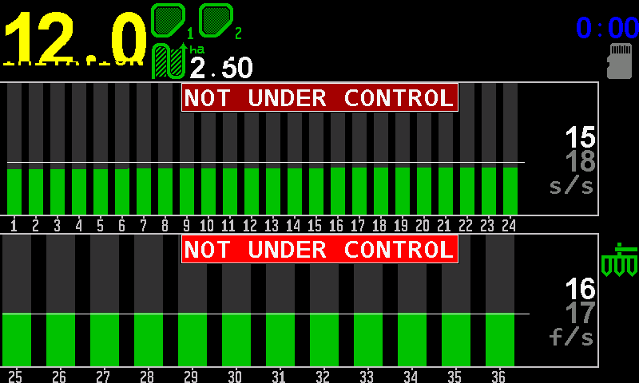
- « NOT UNDER CONTROL » (hors surveillance). Les rangs de ce diagramme ne sont pas surveillés.
- Colonnes sous la ligne. Chaque rang débite moins que le seuil.
- Ligne de contrôle. Tirée au-dessus du débit réel.
- Seuil d'alarme. 18 graines par seconde — plus que ce que sème la machine.
- Dose mesurée. 15 graines par seconde.
Les rangs sous la ligne sont hors surveillance volontairement : le panneau refuse de garder un seuil réglé au-dessus de ce que la machine débite réellement. Abaissez le seuil jusqu'à ce que les colonnes soient au-dessus de la ligne, ou laissez le panneau le régler : Régler automatiquement le seuil d'alarme.
Pour savoir si la machine sème ou non, le panneau se fonde sur la part de rangs qui sèment — un réglage du capteur, 20 % par défaut. En fourrière, les rangs sortent de la surveillance ; au passage suivant, ils y reviennent, avec ou sans capteur de position de travail. Le panneau l'indique par le son : trois bips courts quand le semis s'arrête, un bip court quand il reprend.
Ce que signifient chaque couleur et chaque symbole d'une colonne, et les quatre états d'une section : Couleurs des colonnes et états des sections.
Couleurs des colonnes et les quatre états d'une section
Ce que signifient chaque couleur et chaque symbole d'une colonne du diagramme des sections, et les quatre combinaisons de surveillance et d'application du produit dans lesquelles une section peut se trouver.
La construction du diagramme — ligne de dose, repères, ligne de contrôle — est décrite dans Le diagramme des sections. Cette page énumère les aspects que peut prendre une colonne isolée.
Couleurs des colonnes
| Ce que vous voyez | Ce que cela signifie |
|---|---|
| Colonne verte | Le rang sème normalement. |
| Colonne bleue | Le rang sème plus que ne le permet la consigne (« Precise » et « Hybrid »). |
| Colonne jaune | Le rang sème moins que ne le permet la consigne (« Precise » et « Hybrid »). |
| Fond clignotant rouge foncé, pas de colonne | Le rang ne sème presque rien alors que la machine sème — tube bouché ou vide. |
| Colonne blanche avec ! | La surveillance de cette section est désactivée. Rien à son sujet n'est surveillé. |
| × rouge | Le capteur ne répond pas. |
| ? rouge, colonne clignotant en rouge | Un appareil d'un mauvais type répond à la place de ce capteur. |
| ? jaune | Le capteur vient de recevoir ses réglages, ou il compte des graines mais le panneau n'a pas de vitesse pour les évaluer. |
| Hachures grises sur toute la colonne | La section est coupée pour le jalonnage, ou son application du produit est désactivée. |
| Hachures vertes en bas d'une colonne grise | Un faible débit dans une section coupée, encore dans les limites tolérées. |
| Hachures rouges dans une colonne grise | La section coupée sème dans le jalonnage. |
Les quatre états d'une section
Chaque section a deux commutateurs indépendants : le panneau la surveille-t-il (surveillance) et la machine applique-t-elle par elle (application du produit).
| Surveillance | Application | Ce que cela signifie | Ce que montre la colonne |
|---|---|---|---|
| oui | oui | Travail normal. | La colonne normale. |
| oui | non | Jalonnage : le rang ne sème volontairement pas, et le panneau le sait. | Hachures grises. |
| non | oui | Le rang sème, mais personne ne le contrôle. | Blanche avec ! |
| non | non | La section est entièrement hors du travail. | Blanche avec ! |
La surveillance se commute dans le menu contextuel du capteur : Mettre un capteur sous ou hors surveillance. « Product application » (application du produit) est un élément du même menu, au niveau Agronomist ; en mode jalonnage, les actionneurs ou les moteurs commutent eux-mêmes les sections et cet élément est ignoré.
L'écran d'accueil sur différentes machines
Le même panneau sur un semoir monograine, un semoir à céréales et des machines de 44 et 96 rangs — à l'arrêt et au travail — pour reconnaître votre propre écran.
Ce que montre l'écran d'accueil dépend du profil. Les images ci-dessous ont été prises sur un seul panneau, micrologiciel 1.2.3, configuré comme différentes machines. Les particularités du banc — l'horloge bleue, la vitesse jaune — sont expliquées dans À propos des images.
Un semoir monograine de huit rangs, à l'arrêt

- Vitesse d'avancement. Jaune : la vitesse est simulée, non mesurée.
- Trémies. La première verte, la deuxième rouge — cette trémie signale qu'elle est vide.
- Doseurs. Deux capteurs d'arbre de doseur.
- Turbine. Avec sa vitesse en tr/min à côté.
- Surface. Hectares traités sur le champ actif.
- Densité de semis. La dose réelle de semis en milliers par hectare.
- Carte mémoire. Une carte microSD est dans le logement.
- Tolérance. L'écart admis en vigueur, écrit au-dessus du diagramme.
- Repères de tolérance. Limites haute et basse, dans chaque colonne.
- Ligne de dose. La dose de consigne.
- Colonne de section. Vide : la machine est à l'arrêt.
- Champ de dose. Graines mesurées par mètre en haut, consigne en dessous.
- Verrouillage manuel. La main jaune : l'application du produit est verrouillée à la main. Verrouiller l'application à la main
- Défaut d'actionneur. Un défaut des moteurs électriques de doseur. Écran Motors
- Numéros de section.
Trois machines, à l'arrêt
Les consignes sont réglées, les doses réelles sont à zéro. Quarante-quatre capteurs de graines sur deux rangées de vingt-deux, deux trémies, deux arbres doseurs, une turbine, un champ de dose en graines par seconde ; l'icône du semoir à droite est verte — la machine est en position de travail.

Vingt-quatre capteurs de graines et douze capteurs d'engrais : deux diagrammes, deux champs de dose. En haut, deux trémies, deux arbres doseurs, la pression d'huile, la batterie, l'allumage et une turbine.

Huit capteurs de graines en mode « Precise » avec un capteur de pression : une rangée de colonnes avec la bande de tolérance, la dose en graines par mètre et le comptage par hectare.

Au travail
Le semoir monograine de huit rangs en train de semer. Chaque colonne est un rang ; les sommets bougent à chaque comptage, les hachures montrent les manques et les doubles. À lire avec Le diagramme des sections.

Le semoir à 24 rangs à 12 km/h. La série commence avec les colonnes sous la ligne et « NOT UNDER CONTROL » (hors surveillance) au-dessus des deux diagrammes ; puis la consigne est abaissée, les colonnes remontent au-dessus de la ligne et les rangs sont de nouveau sous surveillance.
La machine de 44 rangs à 12 km/h : deux diagrammes de vingt-deux colonnes, trémies pleines, arbres doseurs en rotation.
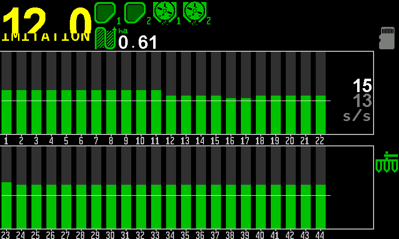
La plus grande machine : 48 rangs de semences et 48 rangs d'engrais, trois trémies, trois arbres doseurs, deux turbines. Elle aussi démarre sous la ligne et revient sous surveillance quand la consigne descend à la dose réelle.
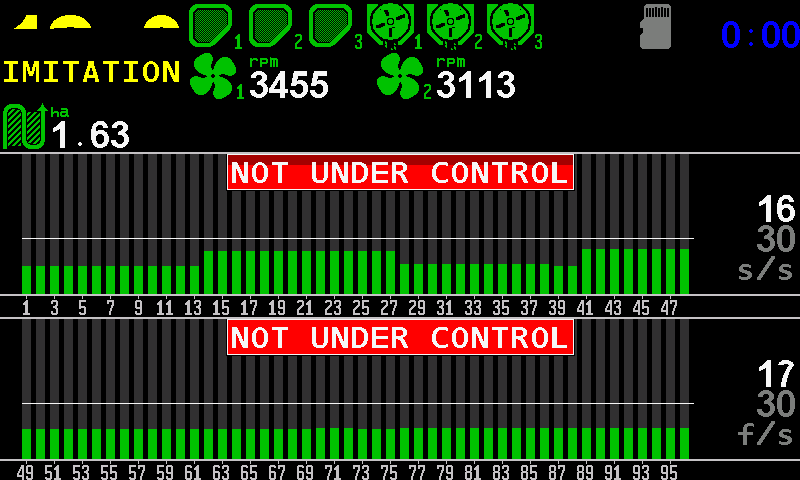
Une machine réelle au travail
Pris sur une machine avec 48 capteurs de graines sur deux rangées, deux trémies, deux capteurs d'arbre de doseur et une turbine, pendant le semis. Le champ de dose est sélectionné pour modification : son fond est éclairé, la consigne est en blanc et la valeur mesurée en gris. Non sélectionné, c'est l'inverse.
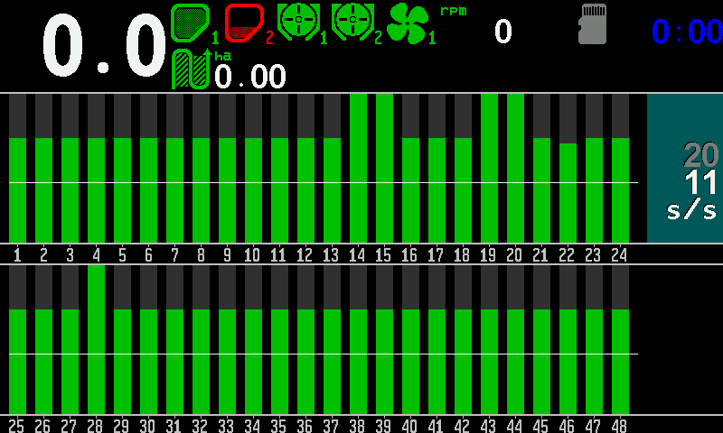
Indicateurs de l'écran d'accueil
Chaque indicateur de l'écran d'accueil avec tous ses états — ce que vous voyez, ce que cela signifie, ce qu'il faut faire.
L'emplacement de chaque indicateur est montré dans L'écran d'accueil. Cette page dit ce que signifie chacun, état par état.
Comment lire un indicateur


Presque tous les indicateurs suivent la même règle. Apprenez-la une fois et vous saurez lire un indicateur que vous n'avez jamais vu.
| Ce que vous voyez | Ce que cela signifie |
|---|---|
| Normal. L'appareil répond et sa valeur est dans les limites. | |
| Alarme. L'appareil répond, mais la valeur est sortie des limites. Une fenêtre d'alarme suit après la temporisation d'alarme. | |
| Pas de réponse de l'appareil. La valeur s'affiche XXXX. | |
| L'appareil est dans le profil, mais sa surveillance est désactivée. La valeur s'affiche !!!!. | |
| Icône alternant avec un ? rouge | Un appareil d'un mauvais type répond à sa place. La valeur s'affiche ????. |
| Pas un défaut. Un état que vous avez choisi ou qui demande votre attention : machine relevée, traceurs relevés, contact coupé, application verrouillée à la main. |
Vitesse

La vitesse d'avancement en km/h. Les messages relatifs à la vitesse remplacent le chiffre et clignotent environ une fois par seconde, afin que le chiffre reste lisible.
| Ce que vous voyez | Ce que cela signifie |
|---|---|
| Un nombre en blanc, par ex. 10.0 | Normal. |
| « SLOWER » (plus lentement) sur fond rouge | Vous roulez plus vite que le maximum réglé pour le capteur de vitesse. Ralentissez. |
| « FASTER » (plus vite) sur fond rouge | Vous roulez plus lentement que le minimum. Accélérez. |
| XX.X en rouge | Pas de réponse du module d'entrée qui porte le capteur de vitesse. |
| ???? en rouge | Un appareil d'un mauvais type répond à la place du capteur de vitesse. |
| Un nombre jaune alternant avec « IMITATION » (simulation) | La vitesse est simulée d'après le réglage du capteur de vitesse, non mesurée. Rien de ce qui dépend de la vitesse n'est réel. Voir Travailler sans capteur de vitesse. |
| INCREASE IMITATION / DECREASE IMITATION | La vitesse simulée elle-même est hors de la plage admise. Modifiez le réglage, pas la vitesse d'avancement. |
| Sensor1 / Sensor2 | Un des deux capteurs de vitesse est en panne. |
| « Settings » (réglages) | Les vitesses minimale et maximale se contredisent. |
« SLOWER » et « FASTER » ne sont pas des fenêtres d'alarme. Ils restent dans le champ de vitesse tant que la vitesse est incorrecte, car vous devez les voir pendant que vous la corrigez. Voir Alarmes du capteur de vitesse.
Horloge
La case de l'horloge, en haut à droite, est partagée par plusieurs messages.
| Ce que vous voyez | Ce que cela signifie |
|---|---|
| L'heure en blanc | Normal. |
| BAT en rouge, environ une seconde sur quatre | La pile de l'horloge est faible. L'horloge fonctionne encore ; entre les éclairs, l'heure est affichée en rouge. Faites remplacer la pile. |
| XX:XX en rouge, clignotant | La puce d'horloge ne répond pas. Le panneau n'a ni date ni heure ; tout ce qu'il enregistre porte une date et une heure fausses. |
| IMITAT en jaune | Le mode de simulation du menu Service est activé. |
| Heures:minutes en bleu, puis TRIAL, puis vide | Une période d'essai est en cours ; le chiffre bleu est le temps restant. Lorsque la première ligne n'a pas de place pour l'horloge, ce cycle n'apparaît que de temps en temps. |
Carte mémoire
Indique qu'une carte microSD est dans le logement. Deux états seulement : l'icône est là, ou elle n'y est pas.
Trémie


Une trémie pleine et verte est normale. Une trémie vide et rouge signifie que le niveau est tombé sous le capteur : remplissez. Voir Alarmes de trémie.
Doseur


La rotation de l'arbre du doseur. Tant que l'arbre tourne, l'icône tourne — le moyen le plus rapide de voir que le doseur fonctionne réellement. Rouge signifie pas de rotation, ou pas la vitesse requise. Voir Alarmes de rotation.
Turbine

La vitesse de la turbine en tours par minute. Vert est normal ; rouge — au-dessus du maximum ou sous le minimum. La × et le [!] ont leur signification habituelle.
Pression

La dépression ou la pression d'air dans le circuit de distribution, en kPa. Vert est normal ; rouge — au-dessus ou sous la plage admise. Voir Alarmes de pression.
Capteurs du moteur


Les capteurs du moteur qui entraîne la turbine.
| Indicateur | Vert | Rouge ou jaune |
|---|---|---|
| Pression d'huile | Normal | Rouge : la pression d'huile est tombée sous le niveau admis. |
| Charge de la batterie | Normal | Rouge : la batterie n'est pas chargée. |
| Allumage | Clé verte : contact mis, les capteurs du moteur sont surveillés | Clé jaune : contact coupé. Pas un défaut — mais le moteur n'est pas surveillé non plus. |
| Niveau de carburant | Normal | Rouge : il reste peu de carburant dans le réservoir. |
| Filtre à air | Normal | Rouge : le filtre à air est colmaté ; nettoyez-le ou remplacez-le. |
Surface

La surface traitée sur le champ actif, en hectares.
Densité de semis

En mode « Precise » (précis) : la dose réelle de semis en milliers de graines par hectare (ths/ha).
Dose de produit en masse


Affiché lorsque les doseurs appliquent des produits en masse ; un indicateur par produit, avec son numéro. Il montre la dose en kg par hectare.
| Ce que vous voyez | Ce que cela signifie |
|---|---|
| Icône verte | Normal. La machine applique ce qu'on lui a demandé. |
| Icône rouge, clignotante | La dose réelle est hors de l'écart admis par rapport à la consigne. |
| Champ éclairé, chiffre clignotant | La consigne est en cours de réglage. Touchez et maintenez le champ pour saisir la consigne sur le pavé numérique, ou utilisez « PLUS » / « MINUS ». |
| Champ éclairé, sans clignoter | Le réglage est actif, mais c'est un autre champ de dose qui est modifié. Celui-ci montre sa consigne et attend. |
Dosage en masse impossible
Une icône de produit rouge clignotante au bord droit. Le panneau a calculé que la consigne ne peut être tenue à aucune vitesse d'avancement : la vitesse la plus basse à laquelle les cannelures doseuses peuvent débiter la dose est déjà égale ou supérieure à la plus haute.
Que faire. Contrôlez d'abord les doses de consigne — un produit qui en demande trop ferme la plage pour tous. Contrôlez ensuite les cannelures doseuses : une cannelure d'une autre taille peut être nécessaire. Les limites de vitesse calculées par le panneau figurent sur l'écran « Information » (informations) du capteur de vitesse. Voir Alarmes de dosage en masse.
Traceurs
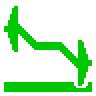
| Ce que vous voyez | Ce que cela signifie |
|---|---|
| Vert, deux bras abaissés | Les deux traceurs sont abaissés. |
| Vert, un bras abaissé | Seul ce traceur est abaissé — gauche ou droit, comme dessiné. |
| Jaune, deux bras relevés | Les deux traceurs sont relevés. Pas un défaut ; sur une machine qui change le passage de jalonnage par les traceurs, le passage change maintenant. |
Position de travail


Vert — abaissée, en travail. Jaune — relevée, en transport, sans application.
Passage de jalonnage

Affiché uniquement si le jalonnage est activé. Le grand chiffre est le passage en cours, le petit en dessous le nombre de passages du rythme.
| Ce que vous voyez | Ce que cela signifie |
|---|---|
| Chiffres du passage, par ex. 1 sur 3 | Où vous en êtes avant le prochain jalonnage. |
| Icône de jalonnage grise | Le passage change tout seul. |
| Icône de jalonnage jaune | Le passage ne change pas tout seul : le changement automatique est désactivé, ou le capteur dont il dépend est absent, muet ou hors surveillance. Changez-le à la main. |
Voir Passer au passage de jalonnage suivant.
Verrouillage manuel

Une main jaune, clignotante, au bord droit : l'application du produit est verrouillée à la main. La machine n'applique rien, quoi qu'elle fasse. Pas affichée du tout tant que l'application est autorisée. Elle apparaît sur les machines à moteurs électriques de doseur ou à pompe d'engrais liquide. Voir Verrouiller l'application à la main.
Défaut d'actionneur


Une seule icône pour tous les moteurs électriques et actionneurs de jalonnage réunis. Pas affichée du tout tant que tout est en ordre.
| Ce que vous voyez | Ce que cela signifie |
|---|---|
| Rouge, clignotante | Au moins un moteur ou un actionneur est en état d'alarme. |
| Alternant avec un [!] blanc | La surveillance d'au moins un actionneur est désactivée. Aucun défaut connu — mais cet actionneur n'est pas surveillé. |
Lequel et pourquoi, c'est sur l'écran Motors.
Pompe d'engrais liquide
Selon l'équipement, la pompe a deux ou trois indicateurs.
| Indicateur | Ce qu'il montre |
|---|---|
| L'indicateur principal. Son menu contextuel contient les paramètres de la pompe. | |
| L'effort de la pompe. Il disparaît en premier quand l'écran n'a pas de place pour lui. | |
| Seulement si le capteur de pression est monté et activé dans les réglages du calculateur de pompe. |
Débit. Outre le vert, le rouge, la × et le [!] : une pompe jaune avec STOP — l'application est verrouillée à la main ou la machine est relevée, et la pompe ne démarrera pas quand la machine avance ; un chiffre de consigne éclairé — le profil ne comporte pas de capteurs de débit de section, le chiffre est donc la consigne, non une mesure.
Charge. À 99 % et plus, elle passe au jaune : la pompe est à sa limite et ne peut pas suivre une vitesse plus élevée. Roulez plus lentement, sinon la dose tombe sous la consigne. ---- clignotant en rouge : le calculateur ne donne pas de valeur de charge.
Pression. Rouge signifie que la pression du liquide est trop élevée — réduisez la vitesse, ou augmentez « Max pressure, Bar » (pression max.) dans les réglages du calculateur de pompe si la conduite peut vraiment la supporter. ---- clignotant en rouge : le capteur de pression est défectueux ou ne donne aucune valeur. Voir Alarmes du calculateur de pompe.
Le deuxième écran d'accueil
L'écran d'accueil d'une machine sans capteurs de graines — ce qu'il contient, comment l'ouvrir et le fermer, et ce que font ses chevrons et ses vignettes.
Cet écran a été conçu pour un système sans capteurs de graines : une machine dont la dose de semis est tenue par les moteurs électriques de doseur et dont le panneau surveille les principaux organes de travail. Sur une telle machine, l'écran d'accueil ordinaire serait presque vide.
Ouvrez-le depuis l'écran d'accueil par un glissement vers la droite. Fermez-le avec « HOME » ou par un glissement vers la gauche. Il ne fait pas partie du cycle des écrans de travail, et le panneau n'y passe pas de lui-même — même sur une machine sans capteurs de graines, il démarre sur l'écran d'accueil ordinaire.
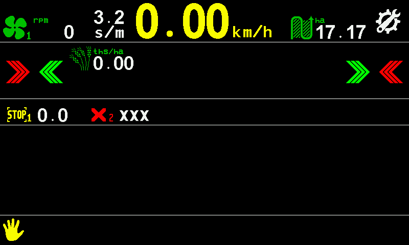
- Turbine. La turbine et sa vitesse en tr/min.
- Espacement des graines. En graines par mètre.
- Vitesse d'avancement. En km/h ; jaune tant qu'elle est simulée. Vitesse
- Surface. Hectares traités sur le champ actif.
- Symbole des réglages. Un toucher ouvre le menu principal, comme « MENU ».
- Chevrons rouges. Un toucher met le moteur le plus extérieur de ce côté hors surveillance.
- Chevrons verts. Un toucher remet sous surveillance le moteur suivant vers ce côté.
- Dose de consigne. En milliers de graines par hectare. Touchez et maintenez, puis glissez vers le haut ou le bas pour la modifier.
- Moteur 1. Son numéro et sa valeur ; l'icône alterne avec le signe d'état — ici STOP, le moteur ne tourne pas.
- Moteur 2. Une × rouge et XXX — pas de liaison ; le moteur n'est pas piloté.
- Verrouillage manuel. La main jaune : l'application est verrouillée à la main. Touchez et maintenez-la, ou maintenez « HOME », pour verrouiller ou déverrouiller.
Chaque icône de moteur alterne, environ une fois par seconde, entre l'image du moteur et le signe de son état. Dans l'autre phase de clignotement, le même écran se présente ainsi — les moteurs sont dessinés comme des symboles de moteur, et le mot « IMITATION » (simulation) a remplacé le chiffre de la vitesse parce que la vitesse est simulée :

Ce que vous pouvez faire ici
| Pour faire ceci | Faites ceci |
|---|---|
| Ouvrir le menu principal | « MENU », ou touchez le symbole des réglages |
| Modifier la dose de semis | Touchez et maintenez la dose, puis glissez vers le haut ou le bas. Elle reste dans les limites admises. |
| Mettre des moteurs hors ou sous surveillance | Touchez les chevrons rouges ou verts à l'une ou l'autre extrémité de la bande de dose. Confirmez par « Yes » (oui) si le panneau le demande. |
| Ouvrir les réglages d'un moteur | Touchez et maintenez le moteur |
| Verrouiller ou déverrouiller l'application du produit | Maintenez « HOME », ou touchez et maintenez la main. Un bip court confirme. |
| Revenir à l'écran d'accueil | « HOME », ou glissez vers la gauche |
Ce que signifient les états des moteurs : Écran Motors.
Les écrans de travail et la façon de passer de l'un à l'autre
Les quatre écrans de travail en cycle, le deuxième écran d'accueil à côté, et toutes les façons — bouton ou glissement — de passer de l'un à l'autre.
Le panneau a quatre écrans de travail en cycle, et un cinquième à part.
| Écran | À quoi il sert |
|---|---|
| Écran d'accueil | Les diagrammes des sections, les indicateurs des appareils, la vitesse, la surface et les doses. Le panneau démarre ici. |
| Table (tableau) | Les mesures de chaque section en chiffres, sous forme de liste. Plusieurs tableaux, selon le mode de contrôle. |
| Statistics (statistiques) | Les résultats du travail par champ : surface, trajet, quantités, qualité. |
| Motors (moteurs) | Les moteurs électriques de doseur, et les actionneurs de jalonnage si la machine en a. Présent seulement si le profil comporte au moins un moteur ou un actionneur de jalonnage. |
| Deuxième écran d'accueil | Un écran d'accueil pour les machines sans capteurs de graines. En dehors du cycle. |
L'écran Motors s'appelait écran Actuators dans la documentation antérieure. Sur la plupart des machines, il montre les moteurs électriques de doseur ; ce manuel l'appelle donc Motors.
Le cycle
« HOME » passe à l'écran suivant, toujours dans le même sens, et revient à l'écran d'accueil depuis le dernier :
Écran d'accueil → Table → Statistics → Motors → écran d'accueil.
Sans moteurs ni actionneurs de jalonnage dans le profil, il n'y a pas d'écran Motors et Statistics revient directement à l'écran d'accueil.
Toutes les façons de passer d'un écran à l'autre
Le glissement doit être long, avec un doigt, à travers l'écran — un mouvement court n'est pas pris pour un changement d'écran.
| Depuis | Action | Vers |
|---|---|---|
| Écran d'accueil | « HOME », ou glissement vers la gauche | Table |
| Écran d'accueil | Glissement vers la droite | Deuxième écran d'accueil |
| Table | « HOME », ou glissement vers la gauche | Statistics |
| Table | « BACK », ou glissement vers la droite | Écran d'accueil |
| Statistics | « HOME », ou glissement vers la gauche | Motors (écran d'accueil, si la machine n'en a pas) |
| Statistics | Glissement vers la droite | Table |
| Statistics | « BACK » | Écran d'accueil |
| Motors | « HOME », « BACK », ou glissement vers la gauche | Écran d'accueil |
| Motors | Glissement vers la droite | Statistics |
| Deuxième écran d'accueil | « HOME », ou glissement vers la gauche | Écran d'accueil |
Boutons ou gestes
Presque tout sur les écrans de travail peut se faire avec un bouton ou avec un geste.
| Écran | Ce que cela fait | Bouton | Geste |
|---|---|---|---|
| Écran d'accueil | Ouvre le menu principal | « MENU » | Toucher avec deux doigts |
| Écran d'accueil | Règle le seuil d'alarme d'après la dose réelle | — | Double toucher avec un doigt, pendant l'application |
| Écran d'accueil | Ouvre le deuxième écran d'accueil | — | Glissement vers la droite |
| Table | Fait défiler les lignes | « UP » / « DOWN » | Glissement vers le haut ou le bas |
| Table | Tableau précédent ou suivant | « MINUS » / « PLUS » | Long glissement vers la gauche ou la droite avec deux doigts |
| Table | Demande s'il faut remettre les mesures à zéro | « MENU » | Toucher avec deux doigts |
| Statistics | Fait défiler le rapport | « UP » / « DOWN » | Glissement vers le haut ou le bas |
| Statistics | Affiche un autre champ | « MINUS » / « PLUS » | Glissement vers la gauche ou la droite avec deux doigts |
| Statistics | Ouvre le menu de l'écran | « MENU » | Toucher avec deux doigts |
Deux actions sur les écrans de travail n'ont pas de bouton : le glissement vers la droite qui ouvre le deuxième écran d'accueil, et le double toucher qui règle le seuil d'alarme. Tout le reste est accessible avec les boutons. La liste complète par écran : Boutons et gestes.
L'écran Table
Les mesures de chaque section en chiffres — quels tableaux a votre machine, ce que signifie chaque colonne et comment lire les couleurs.
L'écran Table (tableau) montre les mesures de chaque section en chiffres, une ligne par section. Il répond à la question que le diagramme ne peut pas traiter : quelle section exactement, et de combien. Ouvrez-le depuis l'écran d'accueil avec « HOME » ; quittez-le avec « BACK ».
Un semoir monograine en mode « Precise »

- #. Le numéro de la section.
- sds/m. Graines par mètre, mesurées à l'instant.
- Q.%. Qualité — la part de graines placées une à une, comme voulu.
- Db%. Doubles — deux graines là où une était prévue.
- Sk%. Manques — un vide là où une graine était prévue.
- ks/Ha. La dose appliquée en milliers de graines par hectare (dans le deuxième tableau : graines par mètre).
- %. L'écart de cette section par rapport à la dose réglée.
- Numéro de tableau. Ce tableau et le nombre de tableaux, entre (−) et (+) — « MINUS » et « PLUS » changent de tableau.
- Numéro de section sur fond jaune. Quelque chose sur cette ligne dérive vers sa limite.
- Valeur sur fond jaune. Le chiffre qui a dérivé — ici les manques de la section 7.
- Totaux. Les mêmes colonnes pour toute la machine.
Une valeur sur fond jaune dérive vers sa limite ; sur fond rouge, elle l'a dépassée. Une ligne entière en gris avec ! est une section mise hors surveillance ; une ligne en rouge avec × est un capteur qui ne répond pas, avec ? un appareil d'un mauvais type.
Un semoir à céréales en mode « Flow »
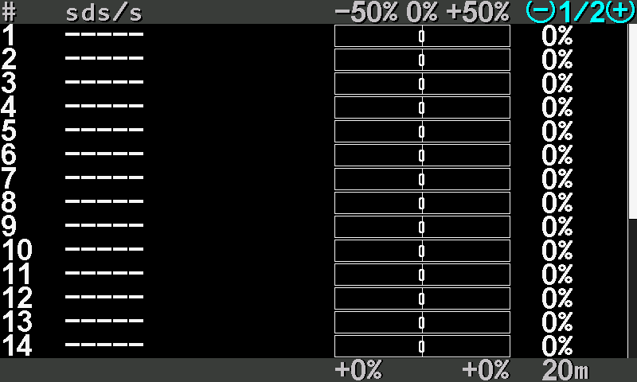
- #. Le numéro de la section.
- sds/s. Graines par seconde. Des tirets tant que rien n'est compté.
- Échelle des écarts. De −50 % à +50 %, en passant par 0.
- Barre d'écart. À quelle distance cette section se trouve de la dose réglée.
- %. Le même écart en chiffre.
- Numéro de tableau. Tableau 1 sur 2 — le second contient les sections d'engrais.
- Écart le plus bas. La section la plus éloignée sous la dose.
- Écart le plus haut. La section la plus éloignée au-dessus de la dose.
- Intervalle de recalcul. Le tronçon sur lequel les chiffres sont recueillis — « Recalculation,m » (recalcul) des capteurs.
Quels tableaux a votre machine
| Tableau | Affiché quand |
|---|---|
| Compteurs de graines — graines par seconde ou par mètre, avec les barres d'écart | Toujours. |
| Dose par surface (milliers par hectare) et dose par distance (graines par mètre) | Seulement dans le mode de contrôle de semis « Precise ». |
| Engrais solide | La machine a des capteurs d'engrais et le mode de contrôle de l'engrais n'est pas « Precise ». |
| Engrais liquide | La machine a des capteurs d'engrais liquide. |
En mode « Precise », le semoir monograine ci-dessus a trois tableaux : dose par surface (1/3), dose par distance (2/3) et compteurs de graines (3/3) — le nombre de graines semées par chaque section, à côté des barres d'écart, avec le total de la machine en milliers en bas.

Travailler avec l'écran
| Ce que vous voulez | Bouton | Ou geste |
|---|---|---|
| Tableau suivant ou précédent | « PLUS » / « MINUS » | Long glissement vers la gauche ou la droite avec deux doigts |
| Faire défiler les lignes | « UP » / « DOWN » | Glissement vers le haut ou le bas |
| Remettre les mesures à zéro | « MENU » | Toucher avec deux doigts |
| Aller à Statistics | « HOME » | Glissement vers la gauche |
| Retour à l'écran d'accueil | « BACK » | Glissement vers la droite |
Remise à zéro : Remettre les mesures à zéro.
Le tableau pendant le semis
Les lignes changent à chaque comptage ; une ligne qui dérive devient jaune.

Sur les grandes machines, les rangs ne tiennent pas sur une page : « UP » et « DOWN » les font défiler.
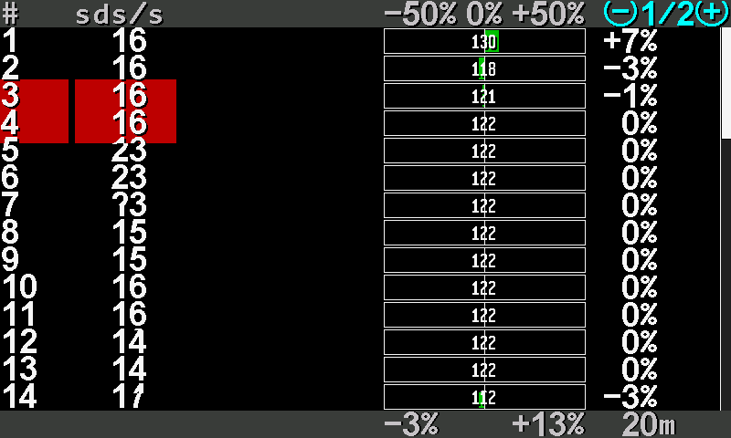
L'écran Statistics
Le rapport du travail sur chaque champ, bloc par bloc et ligne par ligne — et le menu qui choisit le champ, enregistre le rapport et l'efface.
L'écran Statistics (statistiques) est le rapport du travail : la distance parcourue, la surface couverte, la quantité semée et la régularité du semis. Il est conservé séparément pour chaque champ et survit à l'extinction. Ouvrez-le avec « HOME » depuis l'écran Table (deux fois depuis l'écran d'accueil) ; quittez-le avec « BACK ».
Le rapport est une longue liste. Faites-la défiler avec « UP » et « DOWN », ou glissez vers le haut et le bas.
L'en-tête et le travail sur le champ

- Numéro de champ. Le champ dont vous voyez le rapport. « MINUS » et « PLUS » — ou un glissement à deux doigts — affichent un autre champ.
- (A). C'est le champ actif — celui dans lequel le panneau écrit maintenant.
- Date et heure. La date du jour et l'heure.
- Trajet. Distance parcourue, en km.
- Surface. Surface couverte, en ha.
- Temps de travail. Heures, minutes et secondes de travail.
- Vitesse de déplacement. La vitesse d'avancement moyenne.
- Started / Ended. Quand le travail sur ce champ a commencé et fini.
- Seeding. Le bloc suivant — voir plus bas.
Le bloc de semis

- Seeds sown (x1000). Le total, en milliers de graines.
- Quality. La part de graines placées une à une, comme voulu. Jugez le travail sur ce chiffre.
- Doubles. Deux graines là où une était prévue.
- Skips. Un vide là où une graine était prévue.
- Not sown. La part du travail où rien n'est sorti du tout.
- Actual / Target. Ce qui a été appliqué par rapport à ce qui était réglé.
- Population, ths/ha. En milliers par hectare ; l'écart entre parenthèses.
- Rate, s/m. En graines par mètre ; la consigne à droite.
- Sown / Not sown / Unknown. Le champ réparti en trois, en hectares.
- Barre. La même répartition en barre de couleur : vert semé, rouge non semé, gris inconnu.
- Seed sensors. Le bloc suivant — section par section.
Unknown (inconnu) est la surface parcourue pendant que le panneau ne pouvait pas juger — ce n'est pas un défaut, mais ce n'est pas non plus la preuve d'un travail effectué.
Section par section

- Seed sensors. Un bloc par section suit.
- Seed sensor 1. Le numéro de la section et les graines qu'elle a comptées.
- q d s n. Qualité, doubles, manques et non semé pour cette section.
- Sown / not sown / unknown. La part de chacun pour cette section (s, n, ?) et la barre.
- Population. Milliers par hectare pour cette section, avec son écart.
- Spacing. Graines par mètre pour cette section, avec son écart.
C'est ici qu'un semoir irrégulier se trahit. Une section de qualité inférieure aux autres, ou dont la partie rouge de la barre est plus longue, désigne ce rang : une sortie bouchée, un disque usé, un capteur à nettoyer.
Blocs qui apparaissent sur d'autres machines
| Bloc | Ce qu'il contient |
|---|---|
| Work without alarms control | La part du travail que le panneau n'a pas surveillée — effectuée avec la surveillance désactivée ou verrouillée. |
| Speed control | Sur quelle distance et pendant combien de temps vous avez roulé hors de la plage de vitesse admise. |
| Fertilizing, Liquid fertilizer | Fertilisé / non fertilisé / inconnu, si la machine les applique. |
| Product | Pour un produit appliqué en masse : la quantité appliquée, et la dose réelle par rapport à la consigne en kg/ha. |

Le menu de l'écran
Appuyez sur « MENU », ou touchez avec deux doigts.

| Élément | Ce qu'il fait |
|---|---|
| « Select field » (choisir le champ) | Fait du champ affiché le champ actif — le panneau y écrit désormais. Affiché seulement quand vous regardez un champ qui n'est pas actif. Un champ dont les statistiques ne sont pas vides ne peut pas être choisi tant que ses données ne sont pas effacées ; le panneau le dit et demande. |
| « Statistics » (statistiques) | Bascule le rapport entre court et complet. Le rapport court garde les totaux et omet le détail par section. |
| « Mileage » (kilométrage) | Trajet en km et surface en ha sur toute la vie du système. Ces totaux ne peuvent pas être remis à zéro. Sans capteur de vitesse, le temps de fonctionnement cumulé à la place. |
| « Save to SD-card » (enregistrer sur carte SD) | Écrit un champ, ou tous, sur la carte mémoire. Affiché tant qu'une carte est dans le logement. |
| « Zero statistics » (remettre les statistiques à zéro) | Efface les statistiques. |
L'écran Motors
Les moteurs électriques de doseur et les actionneurs de jalonnage de la machine, une vignette chacun — comment lire une vignette et comment accéder aux réglages d'un moteur.
L'écran Motors (moteurs) montre les moteurs électriques de doseur de la machine, une vignette chacun, et les actionneurs de jalonnage si la machine en a. Regardez ici quand un rang cesse de semer et que vous voulez savoir si le moteur en est la cause.
Il existe sur toute machine dont le profil comporte au moins un moteur électrique ou un actionneur de jalonnage. Accédez-y avec « HOME » depuis l'écran Statistics ; quittez-le avec « HOME » ou « BACK ».

- Moteur 1, STOP. Jaune — le moteur est en état de marche, mais l'application du produit ne tourne pas.
- Valeur du moteur 1. La vitesse de l'arbre entraîné en tr/min, ou graines par mètre en mode « Precise ».
- Moteur 2, × rouge. Pas de liaison avec ce moteur.
- XXX. Pas de valeur, car le moteur ne répond pas.
Lire une vignette
La couleur du symbole est l'état. La valeur à côté est la vitesse de l'arbre entraîné en tr/min — ou, dans le mode de contrôle « Precise », les graines par mètre mesurées par le capteur de graines de ce rang.
| Symbole | Valeur | État |
|---|---|---|
| Moteur, vert | le chiffre | Normal. Le moteur est sous surveillance et piloté. |
| STOP, jaune | le chiffre | Le moteur est en état de marche, mais l'application du produit est désactivée. Il n'a rien — le système n'applique simplement pas. |
| Moteur, rouge | le chiffre | Le moteur est en état d'alarme. Lisez l'alarme pour en connaître la cause : Alarmes du calculateur de moteur. |
| ×, rouge | XXX | Pas de liaison. Contrôlez d'abord le câble et le connecteur. |
| ?, rouge | ??? | Le panneau ne peut pas dire ce qu'est cet appareil : un autre type d'appareil répond à sa place, ou le calculateur est resté en mode de mise à jour de son micrologiciel. |
| !, contour | !!! | Le moteur est mis hors surveillance par l'opérateur. Il n'est ni piloté ni surveillé. |
Actionneurs de jalonnage
| Symbole de l'actionneur | État |
|---|---|
| Rentré ou sorti, vert | L'actionneur a atteint sa position. |
| Rentré ou sorti, jaune | L'actionneur se déplace vers cette position. |
| Alternant entre rentré et sorti, jaune | Le panneau ne peut pas déterminer la position de l'actionneur. |
| Rouge clignotant | L'actionneur est en état d'alarme : Alarmes de jalonnage. |
| × rouge ou ? clignotant | Pas de liaison, ou un appareil d'un mauvais type. |
| Blanc clignotant | L'actionneur est mis hors surveillance. |
Travailler avec l'écran
| Ce que vous voulez | Bouton | Ou geste |
|---|---|---|
| Les réglages d'un moteur | — | Touchez et maintenez sa vignette |
| Retour à l'écran Statistics | — | Glissement vers la droite |
| Retour à l'écran d'accueil | « HOME » ou « BACK » | Glissement vers la gauche |
L'appui long ouvre le menu contextuel du moteur sur lequel vous avez appuyé. On accède au même menu depuis l'écran d'accueil, mais ici vous voyez d'un coup tous les moteurs de la machine et pouvez choisir celui qui se comporte mal. Voir Réglages du moteur de doseur.
Modifier la dose de consigne
Augmenter ou diminuer la dose que le panneau tient et surveille, depuis l'écran d'accueil, pendant le semis — avec les boutons ou au toucher.
Le champ de dose, à droite de chaque diagramme, affiche deux chiffres : la dose mesurée en haut, la consigne en dessous. En mode « Flow » (débit), la consigne est le seuil d'alarme du diagramme — voir Le diagramme des sections.
Avec les boutons
Sur l'écran d'accueil, appuyez une fois sur « PLUS » ou « MINUS ». Un champ de dose est sélectionné et se met à clignoter ; rien n'a encore changé.
Le champ de dose à droite sélectionné pour modification : fond éclairé, consigne en blanc. Appuyez sur « PLUS » pour augmenter la consigne ou sur « MINUS » pour la diminuer, un pas par appui.
Si la machine a plus d'un champ de dose — semences et engrais, ou produits en masse — appuyez sur « DOWN » ou « UP » pour passer au suivant ou au précédent.
Appuyez sur « BACK » pour terminer. Le champ cesse de clignoter et la nouvelle consigne est en vigueur.
Au toucher
Touchez et maintenez le champ de dose d'un diagramme. Il s'éclaire.
Glissez vers le haut sur l'écran pour augmenter la consigne, vers le bas pour la diminuer — un pas par glissement.
Touchez l'écran en dehors des diagrammes pour terminer.
Pour un produit appliqué en masse, toucher et maintenir son indicateur en kg/ha ouvre à la place le pavé numérique : saisissez la consigne et touchez « OK » (Saisir des nombres). Sur le deuxième écran d'accueil, touchez et maintenez la dose, puis glissez.
Verrouiller l'application du produit à la main
Arrêter toute application de produit par un appui long, puis la relancer — ce que fait le verrouillage et comment voir qu'il est actif.
Le verrouillage manuel arrête toute application de produit : les moteurs de doseur et la pompe ne tournent pas, quoi que fasse la machine. Utilisez-le pour traverser un champ déjà semé, pour rouler sur route avec la machine abaissée, ou lorsque vous travaillez sans capteur de vitesse.
Sur l'écran d'accueil, maintenez « HOME » jusqu'à ce que le panneau émette un bip.
Regardez le bord droit de l'écran. Une main jaune y clignote : l'application est verrouillée.

Pour déverrouiller, maintenez de nouveau « HOME ». Un bip court ; la main disparaît.
Sur le deuxième écran d'accueil, la même action fonctionne avec « HOME », ou en touchant et maintenant la main.
Ce que le verrouillage change ailleurs
- Les vignettes de moteur de l'écran Motors montrent un STOP jaune — en état de marche, sans application.
- L'indicateur de débit de la pompe montre une pompe jaune avec STOP (Pompe d'engrais liquide).
- La commande d'application du produit ne démarre pas quand vous avancez — le verrouillage doit être désactivé pour que la commande démarre (Démarrage rapide).
- Le travail effectué verrouillé est compté dans les statistiques sous Work without alarms control (Statistics).
La main jaune s'affiche sur les machines à moteurs électriques de doseur ou à pompe d'engrais liquide.
Régler automatiquement le seuil d'alarme
Laisser le panneau régler le seuil d'alarme des diagrammes d'après la dose que la machine sème réellement, au lieu de le deviner — semoirs à céréales en mode « Flow » ou « Hybrid ».
Sur un semoir à céréales, les graines arrivent trop rapprochées pour être comptées une à une ; le panneau surveille donc chaque rang par rapport à un seuil d'alarme : la ligne du diagramme. Réglé trop haut, tous les rangs passent sous la ligne — « NOT UNDER CONTROL » (hors surveillance). Réglé trop bas, un rang à moitié bouché passe inaperçu. Le panneau peut le régler pour vous d'après ce que la machine sème réellement.
Cela fonctionne dans les modes « Flow » (débit) et « Hybrid » (hybride), pour les diagrammes de semences et d'engrais solide, et pour l'engrais liquide en mode « Flow ».
Commencez à semer à votre vitesse normale, avec du produit qui circule dans tous les rangs.
Faites un double toucher sur l'écran d'accueil avec un doigt.
Le panneau émet un bip et éclaire le champ de dose : le nouveau seuil d'alarme est réglé d'après la dose semée à cet instant.
Les diagrammes avec les colonnes au-dessus de la ligne. Vérifiez que chaque colonne est au-dessus de sa ligne.
Le double toucher ne fonctionne que pendant l'application du produit. À l'arrêt, il ne se passe rien.
Ce que signifie la ligne et pourquoi les rangs en dessous ne sont pas surveillés : Le diagramme des sections.
Mettre un capteur sous ou hors surveillance
Empêcher le panneau de surveiller un capteur — une section coupée, un capteur défectueux — et le remettre sous surveillance plus tard.
Un capteur hors surveillance n'est pas surveillé : le panneau ne déclenche aucune alarme à son sujet, quoi qu'il signale. Mettez un capteur hors surveillance lorsque sa section est volontairement hors travail ou lorsque le capteur est défectueux et que vous devez finir le champ. Remettez-le sous surveillance dès que possible.
Mettre un capteur hors surveillance
Sur l'écran d'accueil, touchez et maintenez le capteur — sa colonne sur le diagramme, ou son icône. Son menu contextuel s'ouvre.
Le menu contextuel d'un capteur de graines. Sélectionnez « Disable control » (désactiver la surveillance) avec « UP » / « DOWN » et appuyez sur « MENU », ou touchez l'élément.
Le panneau demande « Are you sure that you want disable control? » (voulez-vous vraiment désactiver la surveillance ?). Touchez « Yes » (oui), ou appuyez sur « PLUS ».

La confirmation avant la désactivation de la surveillance. La colonne devient blanche avec ! (une icône alterne avec un [!] blanc). Le capteur n'est plus surveillé.
Le remettre sous surveillance
Procédez de la même façon et choisissez « Enable control » (activer la surveillance). Le panneau demande « Are you sure that you want enable control? » (voulez-vous vraiment activer la surveillance ?) ; confirmez par « Yes ». Un capteur de graines remis sous surveillance affiche un ? jaune pendant quelques secondes, le temps de recevoir ses réglages.
Quand les statistiques doivent être effacées
Pour certains capteurs, le panneau demande d'abord d'effacer les statistiques du champ actif : il affiche « Data for the selected field must be erased! » (les données du champ sélectionné doivent être effacées !) et pose de nouveau la question. « Yes » efface les statistiques du champ actif — au niveau Operator seulement après le code de l'agronome — et change la surveillance ; « No » laisse les deux inchangées.
Le capteur de vitesse ne peut pas être mis hors surveillance. Les moteurs se mettent hors surveillance de la même façon, depuis leur vignette de l'écran Motors ou avec les chevrons du deuxième écran d'accueil. Ce que signifient les quatre combinaisons de surveillance et d'application du produit : Les quatre états d'une section.
Remettre à zéro les mesures de l'écran Table
Remettre à zéro les compteurs de graines et d'engrais de l'écran Table — pour un nouveau champ ou un nouveau lot de semences — sans toucher aux statistiques du champ.
L'écran Table (tableau) continue de compter depuis le moment où ses mesures ont été remises à zéro pour la dernière fois. Remettez-les à zéro quand vous commencez un nouveau champ ou un nouveau lot de semences, pour que les compteurs et les écarts ne décrivent que le nouveau travail.
Ouvrez l'écran Table : « HOME » sur l'écran d'accueil.
Appuyez sur « MENU », ou touchez l'écran avec deux doigts. Le panneau demande « Zero readings? » (remettre les mesures à zéro ?).
La question avant la remise à zéro : Yes en vert, No en rouge. Touchez « Yes » (oui), ou appuyez sur « PLUS ». Les compteurs de chaque capteur de graines, d'engrais solide et d'engrais liquide sont remis à zéro.
« No » (non), « MINUS » ou « BACK » laisse tout comme avant.
Seuls les compteurs de l'écran Table sont remis à zéro. Les statistiques du champ ne sont pas touchées ; elles s'effacent avec « Zero statistics » (remettre les statistiques à zéro) dans le menu de l'écran Statistics.
Remplir les disques de semences
Faire tourner les disques à graines d'un semoir monograine à moteurs de doseur jusqu'à ce que chaque disque contienne des graines, pour que le semis commence dès le premier mètre — comment lancer l'opération et lire le résultat.
Cela ne concerne que les semoirs monograines dotés de moteurs électriques de doseur de semences, en mode de contrôle « Precise » (précis). Sans moteurs dans le profil, ou dans un autre mode, l'élément de menu n'est pas affiché.
Lorsque les disques sont entraînés par des moteurs électriques, ils restent vides tant que les moteurs ne tournent pas. Si vous partez avec des disques vides, les premiers mètres de chaque rang ne reçoivent rien : chaque disque doit d'abord prélever des graines et les amener jusqu'au point de chute. Le remplissage fait tourner les disques machine à l'arrêt, pour que le semis commence dès le premier mètre.
Arrêtez la machine. L'élément n'est affiché que machine à l'arrêt.
Sur l'écran d'accueil, appuyez sur « MENU ». Sélectionnez « Fill the disks with seeds » (remplir les disques de semences) et appuyez sur « MENU ».
Le menu principal avec Fill the disks with seeds sélectionné. Le panneau demande « Are you sure? » (êtes-vous sûr ?). Touchez « Yes » (oui), ou appuyez sur « PLUS ». « No » (non), « MINUS » ou « BACK » annule.
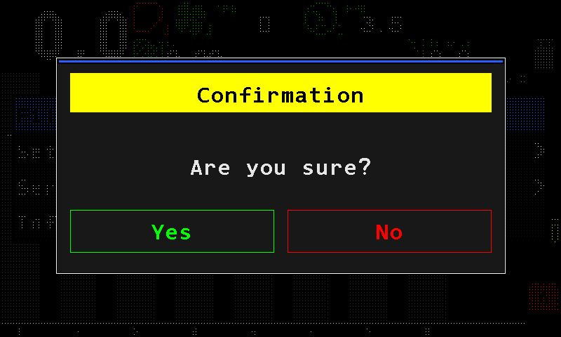
La confirmation avant la rotation des disques. Observez les vignettes. Chaque moteur fait tourner son disque jusqu'à ce que le capteur de graines de son rang enregistre la première graine. À la fin, le panneau émet trois bips et affiche « Operation complete. » (opération terminée).
Touchez « Close » (fermer), ou appuyez sur « BACK », pour revenir à l'écran d'accueil.
Pour arrêter avant la fin, touchez « Cancel » (annuler) ou appuyez sur « BACK » : les moteurs s'arrêtent aussitôt et leur commande repasse à la logique de semis.
Lire l'écran

- Vignette verte. Terminé : le capteur de graines a enregistré une graine, le disque est rempli.
- Vignette rouge foncé. Échec : le disque n'a pas pu être rempli. Le numéro du moteur est en rouge vif.
- Lettres de cause. Pourquoi la vignette est en échec — voir le tableau ci-dessous. Ici m g.
- « Operation complete. » Tous les moteurs ont terminé.
- « Close ». Revient à l'écran d'accueil. Pendant l'opération, ce bouton indique « Cancel ».
| Vignette | État |
|---|---|
| Gris foncé | Attend son tour. Jusqu'à huit moteurs tournent en même temps ; les autres attendent. |
| Jaune | En cours : le disque tourne. |
| Verte | Terminé. |
| Rouge foncé | Échec. |
Chaque moteur fait tourner son disque à 4 tr/min de l'arbre entraîné. Si aucune graine n'est enregistrée en 1,25 tour — environ 19 secondes — ce moteur est arrêté et marqué en échec. Un moteur déjà en état d'alarme est marqué en échec aussitôt.
Lettres sur une vignette en échec
La couleur de la lettre compte autant que la lettre : rouge signifie un défaut, blanc signifie mis hors surveillance.

| Lettre | Signification |
|---|---|
| m rouge | Un défaut du moteur électrique de doseur pendant l'opération. |
| m blanc | Le moteur est mis hors surveillance et ne peut pas tourner. |
| g rouge | Le capteur de graines n'a enregistré aucune graine pendant que le disque tournait. |
| s rouge | Un défaut du capteur de graines pendant l'opération. |
| s blanc | Le capteur de graines est mis hors surveillance. |
Si le capteur de graines est hors surveillance, le panneau ne peut pas contrôler le disque. Un moteur en état de marche le fait tout de même tourner pendant environ un tour et quart ; en pratique le disque se remplit donc — mais le panneau signale ce moteur en échec, car il n'a jamais vu de graine.
Régler le rythme de jalonnage
Ce qu'est un rythme de jalonnage, calculé pour votre semoir et votre pulvérisateur, et comment le régler pas à pas sur le panneau.
Un jalonnage est la voie dans laquelle le pulvérisateur passera plus tard. Vous la créez maintenant, pendant le semis, en coupant une ou deux sections sur certains passages, de sorte que rien ne soit semé là où passeront les roues du pulvérisateur. Quels passages, cela dépend de la largeur du semoir par rapport à celle du pulvérisateur. Ce motif, qui se répète sur le champ, est le rythme.
Comment fonctionne un rythme — un exemple
Un semoir de 6 mètres et un pulvérisateur de 18 mètres : un passage sur trois doit porter la voie. Le rythme comporte trois passages, et l'actionneur 1 coupe ses sections sur l'un d'eux.
| Passage | Actionneur 1 | Ce qui est semé |
|---|---|---|
| 1 | coupe ses sections | Tous les rangs sauf les rangs du jalonnage — la voie est faite. |
| 2 | ouvert | Tous les rangs. |
| 3 | ouvert | Tous les rangs. |
| 1 de nouveau | coupe | La voie suivante, 18 m plus loin. |
Le panneau compte les passages et coupe les sections au bon moment. Après le dernier passage, il reprend au passage 1.
Ce que le panneau permet
| Rythmes mémorisés | Trois. Un seul est actif à la fois. Gardez les motifs des machines avec lesquelles vous travaillez et passez de l'un à l'autre. |
| Actionneurs dans un rythme | Quatre. |
| Passages de coupure par actionneur | Quatre passages différents du même rythme. |
| Passages dans un rythme | Au moins un. |
Réglage
Les éléments de jalonnage se trouvent sous « Seeding machine parameters » (paramètres du semoir), qui exige le niveau Agronomist (agronome) : Activer le niveau Agronomist.
Sur l'écran d'accueil, appuyez sur « MENU », sélectionnez « Settings » (réglages) et appuyez sur « MENU ».
Le menu principal. Sélectionnez « Seeding machine parameters » et appuyez sur « MENU ».

Le menu Settings ; Seeding machine parameters en bas. Sélectionnez « Tramline » (jalonnage) et appuyez sur « MENU ».

Le menu Seeding machine parameters avec l'élément Tramline. Réglez « Tramline » sur « Yes » (oui) avec « PLUS ». Sélectionnez ensuite « Tramline rhythm settings » (réglages du rythme de jalonnage) et appuyez sur « MENU ».

Le menu Tramline. Sur « Rhythm » (rythme), choisissez le numéro du rythme avec « PLUS » / « MINUS », appuyez sur « MENU » et choisissez « Select » (sélectionner). Le mot « Active » (actif) apparaît à côté du numéro — sans lui, le rythme est mémorisé mais n'est pas utilisé.
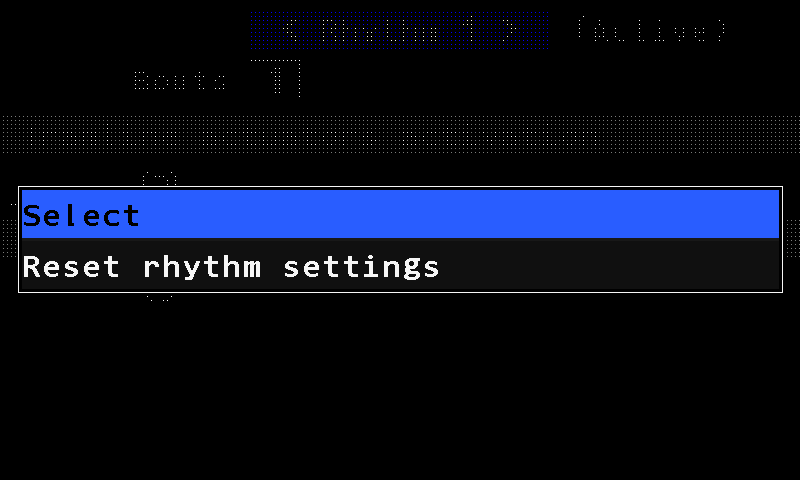
Le menu du rythme : Select, Reset rhythm settings. Descendez jusqu'à « Bouts » (passages) et réglez le nombre de passages du rythme.
Allez à la cellule encadrée sous le titre d'activation et appuyez sur « MENU ». Choisissez le numéro de l'actionneur, puis le passage sur lequel il doit couper ses sections.
Si le motif l'exige, ajoutez d'autres passages au même actionneur — jusqu'à quatre — avec la cellule encadrée au bout de sa ligne, ou un autre actionneur avec la cellule de la ligne vide en dessous.
Appuyez sur « BACK » jusqu'au retour de l'écran d'accueil. Le rythme est enregistré ; l'indicateur de jalonnage montre le passage en cours au-dessus et le nombre de passages en dessous.

L'écran d'accueil avec l'indicateur de jalonnage, passage 1 sur 1.
Revenez au niveau Operator (opérateur) avant de travailler — au-dessus, aucune alarme n'est affichée.
Le formulaire du rythme

- Rhythm. Le numéro du rythme ; « PLUS » et « MINUS » parcourent les trois.
- « Active ». Ce rythme est celui qui est utilisé.
- « Bouts ». Le nombre de passages du rythme.
- Titre d'activation. « Tramline actuators activation » (activation des actionneurs de jalonnage) sur une machine qui fait le jalonnage avec des actionneurs ; « Tramline motors activation » (activation des moteurs de jalonnage) sur une machine qui arrête des moteurs de doseur.
- Cellule encadrée. Ajoute un actionneur (ou un moteur) et son passage de coupure.
Dans le formulaire, « UP » et « DOWN » passent d'une ligne à l'autre, « MINUS » et « PLUS » le long d'une ligne, « MENU » ouvre la cellule sélectionnée. Passer au passage suivant pendant le travail : Passer au passage de jalonnage suivant.
Passer au passage de jalonnage suivant
Comment le passage change tout seul en fourrière, ce qu'il lui faut pour cela, et comment le changer ou le corriger à la main.
L'indicateur de jalonnage de l'écran d'accueil montre le passage en cours au-dessus et le nombre de passages du rythme en dessous. Le passage peut changer tout seul à chaque demi-tour, ou vous le changez à la main — dans les deux cas depuis le menu du passage, ouvert par un appui court sur « BACK » sur l'écran d'accueil.
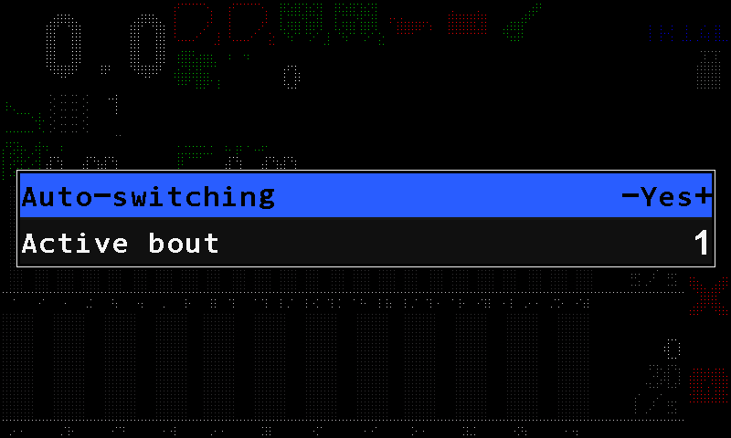
Changement automatique
Le panneau ne peut changer le passage tout seul que si quelque chose lui indique qu'un passage est terminé :
| Sur la machine | Ce qui termine un passage |
|---|---|
| Capteurs de traceurs dans le profil | Au moins un capteur de traceur sous surveillance et qui répond. Le changement de position du traceur termine le passage. |
| Pas de traceurs | Le capteur de position de travail, sous surveillance et qui répond. Relever la machine hors du travail termine le passage. |
| Ni l'un ni l'autre | Le changement automatique est impossible. Changez le passage à la main. |
De plus, « Auto-switching » (changement automatique) doit être sur « Yes » (oui), et la machine doit avoir réellement appliqué puis s'être arrêtée. Le tout ensemble — sinon le passage reste où il est. Quand le passage ne peut pas changer tout seul, l'icône de jalonnage de l'écran d'accueil est jaune (Passage de jalonnage).
Sur l'écran d'accueil, appuyez sur « BACK ». Le menu du passage s'ouvre.
Sur « Auto-switching », choisissez « Yes » avec « PLUS ».
Appuyez sur « BACK » pour fermer le menu.
À la main
Ce que propose le menu du passage dépend de la machine :
- Sans capteur capable de terminer un passage, il propose « Next bout » (passage suivant). Sélectionnez-le et appuyez sur « MENU » : le passage avance d'un cran et le menu se ferme. Faites-le à chaque demi-tour.
- Avec un tel capteur, il propose « Auto-switching » à la place. Pour corriger le compte — après un demi-tour manqué, par exemple — réglez « Active bout » (passage actif) avec « PLUS » / « MINUS » ; le nouveau passage prend effet à la fermeture du menu.
« Active bout » figure dans le menu sur toutes les machines. Vérifiez l'indicateur de l'écran d'accueil avant de commencer un passage.
Le rythme lui-même se règle dans Régler le rythme de jalonnage.
Régler la luminosité de l'écran
Rendre l'écran plus lumineux, plus sombre ou automatique — un élément du menu Settings.
Sur l'écran d'accueil, appuyez sur « MENU », sélectionnez « Settings » (réglages) et appuyez sur « MENU ».
« Brightness,% » (luminosité) est le premier élément. Modifiez-la avec « PLUS » et « MINUS », de 0 à 100 par pas de 10.
Le menu Settings avec Brightness,% sélectionné et réglé sur AUTO. Appuyez sur « BACK » pour quitter le menu. La nouvelle luminosité reste en vigueur.
0 signifie automatique — le menu affiche « AUTO ». Le panneau mesure la lumière dans la cabine et règle l'écran lui-même : lumineux au soleil, sombre la nuit. Toute autre valeur fixe l'écran à ce pourcentage.
Le rétroéclairage des boutons suit toujours l'écran : quand l'écran s'assombrit, les boutons s'assombrissent avec lui.
Tout le reste du menu Settings : Le menu Settings.
Travailler sans capteur de vitesse
Quand le capteur de vitesse tombe en panne au champ — terminer le travail sur une vitesse simulée et commander l'application à la main.
Symptôme. Le champ de vitesse affiche XX.X en rouge, ou la vitesse reste à zéro alors que la machine avance. Sans vitesse, le panneau ne peut calculer ni la surface, ni les doses, ni les écarts, et les moteurs de doseur ne savent pas à quelle vitesse tourner.
Cause. Le capteur de vitesse ou son module d'entrée ne répond pas, ou la roue ne fournit plus d'impulsions. Voir Alarmes du capteur de vitesse.
Que faire. Terminer le champ sur une vitesse simulée et activer et désactiver l'application à la main.
Sur l'écran d'accueil, touchez et maintenez le champ de vitesse. Son menu contextuel s'ouvre.
Réglez « Imitation, km/h » (simulation, km/h) à la vitesse à laquelle vous allez rouler. Cet élément exige le niveau Agronomist : Activer le niveau Agronomist.
Revenez au niveau Operator (opérateur), pour que les alarmes soient de nouveau affichées.
Le champ de vitesse affiche maintenant un chiffre jaune alternant avec « IMITATION » (Vitesse).
Commandez l'application avec le verrouillage manuel : maintenez « HOME » pour cesser d'appliquer en fourrière, maintenez-le de nouveau pour reprendre au passage suivant. Tant que le verrouillage est actif, la main jaune s'affiche au bord droit et la vitesse indique zéro. Voir Verrouiller l'application à la main.
Roulez à la vitesse que vous avez réglée. Les doses ne sont justes que tant que la vitesse réelle y correspond.
Quand le capteur est réparé, remettez « Imitation, km/h » à 0.
Détails des réglages du capteur de vitesse : Capteur de vitesse.
Niveaux d'accès
Les trois niveaux d'accès du Hectare One, ce que chacun permet et comment passer de l'un à l'autre.
Tous les réglages ne sont pas ouverts à tout le monde. Le boîtier dispose de trois niveaux d'accès de travail. À chaque mise sous tension, il démarre au niveau le plus bas, « Operator » (opérateur).
| Niveau | Ce qu'il permet |
|---|---|
| « Operator » | Le travail de tous les jours. Certains paramètres ne peuvent pas être modifiés et les statistiques ne peuvent pas être remises à zéro. |
| « Agronomist » (agronome) | La remise à zéro des statistiques, les paramètres du semoir, l'écart de dose du produit et les autres réglages de mise en service. Un code PIN est exigé. |
| « Service » (service après-vente) | Le profil et les rubriques de retour aux valeurs d'usine. Réservé au service après-vente. Un code PIN est exigé. |
Un quatrième niveau, « Debug », existe au-dessus de « Service ». Il n'est utilisé qu'en fabrication ; voir Le menu Service.
Chaque tableau de réglages de ce manuel indique le niveau exigé par la rubrique. Une rubrique située au-dessus de votre niveau n'apparaît pas du tout dans le menu.
Changer de niveau
Le niveau se change dans le menu « Settings » (réglages), rubrique « User » (utilisateur), et nulle part ailleurs : aucune combinaison de touches n'existe pour cela. Monter d'un niveau demande le code PIN ; en descendre n'en demande pas. Pas à pas, avec les écrans : Activer le niveau Agronomist.
Le code PIN est différent pour chaque boîtier. Reportez-vous au passeport de l'appareil ou adressez-vous au support technique.
Ce qui arrive aux alarmes tant que le niveau est élevé
Les alarmes ne sont pas perdues tant qu'elles sont masquées : elles attendent. Quand vous abaissez le niveau, le boîtier écarte celles qui ont disparu entre-temps et affiche celles qui sont toujours vraies, une fenêtre après l'autre. Après une heure de mise en service au niveau « Agronomist », attendez-vous à une courte série de fenêtres d'alarme lors du retour. C'est l'arriéré, et non un nouveau défaut. Fonctionnement des fenêtres : Fonctionnement des alarmes.
Activer le niveau Agronomist
Les étapes, avec l'écran de chacune, pour passer au niveau d'accès Agronomist ou Service avant de modifier des réglages, puis revenir au niveau Operator.
La plupart des travaux de réglage — paramètres des capteurs, étalonnages, configuration des appareils — exigent le niveau « Agronomist » (agronome). Le niveau « Service » (service après-vente) s'active de la même manière. Ce que permet chaque niveau : Niveaux d'accès.
Il vous faut le code PIN de ce boîtier. Il est différent pour chaque boîtier ; reportez-vous au passeport de l'appareil ou adressez-vous au support technique.
Sur l'écran d'accueil, appuyez sur « MENU ». Le menu principal s'ouvre.
Le menu principal. Sélectionnez « Settings » (réglages) avec « UP » / « DOWN » et appuyez sur « MENU ». Le menu « Settings » s'ouvre.
Le menu Settings au niveau Operator. Appuyez sur « DOWN » jusqu'à sélectionner « User » (utilisateur) — la rubrique se trouve vers la fin du menu. Appuyez sur « PLUS » jusqu'à lire « Agronomist » (ou « Service »).

« User » réglé sur Agronomist. Appuyez sur « MENU ». Le clavier de code PIN s'ouvre. Son titre indique le niveau choisi — « Agronomist » (agronome) — suivi du code de ce boîtier ; gardez ce code sous la main lorsque vous demandez le code PIN au support technique. Tapez le code PIN et touchez « OK ».

Le clavier de code PIN. Le code affiché à côté de l'invite est masqué dans ce manuel. Le menu « Settings » réapparaît, avec désormais les rubriques du nouveau niveau — par exemple « Seeding machine parameters » (paramètres du semoir). Appuyez sur « BACK » pour quitter.
Quand vous redescendez, les alarmes encore vraies s'affichent l'une après l'autre. Voir Niveaux d'accès.
Le profil
Ce que le profil indique au boîtier, comment le vérifier, ce que permet chaque rubrique du profil et dans quels cas le boîtier refuse un profil.
Le profil indique au boîtier quels appareils, et combien de chaque, équipent la machine. Un boîtier est généralement livré avec le profil déjà réglé. Vérifiez-le avant tout autre réglage : un appareil absent du profil n'est jamais surveillé, et un appareil déclaré dans le profil mais non monté déclenche « Connection lost » (liaison perdue).
Vérifier le profil sur l'écran d'accueil
Allumez le boîtier et attendez quelques secondes. Regardez ensuite l'écran d'accueil :
- Pas d'alarme « Connection lost » : le boîtier a trouvé tous les appareils déclarés par le profil.
- Pas d'indicateur blanc avec point d'exclamation : aucun appareil n'est hors surveillance.
- Pas d'indicateur rouge barré d'une croix : tous les appareils répondent.
Signification des indicateurs : Indicateurs. Comment mettre un appareil sous surveillance ou hors surveillance : Mettre un capteur sous ou hors surveillance.
Ouvrir le profil
Le profil se trouve au niveau « Service » : montez de niveau (Activer le niveau Agronomist — choisissez « Service »), puis « MENU » → « Service » → « Profile ».

- « Seed sensors » (capteurs de graines) — le nombre de capteurs de graines. La rubrique sélectionnée affiche sa valeur entre – et + : modifiez-la avec « MINUS » / « PLUS ».
- « Fertilizer sensors » (capteurs d'engrais) — capteurs d'engrais solide.
- « Liquid fertilizer flow sensors » (capteurs de débit d'engrais liquide) — capteurs des tronçons d'engrais liquide.
- « Hoppers » (trémies) — capteurs de niveau des trémies.
- « Dispensers » (doseurs) — capteurs d'arbre de doseur.
- « Speed » (vitesse) — l'origine de la vitesse d'avancement.
- « Fans » (turbines) — capteurs de vitesse de turbine.
- « Pressure sensors » (capteurs de pression) — capteurs de pression d'air.
- Barre de défilement. D'autres rubriques suivent plus bas — voir le tableau.
Les rubriques du profil
| Rubrique | Plage |
|---|---|
| « Seed sensors » | 2 … 120. Le menu permet de saisir 1, mais un tel profil est refusé à l'enregistrement. |
| « Fertilizer sensors » | 0 … 60 ; capteurs de graines et d'engrais ensemble 120 au plus. |
| « Liquid fertilizer flow sensors » | 0 … 60 |
| « Hoppers » | 0 … 9 |
| « Dispensers » | 0 … 9 |
| « Speed » | « No » (non) / « Control panel » (boîtier de commande : capteur câblé au boîtier) / « Input device » (dispositif d'entrée : un capteur de roue sur le dispositif d'entrée) / « Input device (2) » (deux capteurs de roue sur le dispositif d'entrée). |
| « Fans » | 0 … 2 |
| « Pressure sensors » | 0 … 3 |
| « Work position sensor » (capteur de position de travail) | « No » / « Yes » (oui) |
| « Markers » (traceurs) | « No » / « One » (un) / « Both » (les deux) |
| « No battery charge », « Emergency oil pressure », « Ignition », « Low fuel », « Air filter » | Les capteurs du moteur — « No » / « Yes » pour chacun. |
| « Seed dispenser motors » (moteurs de doseur de semences) | 0 … 60 |
| « Fertilizer dispenser motors » (moteurs de doseur d'engrais) | 0 … 30 ; les deux groupes de moteurs ensemble 60 au plus. |
| « Tramline actuators » (actionneurs de jalonnage) | 0 … 4 |
| « Liquid fertilizer pump controller » (contrôleur de pompe d'engrais liquide) | 0 … 1 |
Sur un boîtier prévu pour un système sans moteurs électriques, les deux rubriques de moteurs ne figurent pas dans le menu.
Quand le boîtier refuse un profil
Le boîtier vérifie le profil entier, et pas seulement la rubrique que vous avez modifiée. Il refuse un profil dans les cas suivants :
- les capteurs de trémie, de doseur et de moteur thermique totalisent plus de 12 ;
- ils totalisent plus de 10 alors que les capteurs de pression et de turbine totalisent plus de quatre ;
- les capteurs de pression et de turbine totalisent plus de cinq ;
- il y a des moteurs d'engrais mais pas de moteurs de semences, ou des moteurs d'engrais mais pas de capteurs d'engrais ;
- il y a des moteurs électriques ou une pompe d'engrais liquide mais pas de capteur de vitesse ;
- des électrovannes et un contrôleur de pompe d'engrais liquide sont déclarés en même temps.
Enregistrer le profil
Après avoir modifié le profil, sélectionnez « Save profile » (enregistrer le profil) à la fin du menu « Profile » et appuyez sur « MENU ». Le boîtier demande « Are you sure? » (êtes-vous sûr ?).
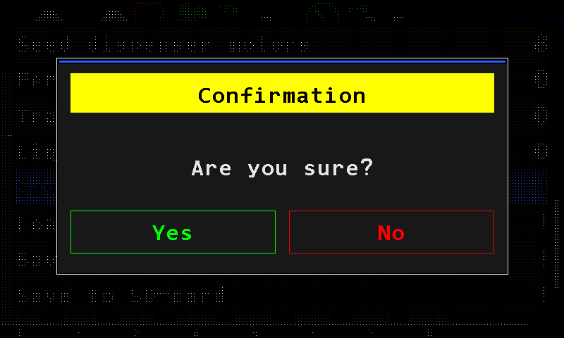
La fenêtre de confirmation. Touchez « Yes ». Le boîtier affiche « Wait... » (patientez), puis « Saved » (enregistré) et « Restart system » (redémarrage du système), et redémarre de lui-même.
Si rien n'a été modifié, le boîtier affiche seulement « No changes » (aucune modification). Si le profil enfreint l'une des règles ci-dessus, il affiche « Invalid profile! » (profil non valide) en rouge et n'enregistre rien.
Enregistrer tous les réglages d'un profil et les transporter sur une carte mémoire : Enregistrer et charger les réglages.
Enregistrer et charger les réglages
Conserver une copie de tous les réglages du profil en cours dans le boîtier ou sur une carte mémoire, puis la restaurer — par exemple pour utiliser un même boîtier sur plusieurs outils.
Pour le profil en cours, le boîtier peut enregistrer tous les réglages et les restaurer plus tard — utile avant un essai. Avec une carte mémoire dans le lecteur, un profil peut aussi être enregistré sur la carte avec ses réglages : un seul boîtier peut ainsi servir plusieurs outils.
| Rubrique du menu « Profile » | Ce qu'elle fait |
|---|---|
| « Save settings » (enregistrer les réglages) / « Load settings » (charger les réglages) | Conservent une copie des réglages dans le boîtier et la restaurent. |
| « Save to SD-card » (enregistrer sur la carte SD) / « Load from SD-card » (charger depuis la carte SD) | Même chose avec la carte mémoire ; le profil voyage avec ses réglages. Sans carte, l'enregistrement se termine par « Insert SD-card » (insérez la carte SD). |
Au niveau « Service », le menu contient aussi « Save factory defaults » (enregistrer les réglages d'usine) : après « Are you sure? » (êtes-vous sûr ?), il enregistre les réglages comme « Save settings » et les conserve en plus, avec le profil, comme copie d'usine du boîtier, qu'aucune rubrique de menu de ce micrologiciel ne recharge.
Montez de niveau (Activer le niveau Agronomist — choisissez « Service ») et ouvrez « MENU » → « Service » → « Profile » (Le profil).
Faites défiler jusqu'à la rubrique voulue et appuyez sur « MENU ». « Save settings » et « Load settings » demandent « Are you sure? » (êtes-vous sûr ?).
La fenêtre de confirmation. Touchez « Yes ». Le boîtier répond « Saved » (enregistré) ou « Loaded » (chargé).
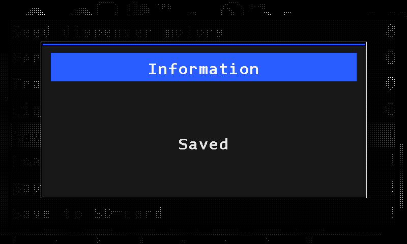
Le boîtier confirme par « Saved ».
Fichiers de profil sur la carte mémoire
- Les fichiers sont nommés automatiquement P0001.pfl et rangés dans le dossier PROFILES de la carte. Vous pouvez renommer un fichier — limitez le nom à huit caractères, lettres latines et chiffres.
- « Load from SD-card » ouvre la liste des profils présents sur la carte. Un fichier de profil écrit par une version de micrologiciel risque fort de ne pas être lisible par une autre : un profil incompatible apparaît en rouge dans cette liste.
Le menu Settings
Toutes les rubriques du menu de réglages du boîtier lui-même — luminosité, volume, langue, temporisation des alarmes, diagrammes, date et heure — avec leur plage et leur niveau d'accès.
Le menu « Settings » (réglages) contient les réglages du boîtier lui-même. Ouvrez-le depuis l'écran d'accueil : « MENU » → « Settings ». Les réglages des différents capteurs se trouvent ailleurs — voir Réglages des capteurs.
- « Brightness,% » (luminosité) — le rétroéclairage. « AUTO » laisse le boîtier le régler d'après son capteur de lumière.
- « Volume » — le volume des sons du boîtier.
- « Language » (langue) — la langue des écrans.
- « Buttons sound » (son des touches) — un son à chaque pression sur une touche.
- « Seeding diagram settings » (réglages du diagramme de semis) — la manière dont le diagramme de semis est tracé. Plus bas.
- « Change Date&Time » (modifier la date et l'heure) — l'horloge. Plus bas.
- « Alarm delay » (temporisation des alarmes) — la durée pendant laquelle un défaut doit persister avant que la fenêtre d'alarme s'ouvre.
- « Seeding machine parameters » (paramètres du semoir) — largeur, modes, jalonnage, étalonnages. Paramètres du semoir.
- Barre de défilement. D'autres rubriques suivent plus bas.
Les rubriques
| Rubrique | Plage | Niveau |
|---|---|---|
| « Brightness,% » | 0 … 100, par pas de 10. À 0, la rubrique affiche « AUTO » et le boîtier règle le rétroéclairage d'après son capteur de lumière — il éclaircit vite et assombrit lentement. Toute autre valeur fixe le rétroéclairage. | Operator |
| « Volume » | 0 … 100, par pas de 10 | Operator |
| « Language » | les langues installées | Operator |
| « Buttons sound » | « No » (non) / « Yes » (oui) | Operator |
| « Seeding diagram settings », « Fertilizer diagram settings » (réglages du diagramme d'engrais), « Liquid fertilizer diagram settings » (réglages du diagramme d'engrais liquide) | Sous-menus. Chacun n'est affiché que si la machine a un capteur de vitesse, si ses propres capteurs figurent dans le profil et si son diagramme n'est pas en mode « Flow » (débit). | Operator |
| « Change Date&Time » | sous-menu | Operator |
| « Alarm delay » | 2 … 20 s, 3 s par défaut. Voir Fonctionnement des alarmes. | Operator |
| « Product rate error,% » (écart de dose du produit) | 3 … 20 %. Affiché seulement quand un produit est dosé au poids ou qu'un contrôleur de pompe d'engrais liquide figure dans le profil. | Agronomist |
| « Seeding machine parameters » | Sous-menu. Masqué quand la machine n'a ni capteur de vitesse ni actionneur de jalonnage. | Agronomist |
| « User » (utilisateur) | Le niveau d'accès — voir Niveaux d'accès. | Operator |
| « Reset settings » (réinitialiser les réglages) | Remet ce menu aux valeurs d'usine. | Service |
Sur une machine à deux groupes de capteurs de graines, les deux rubriques de diagramme s'affichent « Seeding gr.A diagram » et « Seeding gr.B diagram ».
Les réglages sont enregistrés d'eux-mêmes quelques secondes après la dernière pression. Patientez un instant avant d'éteindre le boîtier.
Réglages des diagrammes

Il existe trois menus de ce type — semences, engrais solide, engrais liquide — avec les mêmes rubriques :
| Rubrique | Ce qu'elle fait |
|---|---|
| « Skips & Doubles » (manques et doubles) | Affiche les barres de manques et de doubles sur le dernier tronçon du parcours. Mode « Precise » (précis) uniquement. |
| « Grid » (grille) | « No » — la ligne de dose seule ; « Partial » (partielle) — les limites de tolérance seules ; « Full » (complète) — les deux. |
| « Scale S&D,% » (échelle des manques et doubles) | La hauteur des barres de manques et de doubles, 5 … 50 % par pas de 5. Mode « Precise » uniquement. |
| « Reset to defaults » (valeurs par défaut) | Remet ce menu aux valeurs d'usine. Niveau Service uniquement. |
Modifier la date et l'heure
Sélectionnez « Change Date&Time » et appuyez sur « MENU ». Les champs de date et d'heure s'ouvrent.
Les champs de date et d'heure. Sélectionnez chaque champ avec « UP » / « DOWN » et réglez-le avec « PLUS » / « MINUS ».
Sélectionnez « Set » (valider) et appuyez sur « MENU ». L'horloge prend les nouvelles valeurs. « BACK » à la place laisse l'horloge inchangée.
Paramètres du semoir
La largeur de travail, les modes de semis et de fertilisation, le jalonnage, l'affectation des tronçons aux actionneurs et les deux étalonnages qui exigent que la machine roule.
« Settings » (réglages) → « Seeding machine parameters » (paramètres du semoir). La rubrique exige le niveau « Agronomist » (agronome) (Activer le niveau Agronomist) et reste masquée sur une machine qui n'a ni capteur de vitesse ni actionneur de jalonnage. Son contenu dépend du profil.
- « Width, cm » (largeur) — la largeur de travail. La valeur sélectionnée se tient entre –[** et **]+.
- « Mode of seeding » (mode de semis) — « Flow » (débit), « Hybrid » (hybride) ou « Precise » (précis).
- « Tramline » (jalonnage) — le sous-menu de jalonnage.
- « Speed calibration » (étalonnage de la vitesse) — lance l'étalonnage de la vitesse.
- « Reset to defaults » (valeurs par défaut) — valeurs d'usine de ce menu. Niveau Service uniquement.
« Width, cm »
La largeur de travail de l'outil. La surface travaillée en est déduite : elle doit donc être saisie. Appuyez sur « MENU » sur la rubrique : le pavé numérique s'ouvre. Tapez les chiffres — la touche en haut à droite efface le dernier — et touchez « OK » pour valider, ou appuyez sur « BACK » pour conserver l'ancienne valeur.
« Mode of seeding », « Mode of fertilizers »
Trois modes dans chaque cas (« Mode of fertilizers » : mode d'engrais) :
| Mode | Unité | Pour |
|---|---|---|
| « Flow » | graines par seconde | semoirs en ligne |
| « Hybrid » | graines par mètre | semoirs en ligne — recommandé |
| « Precise » | graines par mètre, manques et doubles comptés | semoirs monograine de précision |
« Mode of liquid fertilizer »
« Flow » (litres par minute) ou « By area » (à la surface : litres par hectare). Affiché seulement quand aucun contrôleur de pompe d'engrais liquide ne figure dans le profil — avec un contrôleur, le boîtier choisit lui-même le mode.
« Actuators to sensors mapping »
Cette rubrique (affectation des capteurs aux actionneurs) indique quels capteurs de tronçon appartiennent à quel actionneur de jalonnage ou à quel moteur électrique. Quand cet actionneur ferme ses tronçons, leurs capteurs passent à la surveillance du jalonnage.

Une affectation est une plage : « Range start » (début de plage) et « Range end » (fin de plage) — des nombres égaux désignent un seul tronçon. Jusqu'à quatre plages peuvent être rattachées à un actionneur. Sur une machine à moteurs de dosage, l'écran propose aussi « Motors to sensors mapping » (affectation des capteurs aux moteurs).
« Tramline »
Les rythmes de jalonnage, dans un sous-menu à part de deux rubriques : « Tramline » (« No » (non) / « Yes » (oui)) et « Tramline rhythm settings » (réglages du rythme de jalonnage).
Réglage d'un rythme : Rythme de jalonnage.
« Speed calibration » et « Dispenser calibration »
Les deux étalonnages qui exigent que la machine roule. « Dispenser calibration » (étalonnage du doseur) porte un nombre à côté : le doseur à étalonner, ou 0 pour les étalonner tous à la fois.
Réglages des capteurs
Comment accéder aux réglages d'un capteur, ce que contient son menu contextuel et quels étalonnages existent.
Chaque capteur, actionneur et moteur de la machine a ses propres réglages et son propre écran d'état. Les deux s'ouvrent depuis l'écran d'accueil. Les paramètres de chaque type de capteur sont décrits dans les rubriques qui suivent celle-ci.
Accéder à un capteur
Sur l'écran d'accueil, maintenez « MENU » enfoncé quelques secondes. Le boîtier passe en mode de réglage des capteurs ; le capteur sélectionné est entouré d'un rectangle blanc.
Passez d'un capteur à l'autre avec « UP » / « DOWN ». « PLUS » place le capteur sélectionné sous surveillance, « MINUS » le met hors surveillance — voir Mettre un capteur sous ou hors surveillance.
Appuyez sur « MENU ». Le menu contextuel du capteur sélectionné s'ouvre.

Le menu contextuel du capteur de vitesse. Appuyez sur « BACK » pour quitter le mode.
Un appui prolongé sur la vignette d'un capteur à l'écran ouvre directement le même menu contextuel.
Le menu contextuel

- « Information » — ouvre l'écran d'état de ce capteur. L'écran d'état du capteur.
- « Disable control » (désactiver la surveillance) / « Enable control » (activer la surveillance) — met le capteur hors surveillance, ou le remet sous surveillance. La première fois dans une session, le boîtier demande une confirmation.
- Les paramètres de ce capteur — ici les trois d'un capteur de turbine. Ceux que vous voyez dépendent du niveau d'accès.
- La valeur actuelle. Sélectionnez la ligne ; la valeur se tient entre – et + et se modifie avec « MINUS » / « PLUS ».
- « Reset to defaults » (valeurs par défaut) — remet les paramètres de ce capteur aux valeurs d'usine. Niveau Service uniquement.
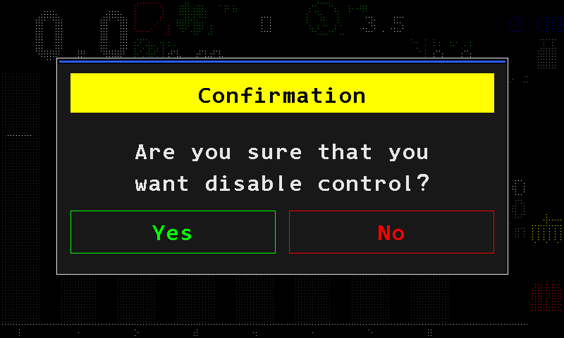
L'écran d'état
« Information » ouvre l'écran d'état du capteur : son identité, sa liaison, ses valeurs en direct et ses alarmes actives. Comment le lire : L'écran d'état du capteur.
Étalonnages
Il existe quatre étalonnages. Ce ne sont pas les variantes d'une même procédure : chacun écrit des paramètres différents et s'atteint par un chemin différent.
| Ce qu'il corrige | Où | Niveau | Machine |
|---|---|---|---|
| La vitesse d'avancement — les impulsions du capteur de vitesse sur une distance connue. Étalonner le capteur de vitesse | « Settings » (réglages) → « Seeding machine parameters » (paramètres du semoir) → « Speed calibration » (étalonnage de la vitesse) | Agronomist | parcourt 100 m |
| La rotation du doseur — « Wheel, pulses » (impulsions de la roue) par rapport à « Dispenser pulses » (impulsions du doseur). Étalonner la rotation du doseur | « Settings » → « Seeding machine parameters » → « Dispenser calibration » (étalonnage du doseur) | Agronomist | roue et arbre du doseur tournés ensemble |
| La masse du doseur — « Weight, gr » (poids, g) et « Weight, pulses » (poids, impulsions). Étalonner le doseur au poids | menu contextuel du capteur de doseur | Operator | à l'arrêt |
| La masse du cylindre de dosage — « Weight, gr » et « Rotations » (rotations) d'un moteur. Étalonner un moteur de dosage au poids | menu contextuel du moteur électrique du doseur | Operator | à l'arrêt |
Les deux étalonnages de menu exigent le niveau « Agronomist », comme le menu qui y conduit. Les deux étalonnages de masse sont au niveau « Operator » (opérateur), parce qu'il faut les refaire chaque fois que le produit change.
L'écran d'état du capteur
Comment lire l'écran d'état d'un capteur — canal, adresse, type, état de la liaison, valeurs en direct et alarmes actives — et ce que chaque type de capteur y affiche.
On l'ouvre par « Information » dans le menu contextuel d'un capteur (Réglages des capteurs). Il montre ce que le boîtier sait d'un capteur.
L'écran
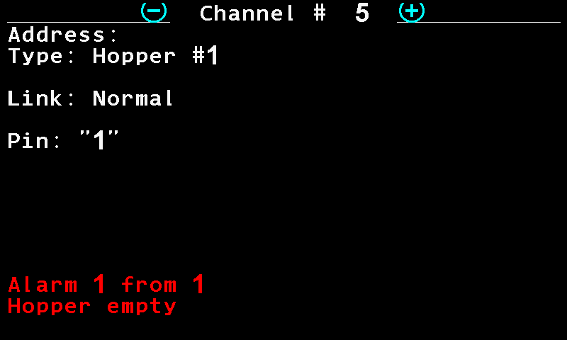
- « Channel # » (canal) — quel capteur de la liste complète c'est.
- Capteur précédent — ou appuyez sur « MINUS ». L'écran reste ouvert.
- Capteur suivant — ou appuyez sur « PLUS ».
- « Address: » (adresse) — l'adresse à laquelle le capteur répond. Non indiquée dans ce manuel.
- « Type: » — le genre de capteur et son numéro, ici le capteur de trémie 1. Certains capteurs affichent à la place de l'adresse une ligne « Unit: » (unité) — l'endroit où ils sont raccordés, par exemple « Control panel » (boîtier de commande).
- « Link: » (liaison) — l'état de la communication. Tableau ci-dessous.
- Les valeurs de ce type de capteur — ici le niveau à l'entrée d'un capteur de trémie. Tableau ci-dessous.
- « Alarm 1 from 1 » (alarme 1 sur 1) — les alarmes actives, une à la fois. « UP » / « DOWN » les font défiler.
- Le nom de l'alarme affichée.
| Touche | Action |
|---|---|
| « PLUS » / « MINUS » | Capteur suivant / précédent — l'écran reste ouvert. |
| « UP » / « DOWN » | Fait défiler les alarmes actives de ce capteur. |
| « MENU » | Le menu contextuel de ce capteur. |
| « BACK » | Retour à la sélection du capteur. |
États de la liaison
| État | Signification |
|---|---|
| « Normal » | Le capteur répond. |
| « Not controlled » (non surveillé) | Le capteur est hors surveillance : ni la communication ni rien d'autre n'est contrôlé. |
| « No connection » (pas de liaison) | Le capteur ne répond pas. En rouge. |
| « Wrong device type! » (type d'appareil incorrect) | Quelque chose répond, mais pas le type d'appareil attendu par le profil. En rouge. |
| « IMITATION » (simulation) | Capteur de vitesse uniquement : la vitesse est simulée, et non mesurée. En jaune. |
Les valeurs ne sont affichées que si le capteur est sous surveillance, répond et est du type attendu. Un capteur hors surveillance n'affiche que son identité.
Ce que chaque type de capteur ajoute

| Capteur | Ce que l'écran affiche |
|---|---|
| Capteur de vitesse | La fréquence d'impulsions F= en Hz ; avec deux capteurs de vitesse, F1= et F2=. En dessous, les deux limites « Min speed, km/h » (vitesse minimale) et « Max speed, km/h » (vitesse maximale). Sur une machine qui dose un produit au poids avec des moteurs électriques, les limites sont celles que les moteurs peuvent tenir, resserrées par les deux réglages ; une limite que les réglages ne peuvent pas respecter s'écrit en rouge sous forme d'inégalité. Sans de tels moteurs, une limite réglée sur zéro s'affiche ----, désactivée. |
| Capteur de trémie | Pin: et le niveau à l'entrée, "0" ou "1". |
| Capteur d'arbre de doseur | F= en Hz, avec trois décimales. |
| Capteur de turbine | F= en Hz. |
| Capteur de pression | P= en kPa. |
| Capteur de graines, capteur d'engrais solide | Status: et l'un des huit états — ci-dessous. |
| Capteur de débit d'engrais liquide | Status: Working, ou Working:Tramline en mode jalonnage ; en dessous Flow= en L/min. |
| Capteur de position de travail | Position: Working ou Position: Transporting, et Pin: avec le niveau à l'entrée. |
| Contact moteur, pression d'huile, charge de la batterie, niveau de carburant, filtre à air | Pin: et le niveau à l'entrée, "0" ou "1". |
| Capteur de traceur | Seulement les lignes communes. |
| Actionneur de jalonnage | Status: Pulled in (rentré), Pulled out (sorti), Working pendant que l'obturateur bouge, ou Unknown (inconnu). |
| Moteur électrique de doseur | Status: Working, ou Faulty tant qu'une alarme du moteur est active ; puis Last fault: avec le code du contrôleur, s'il y a eu un défaut (codes). Un contrôleur universel ajoute IN1[ ] IN2[ ] IN3[ ] avec les niveaux de ses trois entrées. |
| Contrôleur de pompe d'engrais liquide | Status: Working ou Faulty. En cas de défaut, Last fault: et le code. Sans défaut : Flow= en L/min, Load= en pour cent, et Pressure sensor: No s'il n'y en a pas, sinon Pressure sensor= en bar avec le signal brut en mA entre parenthèses. Des tirets remplacent une valeur que le contrôleur ne peut pas fournir. |
Les huit états d'un capteur de graines ou d'engrais
| Statut | Signification |
|---|---|
| Working | Normal. |
| Working:Tramline | Normal ; le capteur est en mode de contrôle du jalonnage pour le passage en cours. |
| Configuring | Le capteur a reçu de nouveaux réglages et les applique. |
| Calibration in progress | Le capteur effectue son étalonnage initial. Cela prend quelques secondes. |
| Clogged | L'émetteur infrarouge du canal optique est obstrué — le plus souvent un tuyau de descente bouché. En rouge. |
| Light struck | Trop de lumière du soleil pénètre dans le canal optique ; le capteur peut mal compter. En rouge. |
| Faulty | Le capteur est en panne et doit être remplacé. En rouge. |
| Unknown | Un autre défaut qui ne peut pas être identifié. En rouge. |
Capteur de vitesse d'avancement
Les paramètres du capteur de vitesse d'avancement — impulsions, diamètre de roue, limites de vitesse, simulation — et ce que le réglage de la simulation fait de lui-même.
Tout ce que compte le boîtier — surface, doses, écarts — est calculé d'après la distance parcourue. Un capteur de vitesse qui se trompe d'un dixième fausse d'un dixième toutes les autres valeurs du boîtier. Réglez d'abord ses paramètres, puis étalonnez-le (Étalonner le capteur de vitesse).
Ouvrez le menu contextuel du capteur de vitesse comme décrit dans Réglages des capteurs. Tous ses paramètres exigent le niveau « Agronomist » (agronome) (Activer le niveau Agronomist).
Le menu contextuel propose aussi « Speed calibration » (étalonnage de la vitesse) directement, sous « Information ».
| Paramètre | Ce qu'il fait | Plage |
|---|---|---|
| « Pulses » | Le nombre d'impulsions du capteur. Réglez-le avant l'étalonnage, qui le corrige. | 1 … 1000 |
| « Count period » (période de comptage) | Le nombre d'impulsions du capteur sur lequel le boîtier fait la moyenne de la vitesse d'avancement ; une valeur plus élevée donne un chiffre plus stable. N'agit que sur un capteur de vitesse raccordé directement au boîtier. | 1 … 1000 |
| « Diameter, cm » | Le diamètre de la roue. Réglez-le avant l'étalonnage. | 10 … 200 |
| « Factor, % » (facteur) | Le rapport de transmission vers la roue ; 100 correspond à un entraînement direct 1 : 1. | 1 … 10000 |
| « Seeding criteria » (critère de semis) | « Yes » (oui) : les alarmes des tronçons de graines, d'engrais solide et d'engrais liquide ne se déclenchent que pendant que la machine avance. « No » (non) : aussi à l'arrêt. Masqué, et toujours « Yes », en mode « Precise » (précis) et sur les machines à moteurs de dosage ou à contrôleur de pompe d'engrais liquide. | « No » (non) / « Yes » (oui) |
| « Min speed, km/h » (vitesse minimale) | En dessous de cette vitesse, l'écran d'accueil affiche « FASTER » (plus vite). 0 désactive le contrôle. | 0 … 99 |
| « Max speed, km/h » (vitesse maximale) | Au-dessus de cette vitesse, l'écran d'accueil affiche « SLOWER » (plus lentement). 0 désactive le contrôle. | 0 … 99 |
| « Imitation, km/h » (simulation) | Une vitesse simulée. 0 = le capteur réel est utilisé. | 0 … 20 |
| « Width, cm » (largeur) | La voie entre les deux roues d'une installation à deux capteurs. | 0 … 10000 |
| « GPS », « GPS internal » (GPS interne) | Prendre la vitesse d'un récepteur au lieu de la roue. | « No » (non) / « Yes » (oui) |
Le minimum doit être inférieur au maximum, sinon le boîtier déclenche « Error in settings of Min/Max » (erreur dans les réglages Min/Max) (Alarmes du capteur de vitesse).
La vitesse simulée est en outre maintenue dans la plage que le dosage permet : une valeur hors de cette plage est ramenée à la limite la plus proche au moment de la saisie. Tant que la vitesse est simulée, l'écran d'état du capteur affiche « IMITATION » en jaune. Travailler sans capteur de vitesse : Travailler sans capteur de vitesse.
L'écran d'état
L'écran d'état affiche la fréquence d'impulsions F= en Hz (avec deux capteurs, F1= et F2=) et les deux limites en vigueur. Voir L'écran d'état du capteur.
Étalonner le capteur de vitesse
Parcourez 100 m balisés pour que le boîtier corrige le nombre d'impulsions du capteur de vitesse d'avancement.
L'étalonnage corrige le nombre d'impulsions du capteur de vitesse d'après une distance connue. Avant de commencer, réglez « Pulses » (impulsions) et « Diameter, cm » (diamètre) du capteur (Capteur de vitesse d'avancement) : l'étalonnage corrige le nombre d'impulsions, il ne peut pas l'inventer. Il vous faut le niveau « Agronomist » (agronome) (Activer le niveau Agronomist).
Balisez 100 m sur un sol plat et placez la machine au départ.
Ouvrez « Settings » (réglages) → « Seeding machine parameters » (paramètres du semoir), sélectionnez « Speed calibration » (étalonnage de la vitesse) et appuyez sur « MENU ». Le boîtier affiche « Pass 100m and press STOP » (parcourez 100 m et appuyez sur STOP) avec un seul bouton « STOP ».

La fenêtre d'étalonnage de la vitesse. Parcourez la distance balisée et arrêtez-vous à l'arrivée.
Touchez « STOP ». Le boîtier affiche « Done » (terminé) et ferme la fenêtre de lui-même.
Le boîtier confirme par « Done ».
La distance est fixée à 100 m ; le boîtier ne la demande pas. Il attend une demi-seconde après « STOP » avant de lire le compteur et vérifie encore une fois la liaison à cet instant : un capteur qui décroche sur le dernier mètre est signalé comme une liaison perdue, et non comme un mauvais résultat.
En cas d'échec
| Le boîtier affiche | Signification |
|---|---|
| « No speed sensor » (pas de capteur de vitesse) | Le profil ne comporte aucun capteur de vitesse. L'étalonnage ne démarre pas. |
| « Connection lost with the sensor! Calibration canceled! » (liaison perdue avec le capteur ! étalonnage annulé !) | Le capteur ne répond pas. |
| « Sensor not controlled! Calibration canceled! » (capteur non surveillé ! étalonnage annulé !) | Le capteur est hors surveillance. Mettez-le sous surveillance (Mettre un capteur sous ou hors surveillance). |
| « FAILURE! The tractor did not move! » (échec ! le tracteur n'a pas bougé !) | Le compteur n'a pas bougé : le capteur n'a donné aucune impulsion — non pas une mesure imprécise, mais aucune. Vérifiez le capteur et son câble. |
| « Calibration canceled! » (étalonnage annulé !) | La fenêtre a été fermée autrement que par « STOP ». Rien n'a changé. |
Capteurs de graines et capteurs d'engrais solide
Les paramètres communs à un groupe de capteurs optiques de graines ou d'engrais solide — doses de consigne, fraction, sensibilité, écart de dose, manques et doubles, tolérance de jalonnage.
Les capteurs de graines et les capteurs d'engrais solide sont des appareils de même nature et partagent un seul jeu de paramètres. Presque tout est commun à l'ensemble du groupe : modifiez un paramètre sur un capteur, il change pour tous les capteurs du groupe. Seules deux choses se règlent capteur par capteur : s'il est sous surveillance (« Disable control » (désactiver la surveillance) / « Enable control » (activer la surveillance)) et « Product application » (application du produit). Ouvrez le menu contextuel d'un capteur quelconque du groupe comme dans Réglages des capteurs.

| Paramètre | Ce qu'il fait | Plage | Niveau |
|---|---|---|---|
| « Flow rate » (débit) | La dose du mode « Flow » (débit), en graines par seconde. En dessous, le tronçon déclenche l'alarme de dose trop faible. | 1 … 1500 | Operator |
| « Hybrid rate » (dose hybride) | La consigne du mode « Hybrid » (hybride). | 1 … 200 | Operator |
| « Precise rate,x10 » (dose précise) | La consigne du mode « Precise » (précis), en dixièmes. | 5 … 500 | Operator |
| « Sensitivity » (sensibilité) | La sensibilité des capteurs d'une génération plus ancienne ; le boîtier la leur envoie. Affiché seulement quand un tel capteur est raccordé. | 1 … 120 | Agronomist |
| « Fraction » | Le filtre de comptage des capteurs, réglé selon la taille de la graine ou du granulé ; le boîtier l'envoie à tous les capteurs du groupe. Les alarmes de dose, de manques et de doubles indiquent dans quel sens le modifier. | 1 … 100 | Operator |
| « Correction » | Un réglage fin de la détection des graines pour la génération de capteurs qui l'utilise ; le boîtier ne l'envoie qu'à ces capteurs, et la rubrique n'apparaît que si l'un d'eux est raccordé. Valeur par défaut : 300. | 100 … 3300, par pas de 10 | Operator |
| « Rate error,% » (écart de dose) | L'écart que la dose réelle peut avoir par rapport à la consigne avant une alarme. | 5 … 95, par pas de 5 | Agronomist |
| « Doubles error,% » (écart de doubles) | La part de doubles qui déclenche une alarme. Mode « Precise » uniquement. | 0 … 95 | Agronomist |
| « Skips error,% » (écart de manques) | La part de manques qui déclenche une alarme. Mode « Precise » uniquement. | 0 … 95 | Agronomist |
| « Recalculation,m » / « Recalculation,sec » (recalcul) | Le tronçon sur lequel les manques et les doubles sont comptés — en mètres ou en secondes, selon le mode. | 10 … 50 | Operator |
| « Percent of sowing,% » (pourcentage de semis) | La part des rangs de semis sous surveillance qui doivent semer avant que le boîtier considère que le semoir sème ; jusque-là, les capteurs de graines et d'engrais solide ne déclenchent aucune alarme de dose, de manques, de doubles ou de jalonnage. Capteurs de graines uniquement ; masqué sur les machines à moteurs de dosage ou à contrôleur de pompe d'engrais liquide. | 5 … 80, par pas de 5 | Agronomist |
| « Tolerable sowing to tramline,% » (semis toléré dans le jalonnage) | La quantité qu'un tronçon censé être fermé pour le jalonnage a le droit de distribuer encore. | 0 … 50 | Agronomist |
| « Group start address » (adresse de début de groupe) | Réglée à la mise en service — voir Configuration des appareils. | Service |
Les doses de consigne elles-mêmes se modifient en cours de travail, sur l'écran d'accueil — voir Modifier la dose de consigne. L'écran d'état de ces capteurs affiche l'un de huit états — voir L'écran d'état du capteur. Si un capteur signale « Clogged » (obstrué), « Light struck » (ébloui) ou « Broken » (défectueux) : Capteur obstrué ou défectueux.
Capteurs d'engrais liquide et contrôleur de pompe
Les paramètres des capteurs de tronçon d'engrais liquide et du contrôleur de pompe d'engrais liquide.
L'engrais liquide est surveillé par des capteurs de débit placés dans les tronçons ; sur certaines machines, un contrôleur de pompe commande aussi la pompe pour tenir la dose. Ouvrez le menu contextuel de l'un ou de l'autre comme dans Réglages des capteurs.
Capteurs de tronçon d'engrais liquide
| Paramètre | Ce qu'il fait | Plage | Niveau |
|---|---|---|---|
| « Pulses per liter » (impulsions par litre) | Le nombre d'impulsions que le capteur de débit donne par litre ; le boîtier en déduit les litres par minute, les litres par hectare et le volume appliqué. Masqué quand un contrôleur de pompe figure dans le profil — ce sont alors les valeurs du contrôleur qui servent. | 1 … 60000 | Agronomist |
| « Rate error,% » (écart de dose) | L'écart que la dose réelle peut avoir par rapport à la consigne avant une alarme. | 5 … 95, par pas de 5 | Agronomist |
| « Tolerable leak to tramline,% » (fuite tolérée dans le jalonnage) | La quantité qu'un tronçon fermé pour le jalonnage a le droit de distribuer encore. | 0 … 50 | Agronomist |
| « Group start address » (adresse de début de groupe) | Voir Configuration des appareils. | Service |
Les deux doses de consigne de ce capteur — une pour le mode « Flow » (débit), une pour le mode « By area » (à la surface) — n'ont aucune rubrique de menu. Elles se règlent sur l'écran d'accueil avec « PLUS » et « MINUS », comme toute autre dose de consigne (Modifier la dose de consigne). Le mode lui-même : Paramètres du semoir.
Contrôleur de pompe d'engrais liquide
| Paramètre | Ce qu'il fait | Plage | Niveau |
|---|---|---|---|
| « Pulses per liter » | Combien d'impulsions de l'entraînement de la pompe font un litre ; le boîtier en déduit le volume appliqué. La valeur est conservée dans le contrôleur de pompe : le boîtier la lit au démarrage et y réécrit toute modification. | 100 … 10000, par pas de 10 | Agronomist |
| « Pressure sensor » (capteur de pression) | Quel capteur de pression surveille la conduite d'alimentation. | 0 … 2 | Agronomist |
| « Pressure boundary, Bar » (seuil de pression) | La pression que le capteur de pression mesure au sommet de sa plage, d'après la fiche du capteur ; le boîtier s'en sert pour convertir la pression de la conduite. Valeur par défaut : 16,0 bar. | 0,0 … 50,0 | Agronomist |
| « Max pressure, Bar » (pression maximale) | Au-dessus, le contrôleur déclenche « High pressure » (pression trop élevée). | 0,0 … 50,0 | Operator |
| « Section control D.I. » (entrée de commande de tronçon) | N'a aucun effet dans ce micrologiciel : le boîtier ne lit pas cette entrée pour la pompe. | « No » / « Shut off(0) » / « Shut off(1) » | Agronomist |
| « Start delay,mS » (retard au démarrage) | Le temps minimal entre deux démarrages de la pompe : un démarrage qui viendrait plus tôt attend que ce temps soit écoulé. Valeur par défaut : 30 ms. | 0 … 500, par pas de 5 | Service |
| « Group start address » | Voir Configuration des appareils. | Agronomist |
L'écran d'état du contrôleur de pompe affiche le débit, la charge de la pompe et la pression de la conduite — voir L'écran d'état du capteur. Alarmes : Pompe d'engrais liquide, Alarmes de dose.
Capteur d'arbre de doseur
Les paramètres du capteur d'arbre de doseur — contrôle de la rotation par rapport à la roue, ou contrôle au poids d'après la masse appliquée.
Le capteur d'arbre de doseur compte les tours d'un doseur entraîné par la roue de terre. Le boîtier peut le surveiller de deux façons : par sa rotation par rapport au capteur de vitesse, ou par la masse de produit qu'il applique. Ouvrez son menu contextuel comme dans Réglages des capteurs.

| Paramètre | Ce qu'il fait | Plage | Niveau |
|---|---|---|---|
| « Period, s » (période) | Le temps maximal entre deux impulsions de l'arbre. Si l'arbre ne donne aucune impulsion pendant plus longtemps alors que la machine sème ou avance, le boîtier déclenche « No rotation » (pas de rotation). Valeur par défaut : 10 s. | 1 … 60 | Operator |
| « Rotation speed control » (contrôle de la vitesse de rotation) | Surveiller la rotation de l'arbre par rapport à la vitesse d'avancement. | « No » (non) / « Yes » (oui) | Agronomist |
| « Wheel, pulses » (roue, impulsions) | Réglé par l'étalonnage de la rotation. | 1 … 65535 | Agronomist |
| « Dispenser pulses » (impulsions du doseur) | Réglé par l'étalonnage de la rotation. | 1 … 65535 | Agronomist |
| « Maximum error, % » (écart maximal) | L'écart que la vitesse de l'arbre peut avoir par rapport à celle qu'exige la vitesse d'avancement ; au-delà, pendant que la machine avance, le boîtier déclenche « Low speed of rotation » (vitesse de rotation trop faible) ou « High speed of rotation » (vitesse de rotation trop élevée). Affiché seulement quand « Rotation speed control » est sur « Yes ». Valeur par défaut : 10 %. | 1 … 50 | Agronomist |
| « Weight control » (contrôle au poids) | Surveiller le doseur par la masse appliquée plutôt que par sa rotation. | « No » / « Yes » | Agronomist |
| « Type of product » (type de produit) | Le produit que ce doseur dose. | Agronomist | |
| « Weight, gr » / « Weight, pulses » (poids, g / poids, impulsions) | Tous deux réglés par l'étalonnage au poids. | 1 … 65535 chacun | Agronomist |
Avec « Weight control » activé, le menu contextuel contient aussi « Dispenser calibration(weight) » (étalonnage du doseur au poids).
Étalonnages
- Rotation — pour « Rotation speed control » : Étalonner la rotation du doseur.
- Masse — pour « Weight control » ; refaites-le chaque fois que le produit change : Étalonner le doseur au poids.
L'écran d'état affiche la fréquence d'impulsions de l'arbre F= en Hz, avec trois décimales. Ses alarmes : Turbine ou arbre de doseur : alarmes de vitesse, et avec le contrôle au poids Dosage au poids.
Étalonner la rotation du doseur
Faites tourner ensemble la roue d'entraînement et l'arbre du doseur pour que le boîtier apprenne combien d'impulsions d'arbre correspondent à une impulsion de roue.
Cet étalonnage apprend au boîtier combien d'impulsions de l'arbre du doseur correspondent à une impulsion de la roue, afin qu'il distingue un arbre arrêté d'une machine en mouvement. C'est la base de « Rotation speed control » (contrôle de la vitesse de rotation) du capteur de doseur (Capteur de doseur). Il écrit « Wheel, pulses » (roue, impulsions) et « Dispenser pulses » (impulsions du doseur).
Avant de commencer : le capteur de vitesse et chaque doseur concerné doivent être sous surveillance et répondre. Il vous faut le niveau « Agronomist » (agronome) (Activer le niveau Agronomist).
Ouvrez « Settings » (réglages) → « Seeding machine parameters » (paramètres du semoir) → « Dispenser calibration » (étalonnage du doseur). Réglez le numéro du doseur avec « PLUS » / « MINUS » — ou 0 pour les étalonner tous à la fois — et appuyez sur « MENU ». Le boîtier affiche « Calibration » (étalonnage) et une barre de progression.

La barre de progression de l'étalonnage du doseur. Faites tourner ensemble la roue d'entraînement et l'arbre du doseur — à la main, ou en déplaçant la machine. La barre se remplit à mesure que les compteurs montent.
Continuez à tourner jusqu'à ce que la barre atteigne 100 %. Cela se produit quand le capteur de vitesse et chaque doseur concerné ont donné au moins 100 impulsions chacun. La barre suit celui qui est le plus en retard — un doseur qui ne tourne pas la maintient à zéro.
À 100 %, le boîtier émet un bip et affiche « Stop rotation! » (arrêtez la rotation). Arrêtez tout.
Le boîtier attend qu'aucun compteur n'ait changé pendant deux secondes, puis écrit le résultat et affiche « Done » (terminé).
« To abort operation press BACK. » (pour interrompre, appuyez sur BACK) s'affiche en bas de l'écran ; « BACK » arrête l'étalonnage à tout moment.
Si un capteur concerné est hors surveillance ou ne répond pas, l'étalonnage se termine par « Sensor not controlled! Calibration canceled! » (capteur non surveillé ! étalonnage annulé !) ou « Connection lost with the sensor! Calibration canceled! » (liaison perdue avec le capteur ! étalonnage annulé !).
Étalonner le doseur au poids
Transformez un doseur entraîné par la roue en récipient de pesée et pesez le produit, pour que le boîtier puisse surveiller la dose en kilogrammes par hectare.
Cet étalonnage mémorise combien de grammes délivre une impulsion de l'arbre du doseur — « Weight, gr » (poids, g) et « Weight, pulses » (poids, impulsions) du capteur de doseur. Refaites-le chaque fois que le produit change. Il se fait à l'arrêt, au niveau « Operator » (opérateur) ; le boîtier passe de lui-même au niveau « Agronomist » (agronome) pour la durée de l'étalonnage et rétablit le niveau en sortant.
Il vous faut : un récipient pouvant contenir 2 à 60 kg de produit, et une balance.
La rubrique n'existe que si « Weight control » (contrôle au poids) est activé pour ce doseur (Capteur d'arbre de doseur).
Maintenez appuyée la vignette du capteur de doseur et choisissez « Dispenser calibration(weight) » (étalonnage du doseur au poids). Le premier écran liste les doses de consigne des produits utilisés, en kg/ha ; le produit de ce doseur est repéré par > et <.
Touchez « Calibrate dispenser N » (étalonner le doseur N) (ou appuyez sur « PLUS »). Si le doseur ne peut pas être étalonné, une ligne rouge s'affiche à la place avec la raison : « Not controlled » (non surveillé), « No connection » (pas de liaison) ou « FAILURE » (échec). « Exit » (quitter) (ou « BACK ») permet de sortir.
Le deuxième écran donne la préparation. Pesez le récipient vide et notez le poids.
Remplissez la trémie de produit et placez le récipient vide sous le doseur.
Tournez le rotor jusqu'à ce que ses alvéoles soient remplies. C'est plus important qu'il n'y paraît : un rotor aux alvéoles vides délivre moins que son compte pendant les premiers tours, et cette erreur se retrouve dans la valeur mémorisée.
Touchez « Go to calibration » (passer à l'étalonnage) (ou appuyez sur « UP »). « Cancel » (annuler) (ou « BACK ») revient en arrière. Le troisième écran compte les « Impulses » (impulsions) et fait tourner une icône de rotor à mesure qu'elles arrivent.
Videz le récipient et placez-le de nouveau sous le doseur.
Tournez le rotor du doseur et remplissez le récipient autant que possible — pas moins de 2 kg et pas plus de 60 kg.
Touchez « Complete » (terminer) (ou appuyez sur « MINUS »). Le bouton n'apparaît qu'après plus de dix impulsions. « Cancel » demande « Are you sure? » (êtes-vous sûr ?) avant d'abandonner la mesure.
Pesez le récipient rempli. Le pavé numérique demande « Enter the difference of the filled and empty container in grams » (saisissez la différence entre le récipient plein et le récipient vide, en grammes). Tapez le poids du produit seul — 2000 à 60000 g ; le pavé propose 10000 — et touchez « OK ». Le boîtier mémorise « Weight, gr » et « Weight, pulses ».
Moteur électrique de doseur
Les paramètres d'un moteur électrique de dosage — rapport de réduction, sens, plage de vitesse, produit, valeurs d'étalonnage et bouton d'étalonnage.
Un moteur électrique entraîne un doseur à la vitesse que le boîtier calcule d'après la dose de consigne et la vitesse d'avancement. Ouvrez son menu contextuel comme dans Réglages des capteurs.

| Paramètre | Ce qu'il fait | Plage | Niveau |
|---|---|---|---|
| « Holes in disk » (trous du disque) | Mode « Precise » (précis) uniquement. | 1 … 200 | Operator |
| « Numerator » (numérateur) / « Denominator » (dénominateur) | Ensemble : le rapport de réduction entre le moteur et l'arbre du doseur. | 1 … 500 chacun | Agronomist |
| « Rotation direction » (sens de rotation) | Le sens dans lequel tourne le moteur. Réglez-le pour que le doseur tourne dans le bon sens selon la façon dont le moteur est monté ; valeur par défaut : « Forward ». | « Forward » (avant) / « Backward » (arrière) | Agronomist |
| « Rollback when jammed » (recul en cas de blocage) | Faire reculer le rotor et réessayer au lieu de caler. | « No » (non) / « Yes » (oui) | Agronomist |
| « Section control D.I. » (entrée de commande de tronçon) | Permet à un interrupteur branché sur l'entrée de commande de tronçon du contrôleur de moteur d'arrêter ce moteur : « Shut off(0) » (couper à 0) l'arrête tant que l'entrée est à 0, « Shut off(1) » (couper à 1) tant qu'elle est à 1 ; « No » ignore l'entrée. | « No » / « Shut off(0) » / « Shut off(1) » | Service |
| « Start delay,mS » (retard au démarrage) | Le temps minimal entre le démarrage d'un moteur de dosage et celui du suivant : un moteur qui démarrerait plus tôt attend, de sorte que les moteurs démarrent l'un après l'autre. Valeur par défaut : 30 ms. | 0 … 500, par pas de 5 | Service |
| « Group start address » (adresse de début de groupe) | Réglée à la mise en service — voir Configuration des appareils. | Service | |
| « Type of product » (type de produit) | Lequel des quatre produits ce moteur dose. | Agronomist | |
| « Weight, gr » / « Rotations » (poids, g / rotations) | Tous deux réglés par l'étalonnage au poids. | 1 … 65535 chacun | Agronomist |
| « Minimum, rpm » / « Maximum, rpm » (minimum / maximum, tr/min) | La plage de vitesse d'arbre que le boîtier peut utiliser. | 0,1 … 500,0 chacun | Agronomist |
| « Button input » (entrée du bouton) | Entrée numérique du contrôleur de moteur utilisée comme bouton d'étalonnage ; « No » = aucune. | No, 1 … 3 | Agronomist |
| « Activation signal » (signal d'activation) | Quel état de cette entrée compte comme appui. | 0 / 1 | Agronomist |
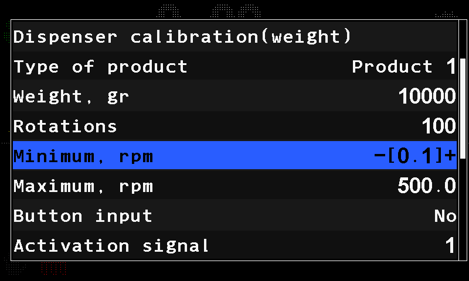
« Minimum, rpm » et « Maximum, rpm » ne sont pas une limite de sécurité, mais la plage dans laquelle travaille la régulation de dose. La plage de vitesse de dosage de l'écran d'étalonnage en est déduite, avec les valeurs du cylindre de dosage. « Button input » et « Activation signal » permettent à une seule personne de lancer le moteur depuis le doseur pendant l'étalonnage — voir Étalonner un moteur de dosage au poids.
L'écran d'état affiche « Working » (en marche) ou « Faulty » (en défaut) et le dernier code de défaut (Lire le code de défaut d'un moteur électrique). Alarmes : Alarmes des moteurs de dosage, Dosage au poids. Le contrôleur lui-même se règle dans Configurer les contrôleurs de moteurs. « Electric motors » (moteurs électriques) dans le menu contextuel (niveau « Service ») ouvre l'écran des moteurs sur ce moteur — le même écran que « Service » → « Electric motors » (Diagnostic des contrôleurs de moteurs).
Étalonner un moteur de dosage au poids
Laissez le moteur électrique faire tourner le cylindre de dosage au-dessus d'un récipient et pesez le produit, pour que le boîtier sache ce que délivre un tour.
Cet étalonnage mémorise la quantité de produit que délivre un tour du cylindre de dosage — « Weight, gr » (poids, g) et « Rotations » (rotations) d'un moteur. Refaites-le chaque fois que le produit ou le cylindre change. Il se fait au niveau « Operator » (opérateur).
Il vous faut : la machine à l'arrêt, un récipient pouvant contenir 1 à 60 kg de produit, et une balance.
Maintenez appuyée la vignette du moteur et choisissez « Dispenser calibration(weight) » (étalonnage du doseur au poids).
Le menu contextuel du moteur avec la rubrique d'étalonnage en haut. Le premier écran affiche les doses de consigne et, sous « Product dosage speed limitation: » (limitation de vitesse du dosage du produit), les valeurs « Min speed, km/h » (vitesse minimale) et « Max speed, km/h » (vitesse maximale) que permettent les réglages actuels. Si l'écran indique « Can not provide dosage! » (dosage impossible) en rouge, le cylindre monté ne peut délivrer la dose à aucune vitesse — l'étalonnage n'y remédiera pas ; montez un autre cylindre. Sinon, touchez « Calibrate electric motor N » (étalonner le moteur électrique N) (ou appuyez sur « PLUS »).
Le deuxième écran prépare le rotor. Pesez le récipient vide et notez le poids. Remplissez la trémie et placez le récipient vide sous le doseur.
Touchez « Fill the rotor cells » (remplir les alvéoles du rotor) (ou appuyez sur « MENU »). Le moteur fait tourner l'arbre entraîné de deux tours exactement et s'arrête de lui-même. « Stop motor » (arrêter le moteur) (« BACK ») l'interrompt. Répétez jusqu'à ce que les alvéoles soient pleines.
Touchez « Go to calibration » (passer à l'étalonnage) (ou appuyez sur « UP »). Le troisième écran affiche les « Rotations » avec une décimale.
Videz le récipient et placez-le de nouveau sous le doseur.
Touchez « Calibration » (ou appuyez sur « MENU ») : le moteur tourne. Touchez « Stop motor » (ou appuyez sur « BACK ») pour l'arrêter. Démarrez et arrêtez autant de fois que nécessaire — le compteur conserve le total cumulé. Remplissez le récipient autant que possible, pas moins de 1 kg et pas plus de 60 kg.
Touchez « Complete » (terminer) (ou appuyez sur « MINUS »). Le bouton apparaît dès que plus d'un tour complet a été effectué.
Pesez le récipient rempli. Le pavé numérique demande la différence entre le récipient plein et le récipient vide, en grammes — 1000 à 60000 g. Saisissez-la et touchez « OK ». Le boîtier mémorise « Weight, gr » et « Rotations » pour ce moteur.
Pendant le remplissage du rotor, le moteur tourne au milieu de sa plage « Minimum, rpm » … « Maximum, rpm », mais pas plus vite que 60 tr/min.
Faire tourner le moteur depuis un bouton au niveau du doseur
Si « Button input » (entrée du bouton) du moteur est réglé sur une entrée (1 … 3) et que « Activation signal » (signal d'activation) correspond à ce bouton (Moteur électrique de doseur), un bouton raccordé à cette entrée démarre et arrête le moteur exactement comme « Calibration » et « Stop motor » : le moteur tourne tant que le bouton est maintenu et s'arrête quand il est relâché. Une seule personne peut se tenir au doseur avec le récipient, sans retourner à la cabine entre deux passes. L'écran affiche les mêmes boutons, qu'un tel bouton soit installé ou non — le boîtier n'en donne aucune indication.
Quand l'étalonnage s'arrête de lui-même
L'étalonnage se termine par un échec si le moteur cesse de répondre, s'il déclenche une alarme, ou si dix secondes s'écoulent sans impulsions du capteur de rotation — le boîtier affiche alors « No data from rotation sensor » (aucune donnée du capteur de rotation). Un capteur de rotation bloqué ou débranché met fin à la passe au lieu de mémoriser discrètement zéro.
Capteur de turbine
Les paramètres du capteur de vitesse de la turbine — la plage de vitesse admise et le nombre d'impulsions par tour.
Le capteur de turbine surveille la vitesse de la turbine d'un semoir pneumatique, en ligne ou monograine. Ouvrez son menu contextuel comme dans Réglages des capteurs — l'image qui s'y trouve montre exactement ce menu.
| Paramètre | Ce qu'il fait | Plage | Niveau |
|---|---|---|---|
| « Minimum, rpm » (minimum, tr/min) | En dessous, le boîtier déclenche « Low speed of rotation » (vitesse de rotation trop faible). | 500 … 9000, par pas de 500 | Operator |
| « Maximum, rpm » (maximum, tr/min) | Au-dessus, le boîtier déclenche « High speed of rotation » (vitesse de rotation trop élevée). | 500 … 9000, par pas de 500 | Operator |
| « Pulses » (impulsions) | Combien d'impulsions donne un tour de turbine. | 1 … 60 | Agronomist |
L'écran d'état affiche la fréquence d'impulsions F= en Hz. Alarmes : Turbine ou arbre de doseur : alarmes de vitesse.
Capteur de pression
Les paramètres du capteur de pression d'air — le filtre de lissage et la plage de pression admise.
Le capteur de pression mesure la surpression ou la dépression du circuit d'air. Ouvrez son menu contextuel comme dans Réglages des capteurs.
| Paramètre | Ce qu'il fait | Plage | Niveau |
|---|---|---|---|
| « Filter » (filtre) | Le degré de lissage de la mesure. | 1 … 16 | Agronomist |
| « Minimum, Pa » (minimum) | La limite basse de la plage admise. | 0 … 10000, par pas de 100 | Operator |
| « Maximum, Pa » (maximum) | La limite haute de la plage admise. | 0 … 10000, par pas de 100 | Operator |
L'écran d'état affiche la pression P= en kPa. Alarmes : Pression d'air. Attribuer son adresse à un nouveau capteur de pression : Configurer un capteur de pression.
Capteurs de traceurs
Les paramètres des capteurs de traceurs — quel traceur surveille un capteur et quel état de l'entrée signifie *abaissé*.
Les capteurs de traceurs indiquent au boîtier quel traceur est abaissé. Le profil déclare « No » (aucun), « One » (un) ou « Both » (les deux) (Le profil). Ouvrez le menu contextuel d'un capteur de traceur comme dans Réglages des capteurs.
| Paramètre | Ce qu'il fait | Niveau |
|---|---|---|
| « Connected marker » (traceur raccordé) | « Left » (gauche) ou « Right » (droite). | Agronomist |
| « Signal "down" » (signal abaissé) | Quel état de l'entrée signifie que le traceur est abaissé. | Agronomist |
L'écran d'état d'un capteur de traceur n'affiche que les lignes communes.
Capteurs de trémie, de position de travail et de moteur
Les réglages des capteurs à deux états — niveau de trémie, position de travail de l'outil et les cinq capteurs du moteur du tracteur.
Ces capteurs signalent l'un de deux états, et rien de plus. Ouvrez le menu contextuel de l'un d'eux comme dans Réglages des capteurs. Leur écran d'état affiche Pin: et le niveau à l'entrée, "0" ou "1".
Capteur de trémie
Le capteur de trémie n'a aucun paramètre propre — son menu contextuel ne contient que les trois rubriques communes.

Alarme : Trémie vide.
Capteur de position de travail
Le capteur de position de travail indique au boîtier si l'outil est abaissé pour le travail ou relevé pour le transport. L'écran d'état affiche Position: Working ou Position: Transporting.
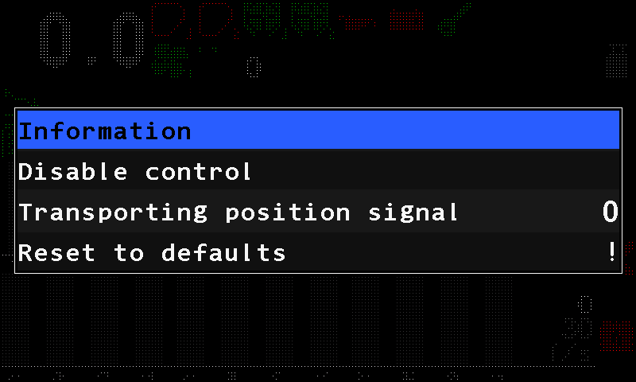
| Paramètre | Ce qu'il fait | Plage | Niveau |
|---|---|---|---|
| « Transporting position signal » (signal de position de transport) | Quel état de l'entrée signifie la position de transport. | 0 / 1 | Agronomist |
Le menu peut aussi contenir « Alarms criteria » (critère d'alarmes ; « Yes » / « No », niveau « Agronomist ») : avec « Yes », la valeur par défaut, les alarmes des capteurs de graines, d'engrais et d'arbre de doseur ne se déclenchent pas tant que l'outil est en position de transport ; la rubrique est masquée, et toujours sur « Yes », sur les machines à moteurs de dosage ou à contrôleur de pompe d'engrais liquide.
Capteurs du moteur
« No battery charge » (batterie non chargée), « Emergency oil pressure » (pression d'huile critique), « Ignition » (contact), « Low fuel » (carburant bas) et « Air filter » (filtre à air) sont cinq entrées distinctes, chacune activée séparément dans le profil (Le profil).

| Paramètre | Ce qu'il fait | Niveau |
|---|---|---|
| « Activation signal » (signal d'activation) | Quel état de l'entrée mérite d'être signalé. | Agronomist |
| « Signal delay, sec » (temporisation du signal) | Combien de temps cet état doit durer avant d'être pris en compte. Valeurs par défaut : 15 s pour le niveau de carburant, 5 s pour le filtre à air. | Agronomist |
Alarmes : Alarmes du moteur du tracteur.
Actionneur de jalonnage
Les deux paramètres de l'actionneur de jalonnage, l'endroit où se trouvent ses autres réglages et ce que montre son écran d'état.
L'actionneur de jalonnage ferme les tronçons du passage de jalonnage. Il a deux paramètres propres, dans son menu contextuel (Réglages des capteurs) :
| Paramètre | Valeurs | Niveau |
|---|---|---|
| « Cutoff position » (position de coupure) | « Pulled out » (sorti) / « Pulled in » (rentré) — la position de l'actionneur dans laquelle ses tronçons sont fermés. Par défaut « Pulled out ». | Agronomist |
| « Switch » (commutation) | « when seeding » (pendant le semis) / « always » (toujours) — quand l'actionneur est commuté. Par défaut « when seeding ». | Agronomist |
Le reste de ses réglages se trouve ailleurs :
| Quoi | Où |
|---|---|
| L'adresse et les canaux de traceurs de son contrôleur | Configurer un contrôleur d'actionneur de jalonnage |
| Le rythme — quel passage ferme quel actionneur | Rythme de jalonnage |
| Quels tronçons appartiennent à l'actionneur | « Actuators to sensors mapping » (affectation des capteurs aux actionneurs) — Paramètres du semoir |
L'écran d'état de l'actionneur affiche Status: Pulled in, Pulled out, Working pendant que l'obturateur bouge, ou Unknown. Alarmes : Alarmes de jalonnage.
Configuration des appareils — avant de commencer
Ce qu'est la configuration des appareils, la préparation qu'elle exige et le schéma en trois rubriques que suit chaque menu de configuration.
Quand un système est mis en service, ou qu'un capteur est remplacé, chaque nouvel appareil doit recevoir son adresse — le numéro par lequel le boîtier le retrouve sur le réseau de capteurs. Cela se fait dans « Service » → « Sensors Configuration » (configuration des capteurs), un appareil à la fois.
Préparation
Débranchez tous les capteurs du connecteur réseau du boîtier.
Branchez uniquement l'appareil auquel il faut attribuer une nouvelle adresse.
Allumez le boîtier. Des alarmes de communication perdue apparaissent — fermez-les toutes (Fonctionnement des alarmes).
Passez au niveau d'accès « Agronomist » (agronome) — voir Activer le niveau Agronomist.
Appuyez sur « BACK », puis choisissez « Service » → « Sensors Configuration ». Le menu propose quatre types d'appareils.
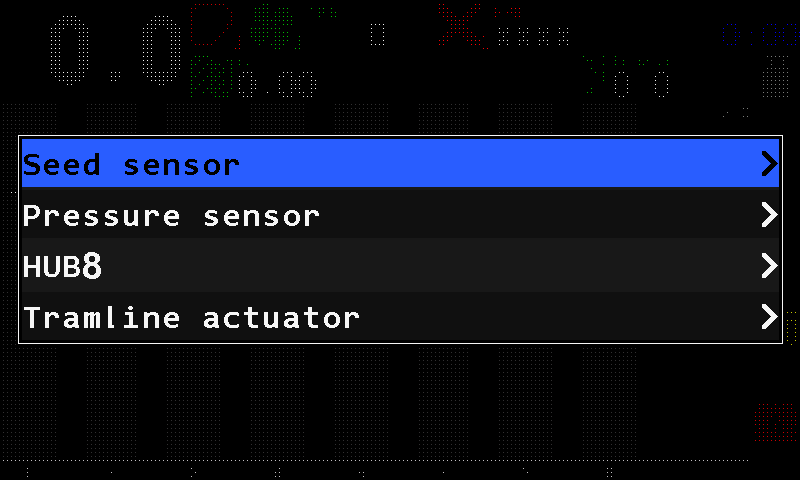
Le menu « Sensors Configuration ».
Le schéma
Les quatre menus fonctionnent de la même manière :
| Rubrique | De quoi il s'agit |
|---|---|
| « Sensor address » (adresse du capteur) / « Device address » (adresse de l'appareil) | Avec quel appareil le menu dialogue. Laissez « AUTO » et le boîtier dialogue avec l'unique appareil qui répond. Un appui sur « MENU » sur cette rubrique lance une recherche ; chaque appui suivant passe à l'appareil trouvé suivant. |
| « New address » (nouvelle adresse) | L'adresse que l'appareil doit prendre. Réglez-la avec « PLUS » / « MINUS ». |
| « Set » (valider) | L'écrit. « Done » (terminé) signifie que l'appareil l'a acceptée. |
Ensuite, à chaque fois : débranchez l'appareil et rebranchez-le, revenez à l'écran d'accueil et vérifiez qu'il apparaît à la bonne place. Remettez ensuite le niveau sur « Operator » (opérateur) — ou éteignez puis rallumez le boîtier, ce qui revient au même.
Les appareils
| Appareil | Rubrique |
|---|---|
| Capteur de graines | Configurer un capteur de graines |
| Capteur de pression | Configurer un capteur de pression |
| Dispositif d'entrée HUB8 | Configurer un HUB8 |
| Contrôleur d'actionneur de jalonnage | Configurer un contrôleur d'actionneur de jalonnage |
| Contrôleurs de moteurs électriques — leur propre accès | Configurer les contrôleurs de moteurs |
Configurer un capteur de graines
Donner à un capteur de graines neuf ou remplacé le numéro de son rang.
Pour un capteur de graines, la nouvelle adresse est simplement le numéro du rang — le même numéro que l'opérateur voit sous la colonne de l'écran d'accueil. Préparez d'abord comme dans Configuration des appareils : ce capteur seul sur le câble, niveau « Agronomist » (agronome).
L'adresse d'un capteur de graines ne peut être modifiée que lorsque le capteur fonctionne normalement. Un capteur à tube est prêt dès qu'il est branché. Un capteur ouvert doit être posé sur son support, ou maintenu de façon qu'aucune lumière du jour ne pénètre dans le canal optique — l'espace entre les deux verres. En pleine lumière, le capteur signale un flux de graines permanent et n'accepte pas la nouvelle adresse.
Choisissez « Service » → « Sensors Configuration » (configuration des capteurs) → « Seed sensor » (capteur de graines) et appuyez sur « MENU ». Le menu comporte trois rubriques.
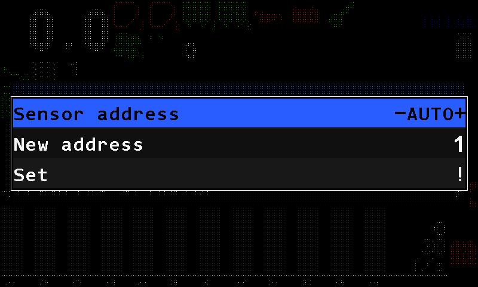
Le menu de configuration « Seed sensor ». Laissez « Sensor address » (adresse du capteur) sur « AUTO ».
Sélectionnez « New address » (nouvelle adresse) et réglez le numéro du rang avec « PLUS » / « MINUS ».
Sélectionnez « Set » (valider) et appuyez sur « MENU ». Le boîtier répond « Done » (terminé).
Le boîtier confirme par « Done ». Débranchez le capteur et rebranchez-le. Sur l'écran d'accueil, vérifiez qu'il apparaît sous son rang.
Quand tous les capteurs sont faits, remettez le niveau sur « Operator » (opérateur), ou éteignez puis rallumez le boîtier.
Configurer un capteur de pression
Attribuer son adresse à un capteur de pression d'air neuf ou remplacé.
Préparez d'abord comme dans Configuration des appareils : ce capteur seul sur le câble, niveau « Agronomist » (agronome). Le menu comporte les trois mêmes rubriques que tout menu de configuration. Les valeurs d'adresse ne sont pas imprimées dans ce manuel : prenez-les dans la fiche technique du système.
Choisissez « Service » → « Sensors Configuration » (configuration des capteurs) → « Pressure sensor » (capteur de pression) et appuyez sur « MENU ». Le menu affiche « Sensor address » (adresse du capteur), « New address » (nouvelle adresse) et « Set » (valider).
Laissez « Sensor address » sur « AUTO ».
Sélectionnez « New address ». Le boîtier propose de lui-même la valeur correcte pour le premier capteur de pression ; chaque capteur suivant prend la valeur suivante. Comparez la valeur avec la fiche technique et corrigez-la au besoin avec « PLUS » / « MINUS ».
Sélectionnez « Set » et appuyez sur « MENU ». Le boîtier répond « Done » (terminé).
Débranchez le capteur et rebranchez-le. Sur l'écran d'accueil, vérifiez que son indicateur apparaît.
Quand tous les capteurs sont faits, remettez le niveau sur « Operator » (opérateur), ou éteignez puis rallumez le boîtier. Ses paramètres : Capteur de pression.
Configurer un HUB8
Indiquer à un dispositif d'entrée HUB8 quel capteur est câblé sur chacun de ses huit canaux.
Le HUB8 porte plusieurs capteurs à la fois. Son menu est plus long que les autres : après l'adresse de l'appareil viennent ses huit canaux, chacun avec un type et un numéro. Préparez d'abord comme dans Configuration des appareils : ce HUB8 seul sur le câble, niveau « Agronomist » (agronome).

- « Device address » (adresse de l'appareil) — avec quel HUB8 le menu dialogue. Laissez « AUTO ».
- « Channel 1 type » (type du canal 1) — quel genre de capteur est câblé sur le canal 1.
- « Channel 1 address » (adresse du canal 1) — de quel capteur de ce genre il s'agit : trémie 1, doseur 2, etc.
- La valeur de la rubrique sélectionnée, modifiée avec « PLUS » / « MINUS ».
- Barre de défilement. Les canaux 2 à 8 suivent par paires identiques, puis « Set » (valider).
Le type et le numéro réunis font apparaître le capteur sur l'écran d'accueil sous la bonne icône.
Choisissez « Service » → « Sensors Configuration » (configuration des capteurs) → « HUB8 » et appuyez sur « MENU ».
Laissez « Device address » sur « AUTO ».
Pour chaque canal qui porte un capteur, réglez « Channel N type » et « Channel N address » avec « PLUS » / « MINUS ». Laissez tel quel un canal qui ne porte rien.
Sélectionnez « Set » à la fin du menu et appuyez sur « MENU ». Le boîtier répond « Done » (terminé).
Débranchez le HUB8 et rebranchez-le. Sur l'écran d'accueil, vérifiez que chaque capteur apparaît sous son icône.
Quand tous les appareils sont faits, remettez le niveau sur « Operator » (opérateur), ou éteignez puis rallumez le boîtier.
Configurer un contrôleur d'actionneur de jalonnage
Indiquer à un contrôleur d'actionneur quel actionneur de jalonnage il commande et quels capteurs de traceurs lui sont câblés.
Le contrôleur d'actionneur porte trois éléments à la fois — l'actionneur de jalonnage et les deux capteurs de traceurs du passage — et chacun a sa propre ligne. C'est pourquoi un seul contrôleur dessert un actionneur et les deux traceurs. Préparez d'abord comme dans Configuration des appareils : ce contrôleur seul sur le câble, niveau « Agronomist » (agronome).
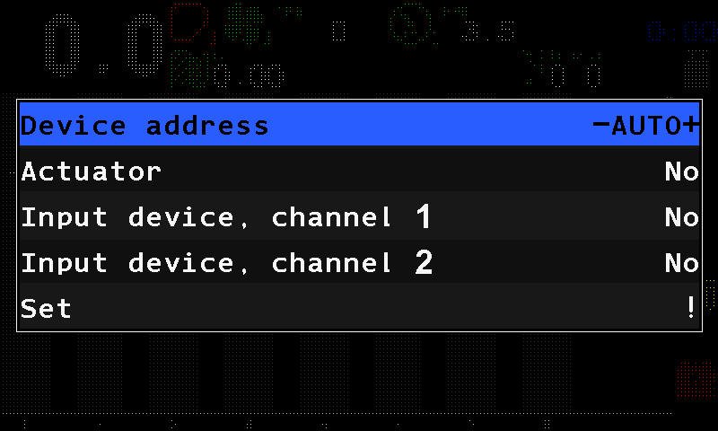
- « Device address » (adresse de l'appareil) — avec quel contrôleur le menu dialogue. Laissez « AUTO ».
- « Actuator » (actionneur) — le numéro de l'actionneur de jalonnage que ce contrôleur commande, ou « No » (aucun) s'il n'en commande pas.
- « Input device, channel 1 » (dispositif d'entrée, canal 1) — le premier capteur de traceur, ou « No ».
- « Input device, channel 2 » (dispositif d'entrée, canal 2) — le second capteur de traceur, ou « No ».
- « Set » (valider) — écrit les trois lignes dans le contrôleur.
Choisissez « Service » → « Sensors Configuration » (configuration des capteurs) → « Tramline actuator » (actionneur de jalonnage) et appuyez sur « MENU ».
Laissez « Device address » sur « AUTO ».
Réglez « Actuator », « Input device, channel 1 » et « Input device, channel 2 » avec « PLUS » / « MINUS ».
Sélectionnez « Set » et appuyez sur « MENU ». Le boîtier répond « Done » (terminé).
Débranchez le contrôleur et rebranchez-le. Sur l'écran d'accueil, vérifiez que l'actionneur et les traceurs apparaissent.
Quand tous les appareils sont faits, remettez le niveau sur « Operator » (opérateur), ou éteignez puis rallumez le boîtier. Les réglages propres de l'actionneur : Actionneur de jalonnage ; les traceurs : Capteurs de traceurs.
Configurer les contrôleurs de moteurs
Attribuer son adresse à un contrôleur de moteur de dosage, choisir le type de contrôleur et régler ses paramètres.
Les contrôleurs qui commandent les moteurs de dosage ne sont pas adressés depuis « Sensors Configuration » (configuration des capteurs). Ils ont leur propre accès, leur propre choix de type de contrôleur et leurs propres paramètres.
Ouvrir le menu des contrôleurs de moteurs
Passez au niveau « Service » (service après-vente) (Activer le niveau Agronomist — choisissez « Service »).
Appuyez sur « MENU » → « Service » → « Electric motors » (moteurs électriques). L'écran Motors s'ouvre.

L'écran Motors du moteur 1, page « Registers ». Appuyez sur « MENU » sur l'écran Motors. Deux rubriques apparaissent, toutes deux au niveau « Agronomist » (agronome) : « Change address » (changer l'adresse) et « Configuration ».

Le menu de l'écran Motors.
Sur un boîtier prévu pour un système sans moteurs électriques, « Electric motors » ne figure pas du tout dans le menu « Service ».
Changer l'adresse
Sélectionnez « Change address » et appuyez sur « MENU ». Trois rubriques s'ouvrent.
« Motor address » (adresse du moteur) — l'adresse à laquelle le contrôleur répond actuellement. Laissez-la telle qu'elle est.
« New address » (nouvelle adresse) — l'adresse qu'il doit prendre. Prenez-la dans la fiche technique du système ; les valeurs ne sont pas imprimées dans ce manuel.
Sélectionnez « Set » (valider) et appuyez sur « MENU » pour l'écrire.
Choisir le type de contrôleur
« Configuration » ouvre la configuration du contrôleur. Quatre types sont pris en charge, proposés par numéro :
| Type | De quoi il s'agit |
|---|---|
| « 1)universal » | Le contrôleur universel : deux canaux à courant continu ou un canal pas à pas sur la même carte. |
| « 2)DC motor » | Un contrôleur de moteur à courant continu. |
| « 3)STEPPER fw0.006+ » | Un contrôleur de moteur pas à pas, micrologiciel 0.006 et suivants. |
| « 4)BGxxCI » | Un moteur BG45CI à contrôleur intégré, sur l'ancienne carte. |
Le boîtier relit le type auprès du contrôleur et s'ouvre sur celui qui répond. Choisir à la main un autre type sert à régler une carte de remplacement — pas à changer ce qu'est un moteur.
Régler les paramètres
Chaque menu de configuration se termine par « Set », et « Set » porte une valeur propre : le groupe d'adresses, de 0 à 3. Rien n'arrive au contrôleur tant que « Set » n'est pas validé — les rubriques situées au-dessus modifient les nombres que le boîtier détient, pas ceux sur lesquels le contrôleur fonctionne.
| Type | Ce qu'on lui donne |
|---|---|
| STEPPER (pas à pas) | « Pulses » (impulsions) 1 … 8192 — les impulsions d'un tour d'arbre moteur ; « Motor type » (type de moteur) dans une liste ; « Set ». |
| BGxxCI | « Pulses » 1 … 8192 ; « Set ». Rien d'autre — le contrôleur porte le reste. |
| DC motor (courant continu) | « Pulses », « Motor type », les termes du régulateur « PID kP », « PID kI », « PID kD » (0 … 65535, lus en centièmes), « TURBINA » 0/1, et deux couples vitesse–durée « TIME1 » / « SPEED1 », « TIME2 » / « SPEED2 » ; « Set ». |
| universal | Le jeu le plus étendu, en trois menus : « Work mode » (mode de travail), « Inputs setup » (réglage des entrées) et « Parameters » (paramètres). |
Le menu « Parameters » du contrôleur universel :
| Paramètre | Plage |
|---|---|
| « Motor type » | 0 … 255, d'après la table propre au contrôleur |
| « Pulses » | 1 … 8192 par tour d'arbre |
| « Acceleration,Ms » / « Deceleration,Ms » (accélération / décélération) | 50 … 65535 — la rampe de montée et de descente |
| « Minimum, rpm » / « Maximum, rpm » (minimum / maximum, tr/min) | 0 … 65535 — la plage de vitesse d'arbre |
| « PID kP », « PID kI », « PID kD » | 0 … 65535, centièmes |
| « !! Temp,*C » | 0 … 200 — la température à laquelle le contrôleur déclenche l'alarme |
| « I_peak,A » / « I_peak,mS » | le courant de crête et la durée pendant laquelle il peut être appelé |
| « I_push,A » / « I_push,Sec » | le courant de décollage et sa durée |
| « I_hilo,A » / « I_hilo,Sec » | le seuil de courant soutenu et sa durée |
| « Set » | écrit l'ensemble, au groupe d'adresses choisi |
Les rubriques « PID kP », « PID kI », « PID kD », « TURBINA », « TIME1 », « SPEED1 », « TIME2 », « SPEED2 », « !! Temp,*C », « I_peak,A », « I_push,A », « I_hilo,A » et leurs partenaires de durée s'affichent de la même façon dans toutes les langues du boîtier.
Lire ce que signale le contrôleur : Diagnostic des contrôleurs de moteurs.
Diagnostic des contrôleurs de moteurs
Comment lire ce qu'un contrôleur de moteur de dosage signale de lui-même sur l'écran Motors — vitesse, code d'erreur, tensions, température, courant, bits d'état et compteurs de défauts.
L'écran Motors est aussi l'écran de diagnostic d'un contrôleur de moteur. Il montre en direct ce que le contrôleur signale de lui-même. Ouvrez-le par « MENU » → « Service » → « Electric motors » (moteurs électriques) (niveau « Service »). La vue de travail du même écran est décrite dans Écran des moteurs.
- « Motor #1 » (moteur n° 1) — quel moteur est affiché. (−) / (+) passent au moteur précédent / suivant.
- « Registers » (registres) — le nom de la page.
- Le mot d'état — seize bits du contrôleur ; une case allumée (jaune) est un bit activé.
- La légende des bits — le numéro et le nom de chaque bit. Tableau ci-dessous.
- « Speed » (vitesse) / « Target speed » (vitesse de consigne) — ce que fait l'arbre par rapport à ce que le boîtier a demandé. Un écart qui ne se résorbe pas est le premier signe d'une charge que le moteur ne peut pas porter.
- « Error code » (code d'erreur) / « Act.posit. » (position actuelle) — le numéro d'erreur propre au contrôleur (codes), et la position à laquelle il se compte.
- « Volt.mot.,mV » / « Volt.elec.,mV » — la tension au moteur et à l'électronique, en millivolts. Une tension moteur très inférieure à la tension de l'électronique signifie que l'alimentation s'effondre en charge.
- « Temperat.,C » / « Current,mA » (température / courant) — la température du contrôleur et le courant qu'il appelle. Comparez le courant avec « I_hilo,A » réglé pour ce moteur (Configurer les contrôleurs de moteurs).
Les bits d'état
| Bit | Nom | Bit | Nom |
|---|---|---|---|
| 0 | Enable | 8 | Toggle |
| 1 | Error | 9 | CmdTgl |
| 2 | Warn. | 10 | CmdErr |
| 3 | Moving | 11 | StpHalt |
| 4 | Reach | 12 | LimCur |
| 5 | Limit | 13 | LimVel |
| 6 | FolErr | 14 | LimPos |
| 7 | HomDone | 15 | LimSVel |
La légende est écrite en anglais sur tous les boîtiers, quelle que soit leur langue : c'est une table de bits du contrôleur, et non un message à l'intention de l'opérateur.
Les compteurs de défauts

Les défauts que ce moteur a accumulés sur le champ choisi — ils font partie des statistiques du champ, et non du moteur :
| Compteur | Ce qu'il compte |
|---|---|
| « Jammed » (bloqué) | Le rotor a calé et le contrôleur a dû abandonner ou reculer. |
| « Disconnects » (déconnexions) | Le contrôleur a cessé de répondre. |
| « Other » (autres) | Tout le reste de ce que le contrôleur a signalé, surintensité et surchauffe comprises — elles n'ont pas de compteur propre. |
| « In failure » (en défaut) | La distance en mètres que ce moteur a passée à l'état de défaut. |
Chaque compteur est blanc à zéro et rouge dès qu'il ne l'est plus. Un chiffre rouge ne signifie pas que le moteur est en défaut maintenant — il signifie qu'il l'a été, quelque part sur ce champ, et que les semences déposées là méritent un coup d'œil.
Le menu Service
Toutes les rubriques du menu de maintenance, leur niveau d'accès, et celles qu'un technicien doit laisser tranquilles.
« MENU » → « Service ». Les rubriques que vous voyez dépendent du niveau d'accès (Niveaux d'accès). Le boîtier a quatre niveaux — « Operator » (opérateur), « Agronomist » (agronome), « Service » (service après-vente) et « Debug » ; « Debug » se situe au-dessus de « Service » et n'est utilisé qu'en fabrication.

| Rubrique | Niveau | De quoi il s'agit |
|---|---|---|
| « Profile » (profil) | Service | Quels appareils la machine possède, et combien. Le profil |
| « Sensors Configuration » (configuration des capteurs) | Agronomist | Attribuer leur adresse aux appareils. Configuration des appareils |
| « Registers » (registres) | Debug | Une vue brute des registres. Ne fait partie d'aucune procédure. |
| « Electric motors » (moteurs électriques) | Service | Les contrôleurs de moteurs de dosage. Configurer les contrôleurs de moteurs |
| « Serial number » (numéro de série) | Debug | Le numéro de série du boîtier, saisi une seule fois en fabrication. |
| « Count seeds always » (toujours compter les graines) | Agronomist | « No » (non) / « Yes » (oui) — maintenir le compteur de graines en marche même quand le boîtier l'arrêterait autrement. |
| « Enter key » (saisir la clé) | Agronomist | Saisit la clé de licence qui fait sortir le boîtier de l'état de démonstration. |
| « Set trial » (lancer l'essai) | Service | Démarre la période de démonstration. |
| « Trial, hours » (essai, heures) | Service | 1 … 999 — la durée de cette période. |
| « Imitation mode » (mode simulation) | Service | « No » / « Yes » — le boîtier travaille à partir de données simulées. Voir l'avertissement ci-dessous. |
| « Display type » (type d'écran) | Debug | Quel écran le micrologiciel pilote. Réglé en fabrication. |
| « Launch updater » (lancer la mise à jour) | Service | Redémarre le boîtier dans l'utilitaire de mise à jour pour prendre le micrologiciel sur la carte mémoire. |
Trois autres rubriques — le protocole du traceur et deux commutateurs d'enregistrement sur la carte mémoire — existent dans le micrologiciel, mais sont réglées pour ne jamais s'afficher. Elles sont inaccessibles à tout niveau.
« Imitation mode », « Display type », « Launch updater » et les deux commutateurs d'enregistrement s'affichent en anglais quelle que soit la langue réglée sur le boîtier.
Fonctionnement des alarmes
Quand le Hectare One déclenche une alarme, ce que montre la fenêtre d'alarme, comment la fermer et comment utiliser les rubriques d'alarmes de ce manuel.
Une alarme est une fenêtre qui s'ouvre par-dessus l'écran de travail, accompagnée d'un signal sonore. Elle vous indique qu'un appareil — un capteur, un actionneur, un contrôleur de moteur — ou le système dans son ensemble a détecté un défaut. Les rubriques d'alarmes de cette section sont classées par appareil à l'origine de l'alarme. Cherchez les mots que vous voyez à l'écran, et non une description de ces mots.
Quand le boîtier déclenche une alarme
Un défaut n'est pas signalé à l'instant où il apparaît. La condition doit persister sans interruption pendant la durée réglée dans « Alarm delay » (temporisation des alarmes) avant que la fenêtre d'alarme s'ouvre.
| Réglage | Valeur |
|---|---|
| Où il se règle | Menu « Settings » (réglages), rubrique « Alarm delay ». Disponible au niveau d'accès « Operator » (opérateur). Voir Le menu Settings. |
| Plage | 2 à 20 secondes, par pas de 1 seconde. |
| Valeur par défaut | 3 secondes. Une valeur hors de la plage est ramenée d'elle-même à la valeur par défaut. |
Une temporisation courte fait réagir vite le boîtier, mais aussi aux perturbations brèves — un seul cahot, une brève interruption du flux de graines. Une temporisation longue garde l'écran tranquille, mais un vrai défaut peut durer jusqu'à vingt secondes avant que vous en soyez informé.
Deux cas ne suivent pas la temporisation :
- La communication perdue se compte en interrogations, et non en secondes. « Connection lost » (liaison perdue) apparaît après trois interrogations de suite sans réponse de l'appareil.
- Juste après le réglage d'un capteur, ses alarmes ne sont pas traitées pendant un court délai de blocage. Cela évite une rafale d'alarmes pendant la configuration d'un appareil.
La fenêtre d'alarme

- « FAILURE! » (défaillance) — le titre de toute fenêtre d'alarme, quel que soit le défaut. Ce n'est pas le défaut lui-même.
- Le texte de l'alarme — le défaut. Cherchez-le sous ce texte dans les rubriques d'alarmes.
- Le type d'appareil qui déclenche l'alarme — ici un capteur de trémie. Le même texte peut venir d'appareils différents ; cette ligne vous dit lequel.
- Le numéro de l'appareil — ici la trémie 2. Quand plusieurs appareils du même type déclenchent la même alarme, ils partagent une seule fenêtre et sont listés ensemble, par exemple #3-5,8.
- « Close » (fermer) — ferme cette alarme. Plus bas.
Les alarmes du boîtier lui-même portent dans leur texte la ligne « HOME - close message » (HOME : fermer le message) à la place d'une ligne d'appareil. Les alarmes des capteurs ne la portent pas.
Fermer une alarme
| Ce que vous faites | Ce qui se passe |
|---|---|
| Touchez le bouton rouge « Close » de la fenêtre, ou appuyez sur « HOME » | Cette alarme se ferme. S'il y en a d'autres en attente, la suivante s'ouvre. Tant que la fenêtre est ouverte, « HOME » est la seule touche éclairée. |
| Maintenez « HOME » | Toutes les fenêtres d'alarme ouvertes se ferment d'un coup et le boîtier revient à l'écran d'accueil. |
Fermer une fenêtre ne répare pas le défaut. Les alarmes d'un capteur encore actives sont listées sur son écran d'état — voir L'écran d'état du capteur.
Les alarmes sont masquées aux niveaux d'accès supérieurs
Aux niveaux « Agronomist » (agronome) et « Service » (service après-vente), les fenêtres d'alarme ne s'affichent pas. Elles ne sont pas perdues : elles attendent. Quand vous revenez au niveau « Operator », le boîtier écarte celles qui ont disparu et affiche celles qui sont toujours vraies, l'une après l'autre. Voir Niveaux d'accès.
Ce qui n'est pas une alarme : SLOWER et FASTER
Quand la vitesse d'avancement sort de la plage autorisée, aucune fenêtre d'alarme ne s'ouvre. L'écran d'accueil affiche à la place « SLOWER » (plus lentement) ou « FASTER » (plus vite), et continue de l'afficher pendant que vous corrigez la vitesse. Voir Indicateurs.
Comment les rubriques d'alarmes sont rédigées
Chaque alarme a son propre titre, avec le texte exactement comme à l'écran ; quand le message tient sur deux lignes du boîtier, les deux lignes sont données. En dessous : ce que le boîtier a détecté et ce qu'il faut vérifier, dans l'ordre où un mécanicien le vérifie — d'abord les contrôles rapides sur le boîtier, puis la machine, puis le capteur lui-même.
Tout appareil : liaison perdue ou type d'appareil incorrect
Les deux alarmes que tout capteur, actionneur, contrôleur ou dispositif d'entrée peut déclencher — aucune réponse de l'appareil, ou un autre type d'appareil qui répond.
Ces deux alarmes ne sont pas liées à un type d'appareil particulier. Le nom de l'appareil dans la fenêtre d'alarme vous dit lequel est concerné. Fonctionnement de la fenêtre : Fonctionnement des alarmes.
« Connection lost » — liaison perdue
Ce que cela signifie. Le boîtier n'a reçu aucune réponse de l'appareil à trois interrogations de suite. Cela vaut aussi bien pour les capteurs, les actionneurs, les contrôleurs que pour le dispositif d'entrée.
À vérifier, dans cet ordre :
- L'appareil est raccordé au réseau.
- Le câble et le connecteur de l'appareil.
- L'alimentation de l'appareil. Elle doit respecter les valeurs du passeport de l'appareil.
« Wrong device type! » — type d'appareil incorrect
Ce que cela signifie. Un appareil d'un autre type répond là où le boîtier attend un appareil de ce type. La cause est soit un mauvais réglage du profil du système, soit une mauvaise configuration de l'appareil lui-même.
Que faire : appelez le support technique. N'essayez pas de corriger en modifiant au hasard le profil ou la configuration de l'appareil — voir Configuration des appareils.
Turbine ou arbre de doseur : alarmes de vitesse
Que faire quand la turbine ou l'arbre du doseur tourne trop lentement, trop vite ou pas du tout.
Le capteur de turbine et le capteur d'arbre de doseur utilisent les deux mêmes messages. Le nom de l'appareil dans la fenêtre d'alarme vous dit lequel c'est. Fonctionnement de la fenêtre : Fonctionnement des alarmes.
« Low speed of rotation » / « High speed of rotation » — vitesse de rotation trop faible / trop élevée
Ce que cela signifie. La turbine ou l'arbre du doseur tourne plus lentement ou plus vite que ce qui est admis.
À vérifier, dans cet ordre :
- L'organe surveillé — la turbine ou le doseur et son entraînement.
- Les réglages du capteur : pour la turbine « Minimum, rpm », « Maximum, rpm » et « Pulses » — voir Capteur de turbine ; pour le doseur — voir Capteur de doseur.
- Doseur seulement : la vitesse d'avancement affichée par le boîtier correspond à la vitesse réelle.
- Le capteur lui-même est en état de marche.
- Doseur seulement : lancez l'étalonnage — voir Étalonner la rotation du doseur.
« No rotation » — pas de rotation
Ce que cela signifie. L'arbre du doseur ne tourne pas. Seul le capteur d'arbre de doseur déclenche cette alarme.
À vérifier, dans cet ordre :
- Le doseur et son entraînement.
- Les réglages du capteur — voir Capteur de doseur.
- Le capteur lui-même est en état de marche.
Trémie vide
Que faire quand le boîtier signale qu'une trémie est en train de se vider.
Le capteur de trémie est placé dans la trémie à une hauteur fixe. Il signale quand le produit passe en dessous. Fonctionnement de la fenêtre : Fonctionnement des alarmes.
« Hopper empty » — trémie vide
Ce que cela signifie. Le niveau de produit dans la trémie est très bas. La trémie doit être remplie.
À vérifier, dans cet ordre :
- Remplissez la trémie.
- Si le produit se trouve au-dessus de la hauteur où le capteur est monté et que l'alarme persiste, vérifiez que le capteur est en état de marche. Son écran d'état affiche le niveau à son entrée sous la forme "0" ou "1" — voir L'écran d'état du capteur.
Le capteur de trémie n'a pas d'autres réglages que les réglages communs — voir Capteurs de trémie, de position de travail et de moteur.
Pression d'air trop élevée ou trop basse
Que faire quand le capteur de pression du circuit d'air signale une pression ou une dépression hors de la plage admise.
Le capteur de pression mesure la surpression ou la dépression du circuit d'air. Les deux alarmes considèrent la valeur absolue — l'importance de la pression ou de la dépression, quelle qu'elle soit. Les limites du capteur sont décrites dans Capteur de pression. Fonctionnement de la fenêtre : Fonctionnement des alarmes.
« High pressure » — pression trop élevée
Ce que cela signifie. La pression ou la dépression mesurée est supérieure à la valeur admise.
À vérifier, dans cet ordre :
- Réduisez la vitesse de la turbine.
- La position du volet de réglage de l'admission d'air, s'il y en a un.
- Le tuyau vers le capteur de pression est correctement raccordé, et la ligne de mesure n'est pas obstruée.
« Low pressure » — pression trop basse
Ce que cela signifie. La pression ou la dépression mesurée est inférieure à la valeur admise.
À vérifier, dans cet ordre :
- Augmentez la vitesse de la turbine.
- La position du volet de réglage de l'admission d'air, s'il y en a un.
- Les fuites de la gaine d'air.
- Le tuyau vers le capteur de pression est correctement raccordé, et la ligne de mesure n'est pas obstruée.
Dose appliquée trop faible, trop élevée ou hors surveillance
Que faire quand les capteurs de graines, d'engrais solide ou d'engrais liquide signalent une dose inférieure ou supérieure à la plage admise, ou trop peu de produit pour démarrer la surveillance.
Les capteurs de tronçon — graines, engrais solide et engrais liquide — comparent la dose qu'ils mesurent avec la consigne. Fonctionnement de la fenêtre : Fonctionnement des alarmes.
« Not under control! » / « Check seeding rate » — hors surveillance ! / vérifiez la dose de semis
Ce que cela signifie. Sur le nombre réglé de capteurs de tronçon, la dose de produit est inférieure au minimum dont le boîtier a besoin pour commencer à surveiller l'application.
À vérifier, dans cet ordre :
- La vitesse d'avancement affichée par le boîtier correspond à la vitesse réelle.
- La dose de consigne, ou la dose minimale d'alarme — l'une ou l'autre selon le mode de surveillance du groupe de tronçons.
- Il y a assez de produit dans les trémies ou dans la cuve.
- Capteur de graines ou d'engrais solide : « Fraction » dans ses réglages. Il peut falloir réduire la valeur. Voir Capteurs de graines et d'engrais.
- Capteur d'engrais liquide : « Pulses per liter » (impulsions par litre) dans ses réglages. Il peut falloir réduire la valeur. Voir Engrais liquide.
- Le doseur : est-il en état de marche et correctement réglé ?
« Under allowable rate » — dose inférieure à la valeur admise
Ce que cela signifie. Un capteur de tronçon — graines, engrais solide ou engrais liquide — a mesuré trop peu de produit pendant le travail.
À vérifier, dans cet ordre :
- Il y a assez de produit dans les trémies ou dans la cuve.
- La vitesse d'avancement affichée par le boîtier correspond à la vitesse réelle.
- Capteur de graines ou d'engrais solide : « Fraction ». Il peut falloir réduire la valeur.
- Capteur d'engrais liquide : « Pulses per liter ». Il peut falloir réduire la valeur.
- Capteur de graines : son état sur l'écran d'état (« Information » dans son menu contextuel) — voir L'écran d'état du capteur.
- Le doseur : est-il en état de marche et correctement réglé ?
« Over allowable rate » — dose supérieure à la valeur admise
Ce que cela signifie. Un capteur de tronçon — graines, engrais solide ou engrais liquide — a mesuré trop de produit pendant le travail.
À vérifier, dans cet ordre :
- La vitesse d'avancement affichée par le boîtier correspond à la vitesse réelle.
- Capteur de graines ou d'engrais solide : « Fraction ». Il peut falloir augmenter la valeur.
- Capteur d'engrais liquide : « Pulses per liter ». Il peut falloir augmenter la valeur.
- Capteur de graines : son état sur l'écran d'état.
- Le doseur : est-il en état de marche et correctement réglé ?
Trop de doubles ou de manques
Que faire quand un capteur de graines de semoir monograine de précision compte plus de doubles ou de manques que la valeur admise.
Les doubles et les manques ne sont comptés qu'en mode de semis « Precise » (précis) — sur un semoir monograine de précision. Fonctionnement de la fenêtre : Fonctionnement des alarmes.
« High % of doubles » — part de doubles élevée
Ce que cela signifie. La part de doubles que compte le capteur est supérieure à la limite réglée.
À vérifier, dans cet ordre :
- La vitesse d'avancement affichée par le boîtier correspond à la vitesse réelle.
- « Doubles error,% » (écart de doubles) dans les réglages du capteur de graines — la limite est-elle raisonnable ? Voir Capteurs de graines et d'engrais.
- « Fraction » dans les réglages du capteur de graines. Il peut falloir augmenter la valeur.
- L'état du capteur sur son écran d'état — voir L'écran d'état du capteur.
- Le doseur : est-il en état de marche et correctement réglé ?
« High % of skips » — part de manques élevée
Ce que cela signifie. La part de manques que compte le capteur est supérieure à la limite réglée.
À vérifier, dans cet ordre :
- La vitesse d'avancement affichée par le boîtier correspond à la vitesse réelle.
- Il y a assez de semences dans les trémies.
- « Skips error,% » (écart de manques) dans les réglages du capteur de graines — la limite est-elle raisonnable ?
- « Fraction » dans les réglages du capteur de graines. Il peut falloir réduire la valeur.
- L'état du capteur sur son écran d'état.
- Le doseur : est-il en état de marche et correctement réglé ?
Jalonnage : actionneur bloqué ou produit dans le jalonnage
Que faire quand l'actionneur de jalonnage se bloque, que ses capteurs de position se contredisent ou qu'un tronçon fermé distribue encore du produit.
L'actionneur de jalonnage ferme les tronçons du passage de jalonnage. Deux capteurs de position de volet indiquent au boîtier où se trouve son obturateur. Fonctionnement de la fenêtre : Fonctionnement des alarmes.
« Stall » — blocage
Ce que cela signifie. L'actionneur de jalonnage s'est bloqué.
À vérifier, dans cet ordre :
- Les capteurs de position de volet de l'actionneur sont en état de marche.
- Le mécanisme de l'actionneur de jalonnage est en état de marche.
« Illegal state » — état illicite
Ce que cela signifie. Les deux capteurs de position de volet se sont déclenchés en même temps. Avec une installation en bon état, c'est impossible.
À vérifier : les capteurs de position de volet sont en état de marche.
« Seeding to tramline » — semis dans le jalonnage
Ce que cela signifie. Un tronçon qui devrait être fermé pour le jalonnage distribue encore trop de produit. Le capteur de graines, le capteur d'engrais solide ou le capteur d'engrais liquide de ce tronçon l'a mesuré en mode de contrôle du jalonnage.
Capteur de graines ou capteur d'engrais solide — à vérifier, dans cet ordre :
- Le doseur et le mécanisme de coupure du flux sont en état de marche.
- « Tolerable sowing to tramline,% » (semis toléré dans le jalonnage) dans les réglages du groupe de capteurs de tronçon. Il peut falloir augmenter la valeur. Voir Capteurs de graines et d'engrais.
- « Fraction » dans les réglages du groupe du capteur qui alarme. Il peut falloir augmenter la valeur.
- L'état du capteur sur son écran d'état — voir L'écran d'état du capteur.
Capteur d'engrais liquide — à vérifier, dans cet ordre :
- Le doseur et le mécanisme de coupure du flux sont en état de marche.
- « Tolerable leak to tramline,% » (fuite tolérée dans le jalonnage) dans les réglages du groupe de capteurs de tronçon. Il peut falloir augmenter la valeur. Voir Engrais liquide.
Capteur de graines ou d'engrais obstrué, ébloui ou défectueux
Que faire quand un capteur optique de graines ou d'engrais signale un canal bloqué, trop de lumière, un défaut propre ou un micrologiciel périmé.
Les capteurs de graines et d'engrais solide comptent le produit par voie optique : un émetteur éclaire le canal, un récepteur voit chaque grain. Ces alarmes signalent l'état du capteur lui-même, et non la dose. Fonctionnement de la fenêtre : Fonctionnement des alarmes.
« Clogged » — obstrué
Ce que cela signifie. Le capteur de graines ou d'engrais solide a détecté que son canal optique est bloqué.
Que faire, dans cet ordre :
- Éliminez l'obstruction.
- Vérifiez qu'il n'y a pas d'accumulation de poussière dans le canal.
- Vérifiez l'alimentation du capteur. Elle doit respecter les valeurs du passeport de l'appareil.
« Light struck » — ébloui
Ce que cela signifie. Le capteur de graines ou d'engrais a détecté un niveau de lumière extrêmement élevé dans son canal optique.
Que faire : empêchez la lumière directe du soleil de pénétrer dans le canal optique du capteur.
« Broken » — défectueux
Ce que cela signifie. Le capteur de graines ou d'engrais solide a détecté un défaut qui lui est propre. Il faudra peut-être le remplacer.
Que faire : vérifiez l'alimentation du capteur. Elle doit respecter les valeurs du passeport de l'appareil. Si l'alimentation est en ordre, le capteur devra peut-être être remplacé — appelez le support technique.
« Old firmware! Wrong S&D calc! » — micrologiciel périmé, calcul des manques et doubles faussé
Ce que cela signifie. Un capteur de graines au micrologiciel périmé est utilisé. Il compte, mais ses manques et ses doubles ne sont pas fiables.
Que faire : appelez le support technique pour faire mettre à jour le micrologiciel du capteur.
Moteur du tracteur : pression d'huile, charge de la batterie, carburant, filtre à air
Que faire quand l'un des capteurs de moteur embarqués — pression d'huile, charge de la batterie, niveau de carburant, filtre à air — déclenche une alarme.
Tous les capteurs de moteur embarqués partagent un seul texte d'alarme : « FAILURE » (défaillance). Le nom du capteur au-dessus du texte vous dit lequel s'est déclenché. Fonctionnement de la fenêtre : Fonctionnement des alarmes. Les réglages cités ci-dessous sont décrits dans Capteurs de trémie, de position de travail et de moteur.
« Emergency oil pressure » — « FAILURE » — pression d'huile critique
Ce que cela signifie. Le capteur de pression d'huile basse s'est déclenché.
À vérifier, dans cet ordre :
- Le capteur de pression d'huile basse est en état de marche.
- « Activation signal » (signal d'activation) dans les réglages du capteur de pression d'huile basse.
- Si un capteur de clé de contact figure dans le profil : sa surveillance est-elle activée ?
- Si un capteur de clé de contact figure dans le profil : est-il en état de marche ?
« No battery charge » — « FAILURE » — batterie non chargée
Ce que cela signifie. La batterie n'est pas rechargée.
À vérifier, dans cet ordre :
- Le capteur de charge de la batterie est en état de marche.
- « Activation signal » dans les réglages du capteur de charge de la batterie.
- Si un capteur de clé de contact figure dans le profil : sa surveillance est-elle activée ?
- Si un capteur de clé de contact figure dans le profil : est-il en état de marche ?
« Low fuel » — « FAILURE » — carburant bas
Ce que cela signifie. Il reste peu de carburant dans le réservoir.
À vérifier, dans cet ordre :
- Le capteur de niveau de carburant est en état de marche.
- « Activation signal » dans les réglages du capteur de niveau de carburant.
- « Signal delay, sec » (temporisation du signal) dans les réglages du capteur de niveau de carburant. La valeur par défaut est de 15 secondes.
« Air filter » — « FAILURE » — filtre à air
Ce que cela signifie. Le filtre à air est colmaté.
À vérifier, dans cet ordre :
- Le capteur du filtre à air est en état de marche.
- « Activation signal » dans les réglages du capteur du filtre à air.
- « Signal delay, sec » dans les réglages du capteur du filtre à air. La valeur par défaut est de 5 secondes.
Dose au poids trop faible, trop élevée ou impossible
Que faire quand un produit dosé au poids — par un moteur électrique ou par un doseur à contrôle au poids — n'atteint pas sa dose de consigne, ou ne peut pas l'atteindre du tout.
Ces alarmes sont déclenchées par le système dans son ensemble, et non par un appareil. Elles existent pour chacun des quatre produits séparément : le nombre dans le message est le numéro du produit. Fonctionnement de la fenêtre : Fonctionnement des alarmes.
« Rate of Product 1 » / « is too low! » — ou — « is too high! » — dose du produit 1 trop faible / trop élevée
Même chose pour les produits 2, 3 et 4.
Ce que cela signifie. Le produit est appliqué en dessous ou au-dessus de sa dose de consigne en kilogrammes par hectare.
Produit dosé par un moteur électrique — à vérifier, dans cet ordre :
- La dose de consigne du produit.
- Les limites de vitesse en vigueur, sur l'écran d'état du capteur de vitesse — voir L'écran d'état du capteur.
- Les réglages du moteur électrique qui entraîne l'arbre du doseur — voir Moteur électrique de doseur.
- Le doseur.
- Le capteur de rotation du moteur électrique est en état de marche.
- La charge de travail du moteur. En dessous de 20 % ou au-dessus de 80 %, essayez un cylindre de dosage d'une autre taille : un cylindre plus grand si l'on applique trop peu, un cylindre plus petit si l'on applique trop.
- Étalonnez le cylindre de dosage — voir Étalonner un moteur de dosage au poids.
Capteur de doseur avec « Weight control » (contrôle au poids) activé — à vérifier, dans cet ordre :
- La dose de consigne du produit.
- Les réglages du capteur de rotation de l'arbre du doseur — voir Capteur de doseur.
- Le doseur.
- Le capteur de doseur est en état de marche.
- Étalonnez le cylindre de dosage — voir Étalonner le doseur au poids.
« Product dosage is » / « impossible! Check product » / « rate and calibration! » — dosage du produit impossible ! vérifiez la dose et l'étalonnage
Ce que cela signifie. Avec les réglages et la dose de consigne actuels, le produit ne peut pas du tout être appliqué au poids.
À vérifier, dans cet ordre :
- La dose de consigne du produit.
- « Min speed, km/h » (vitesse minimale) et « Max speed, km/h » (vitesse maximale) du capteur de vitesse — voir Capteur de vitesse.
- Les réglages des moteurs électriques qui appliquent les produits au poids, avant tout « Minimum, rpm » et « Maximum, rpm ».
- Étalonnez les cylindres de dosage des moteurs électriques.
- Si cela n'aide pas : montez des cylindres de dosage d'une autre taille.
User is Agronomist : les alarmes ne seront pas affichées
Pourquoi le boîtier avertit que les alarmes sont masquées, et comment les retrouver.
Fonctionnement de la fenêtre : Fonctionnement des alarmes.
« User is Agronomist! » / « Alarms will not be shown! » — utilisateur Agronomist ! les alarmes ne seront pas affichées
Ce que cela signifie. Les conditions de surveillance de l'application du produit sont réunies — la machine travaille — alors que le niveau d'accès « Agronomist » (agronome) est actif. À ce niveau, le boîtier n'affiche pas les fenêtres d'alarme. Le message n'apparaît qu'une seule fois pendant tout le temps où vous travaillez à ce niveau.
Que faire : remettez le niveau d'accès sur « Operator » (opérateur) :
Appuyez sur « MENU » sur l'écran d'accueil et sélectionnez « Settings » (réglages).
Sélectionnez « User » (utilisateur) et choisissez « Operator » avec « PLUS » / « MINUS ».
Appuyez sur « MENU ». Descendre d'un niveau n'exige pas de code PIN.
Éteindre puis rallumer le boîtier produit le même effet : après chaque mise sous tension, le boîtier démarre au niveau « Operator ».
Capteur de vitesse d'avancement en panne ou limites de vitesse contradictoires
Que faire quand l'un des deux capteurs de vitesse cesse de donner des impulsions, ou quand les vitesses minimale et maximale sont réglées à l'envers.
Fonctionnement de la fenêtre : Fonctionnement des alarmes.
« Speed sensor #1 failed » / « Speed sensor #2 failed » — capteur de vitesse n° 1 / n° 2 en panne
Ce que cela signifie. Le profil indique que la machine a deux capteurs de vitesse d'avancement, mais le boîtier ne voit de mouvement que sur l'un d'eux. Le numéro désigne le capteur muet. Cette alarme ne peut pas apparaître sur une machine à un seul capteur de vitesse.
Que faire, dans cet ordre :
- Vérifiez que les deux capteurs de vitesse sont en état de marche et réparez ce que vous trouvez.
- Si l'un des capteurs ne peut pas être réparé tout de suite : modifiez le profil du système de façon à n'utiliser qu'un seul capteur de vitesse — voir Le profil.
« Error in settings of Min/Max » — erreur dans les réglages Min/Max
Ce que cela signifie. Les vitesses d'avancement minimale et maximale réglées pour le capteur de vitesse se contredisent. Le boîtier ne peut pas décider si la vitesse actuelle est admise.
Que faire : vérifiez « Min speed, km/h » (vitesse minimale) et « Max speed, km/h » (vitesse maximale) dans les réglages du capteur de vitesse. Le minimum doit être inférieur au maximum. Voir Capteur de vitesse.
Moteur de dosage : blocage, défauts électriques, chargeur d'amorçage
Que faire quand le contrôleur d'un moteur électrique de doseur signale un blocage, un court-circuit, une surintensité, une mauvaise tension d'alimentation, une surchauffe ou un défaut inconnu.
Ces alarmes viennent du contrôleur qui commande un moteur électrique de doseur. Le nom dans la fenêtre d'alarme vous dit de quel moteur il s'agit. Fonctionnement de la fenêtre : Fonctionnement des alarmes.
« Motor jammed! » — moteur bloqué
Ce que cela signifie. Le contrôleur ne voit aucune rotation alors que le moteur devrait tourner.
À vérifier, dans cet ordre :
- Le doseur est en bon état et tourne librement.
- Le capteur de rotation du moteur est en état de marche, ainsi que sa liaison avec le contrôleur — le câble et le connecteur.
« Short circuit » — court-circuit
Ce que cela signifie. Le contrôleur a détecté un court-circuit.
À vérifier, dans cet ordre :
- Le câblage : les câbles et le connecteur sont intacts.
- Remplacez le contrôleur par un contrôleur en bon état pour le tester.
« Over current » — surintensité
Ce que cela signifie. Le courant a dépassé la limite.
À vérifier, dans cet ordre :
- Le moteur et le mécanisme de semis ne sont pas bloqués.
- Le câblage : les câbles et le connecteur sont intacts.
- Remplacez le contrôleur par un contrôleur en bon état pour le tester.
« Under voltage » — sous-tension
Ce que cela signifie. La tension d'alimentation du moteur est inférieure à la valeur admise. Le moteur ne peut pas tourner.
Mesurez d'abord la tension d'alimentation.
Si elle est trop basse :
- L'alternateur est en état de marche.
- La tension des courroies de l'alternateur.
- Le faisceau d'alimentation est fermement raccordé aux bornes de la batterie ou de l'alternateur, comme l'exige la tension d'alimentation requise.
- Les raccordements des câbles assurent un contact électrique fiable.
Si la tension d'alimentation est correcte : remplacez le contrôleur par un contrôleur en bon état pour le tester.
« Over voltage » — surtension
Ce que cela signifie. La tension d'alimentation du moteur est supérieure à la valeur admise. Le moteur ne peut pas tourner.
Mesurez d'abord la tension d'alimentation.
Si elle est trop élevée :
- L'alternateur est en état de marche.
- Le faisceau d'alimentation est fermement raccordé aux bornes de la batterie ou de l'alternateur, comme l'exige la tension d'alimentation requise.
- Les raccordements des câbles assurent un contact électrique fiable.
Si la tension d'alimentation est correcte : remplacez le contrôleur par un contrôleur en bon état pour le tester.
« Over temperature » — surchauffe
Ce que cela signifie. Le moteur a surchauffé.
Que faire, dans cet ordre :
- Laissez le moteur refroidir.
- Remplacez le contrôleur par un contrôleur en bon état pour le tester.
« FAILURE » — défaillance
Ce que cela signifie. Le contrôleur a détecté un défaut inhabituel qui exige l'intervention du support technique.
Que faire, dans cet ordre :
- Lisez le code de défaut : menu contextuel du moteur → « Information » → ligne « Last fault » (dernier défaut). Voir Lire le code de défaut d'un moteur électrique.
- Remplacez le contrôleur par un contrôleur en bon état pour le tester.
- Communiquez le code et le numéro du moteur au support technique.
« Device in bootloader! » — appareil en mode chargeur d'amorçage
Ce que cela signifie. Le contrôleur est resté en mode de mise à jour du micrologiciel et n'exécute pas son programme de travail. Il ne peut pas commander le moteur.
Que faire, dans cet ordre :
- Coupez puis rétablissez l'alimentation.
- Si le message revient, la mise à jour du micrologiciel du contrôleur n'a pas été menée à son terme. Appelez le support technique.
Pompe d'engrais liquide : alarmes de pression et de dose
Que faire quand le contrôleur de pompe d'engrais liquide signale une pression trop élevée, une panne du capteur de pression, ou une dose qu'il ne parvient pas à tenir.
Le contrôleur de pompe repose sur la même électronique que le contrôleur d'un moteur de dosage. Outre les alarmes de cette page, il déclenche toutes les alarmes électriques du contrôleur de moteur de dosage — « Short circuit », « Over current », « Under voltage », « Over voltage », « Over temperature », « FAILURE » et « Device in bootloader! » — avec la même signification et les mêmes mesures à prendre : voir Alarmes des moteurs de dosage. Fonctionnement de la fenêtre : Fonctionnement des alarmes.
« High pressure » — pression trop élevée
Ce que cela signifie. La pression mesurée du liquide est supérieure à la valeur admise.
Que faire, dans cet ordre :
- Réduisez la vitesse d'avancement.
- Dans les réglages du contrôleur de pompe, augmentez « Max pressure, Bar » (pression maximale) — voir Engrais liquide.
« Pressure sensor failure! » — panne du capteur de pression
Ce que cela signifie. Le signal du capteur de pression est sorti largement de sa plage de travail de 4 à 20 mA.
À vérifier, dans cet ordre :
- La liaison du capteur avec le contrôleur — le câble et le connecteur sont intacts.
- Le capteur est en état de marche. S'il est en panne, remplacez-le.
L'écran d'état du contrôleur de pompe affiche la pression et le signal brut du capteur en mA — voir L'écran d'état du capteur.
« Rate low » — dose trop faible
Ce que cela signifie. Le contrôleur de pompe ne parvient pas à atteindre la dose réglée.
À vérifier, dans cet ordre :
- La vitesse d'avancement affichée par le boîtier correspond à la vitesse réelle et est raisonnablement constante.
- La charge de travail de la pompe. Au-dessus de 90 % : roulez plus lentement.
- Charge inférieure à 90 %, ou fortement fluctuante : augmentez « Product rate error,% » (écart de dose du produit) dans le menu « Settings » (réglages) — voir Le menu Settings.
- La pompe est en état de marche.
« Rate high » — dose trop élevée
Ce que cela signifie. Le contrôleur de pompe applique plus que la dose réglée.
À vérifier, dans cet ordre :
- La vitesse d'avancement affichée par le boîtier correspond à la vitesse réelle et est raisonnablement constante.
- La charge de travail de la pompe. En dessous de 10 % : roulez plus vite.
- Charge supérieure à 10 %, ou fortement fluctuante : augmentez « Product rate error,% » dans le menu « Settings ».
- La pompe est en état de marche.
Lire le code de défaut d'un moteur électrique
Où le boîtier affiche le code de défaut numérique d'un contrôleur de moteur de dosage, et ce que signifie chaque code.
Quand un moteur de dosage déclenche « FAILURE » (défaillance), son contrôleur enregistre aussi un code numérique. Relevez-le et communiquez-le au support technique avec le numéro du moteur.
Sur l'écran d'accueil, ouvrez le menu contextuel du moteur en défaut : maintenez appuyée sa vignette, ou maintenez « MENU », passez au moteur avec « UP » / « DOWN » et appuyez sur « MENU ».
Sélectionnez « Information » et appuyez sur « MENU ». L'écran d'état du moteur s'ouvre.
Lisez la ligne « Last fault » (dernier défaut). L'état du moteur indique « Faulty » (en défaut) tant qu'une de ses alarmes est active.
Le même code s'affiche sous « Error code » (code d'erreur) sur l'écran Motors — voir Écran des moteurs et Diagnostic des contrôleurs de moteurs.
Les codes
Le boîtier n'affiche que le numéro. Les descriptions proviennent du contrôleur de moteur lui-même.
Erreurs de commande et de paramètre
Le contrôleur a refusé quelque chose que le boîtier lui demandait.
| Code | Description |
|---|---|
| -250 | Commande non valide |
| -251 | Commande inattendue |
| -252 | Syntaxe de commande non valide |
| -253 | Arguments de commande non valides |
| -260 | Nombre d'arguments non valide |
| -261 | L'index indiqué est supérieur à FFFFh |
| -262 | Le sous-index indiqué est supérieur à FFh |
| -300 | Le paramètre n'existe pas |
| -301 | Échec de l'écriture en mémoire |
| -302 | Échec de la restauration |
| -306 | Le paramètre ne peut pas être écrit |
| -307 | Le paramètre ne peut pas être lu |
| -308 | Valeur du paramètre hors plage |
| -316 | La version du jeu de paramètres mémorisé ne correspond pas à la version du micrologiciel |
| -318 | Le jeu de paramètres mémorisé a une somme de contrôle non valide |
| -322 | Le paramètre ne peut pas être réglé : l'axe est en mouvement |
| -325 | Le paramètre ne peut pas être réglé : le mode de positionnement est inactif |
| -340 | Le paramètre ne peut pas être réglé : un fin de course est actif |
| -343 | Le paramètre ne peut pas être réglé : une commande d'arrêt est en cours d'exécution |
| -350 | Paramètre non contenu dans l'index indiqué |
| -351 | Paramètre non contenu dans le sous-index indiqué |
Erreurs de l'appareil
Le contrôleur ou le moteur lui-même est en difficulté.
| Code | Description |
|---|---|
| -1000 | Tension d'alimentation trop basse |
| -1001 | Tension d'alimentation excessive |
| -1002 | Tension d'alimentation de l'électronique trop basse |
| -1003 | Tension d'alimentation de l'électronique excessive |
| -1020 | Surchauffe de l'appareil |
| -1021 | Surchauffe du dissipateur thermique |
| -1060 | Court-circuit d'un fil du moteur : entre fils du moteur, entre moteur et masse, ou entre moteur et alimentation |
| -1061 | Surintensité du moteur |
| -4000 | Erreur de poursuite dans la séquence de mouvement |
| -5100 | Fin de course actif |
Boutons et gestes sur chaque écran
Ce que fait chacun des sept boutons et chaque geste tactile — sur l'écran d'accueil, dans les menus, dans les fenêtres, sur le pavé numérique et sur chaque écran de travail.

Le panneau n'éclaire que les boutons qui ont une action sur l'écran que vous avez devant vous. Un bouton éteint ne fait rien à cet endroit. L'emplacement des boutons : Le panneau et ses sept boutons.
Types d'appui et de toucher
| Appui ou geste | Comment |
|---|---|
| Appui court | Appuyez sur un bouton et relâchez. |
| Appui long (maintenu) | Maintenez le bouton jusqu'à ce que le panneau réagisse. Certains boutons font autre chose quand ils sont maintenus. |
| Toucher maintenu | Gardez un doigt sur un point de l'écran jusqu'à ce que le panneau réagisse. |
| Double toucher | Deux touchers rapides avec un doigt. |
| Toucher à deux doigts | Un toucher avec deux doigts à la fois. |
| Glissement | Un long mouvement d'un doigt sur l'écran. Un mouvement court n'est pas reconnu. |
| Glissement à deux doigts | La même chose avec deux doigts. |
Écran d'accueil
| Bouton ou geste | Ce que cela fait |
|---|---|
| « HOME » | Écran de travail suivant : le tableau (Table). |
| « HOME », maintenu | Verrouille ou déverrouille l'application du produit. Un bip court confirme. |
| « MENU », ou toucher à deux doigts | Ouvre le menu principal. |
| « PLUS » / « MINUS » | Le premier appui sélectionne un champ de dose (il clignote) ; les suivants augmentent ou diminuent sa consigne. |
| « UP » / « DOWN » | Passent au champ de dose précédent ou suivant. Rien si la machine n'en a qu'un. |
| « BACK » | Libère un champ de dose qui clignote ; sinon ouvre le menu du passage de jalonnage, si le jalonnage est activé. |
| Double toucher | Règle le seuil d'alarme d'après la dose appliquée. Seulement pendant l'application. |
| Toucher et maintenir un appareil | Ouvre son menu contextuel. |
| Toucher et maintenir un champ de dose, puis glisser vers le haut ou le bas | Sélectionne le champ et modifie sa consigne. |
| Toucher et maintenir un indicateur kg/ha | Ouvre le pavé numérique pour la dose de consigne de ce produit. |
| Glissement vers la gauche / la droite | Table / deuxième écran d'accueil. |
Deuxième écran d'accueil
| Bouton ou geste | Ce que cela fait |
|---|---|
| « MENU », ou toucher le symbole des réglages | Ouvre le menu principal. |
| « HOME », ou glissement vers la gauche | Retour à l'écran d'accueil. |
| « HOME », maintenu, ou toucher et maintenir la main | Verrouille ou déverrouille l'application du produit. |
| Toucher et maintenir la dose, puis glisser vers le haut ou le bas | Modifie la dose de semis. |
| Toucher un chevron rouge ou vert | Met un moteur hors ou sous surveillance. |
| Toucher et maintenir un moteur | Ouvre son menu contextuel. |
Table
| Bouton | Geste | Ce que cela fait |
|---|---|---|
| « PLUS » / « MINUS » | Long glissement à deux doigts vers la gauche ou la droite | Tableau suivant ou précédent. |
| « UP » / « DOWN » | Glissement vers le haut ou le bas | Fait défiler les lignes. |
| « MENU » | Toucher à deux doigts | Demande « Zero readings? » (remettre les mesures à zéro ?). |
| « HOME » | Glissement vers la gauche | Statistics. |
| « BACK » | Glissement vers la droite | Écran d'accueil. |
Statistics
| Bouton | Geste | Ce que cela fait |
|---|---|---|
| « UP » / « DOWN » | Glissement vers le haut ou le bas | Fait défiler le rapport. |
| « PLUS » / « MINUS » | Glissement à deux doigts vers la gauche ou la droite | Affiche un autre champ. |
| « MENU » | Toucher à deux doigts | Menu de l'écran. |
| « HOME » | Glissement vers la gauche | Motors, ou l'écran d'accueil s'il n'y en a pas. |
| « BACK » | — | Écran d'accueil. |
| — | Glissement vers la droite | Table. |
Motors
| Bouton | Geste | Ce que cela fait |
|---|---|---|
| « HOME » ou « BACK » | Glissement vers la gauche | Écran d'accueil. |
| — | Glissement vers la droite | Statistics. |
| — | Toucher et maintenir une vignette | Menu contextuel de ce moteur. |
Dans un menu
| Bouton | Ce que cela fait |
|---|---|
| « UP » / « DOWN » | Déplacent la sélection vers le haut et le bas de la liste. |
| « MENU » | Entre dans l'élément sélectionné. Pour une valeur entre crochets, ouvre le pavé numérique. |
| « PLUS » / « MINUS » | Modifient la valeur de l'élément sélectionné d'un pas. Pour une valeur entre crochets, ils ouvrent le pavé numérique. |
| « BACK » | Quitte le menu, d'un niveau vers le haut. |
Pavé numérique
| Bouton ou toucher | Ce que cela fait |
|---|---|
| Toucher les chiffres | Saisir la valeur. |
| Toucher « OK », ou « MENU » (éclairé en vert) | Valider la valeur. |
| « BACK » (éclairé en rouge), ou toucher en dehors du pavé | Quitter sans rien modifier. |
| Toucher et maintenir le retour arrière | Effacer la valeur. |
| Toucher et maintenir . − | Commuter le signe moins, là où c'est admis. |
Fenêtres
| Fenêtre | Boutons |
|---|---|
| Confirmation | « PLUS » ou toucher « Yes » — confirmer. « MINUS » ou toucher « No » — refuser. « BACK » — annuler. |
| Information | Se ferme seule, ou par un toucher, « PLUS » ou « BACK ». |
| Alarme | « HOME » ou toucher « Close » — fermer cette alarme. « HOME » maintenu — fermer et revenir à l'écran d'accueil. Les autres boutons ne font rien. |
Termes
Les mots que ce manuel emploie pour les doses, la surveillance, les capteurs, le jalonnage et les appareils — ce que chacun signifie sur le Hectare One.
Doses et surveillance
| Terme | Signification |
|---|---|
| Dose | L'intensité de consigne réglée par l'opérateur. Le panneau compare l'intensité réelle à cette dose et signale un écart trop grand. |
| Erreur de dose | De combien l'intensité réelle peut s'écarter de la dose avant que cela devienne une alarme. Se règle par groupe de capteurs, en pour cent (« Rate error,% »). |
| Commande d'application du produit | Le panneau ne juge pas le semis à chaque instant : il commence à surveiller dès que les conditions sont réunies — la machine est abaissée et avance. Jusque-là, une section silencieuse n'est pas un défaut. |
| Dose minimale d'alarme | L'intensité la plus basse encore considérée comme normale — la ligne de contrôle du diagramme. En dessous, la section est signalée, quoi que fassent les voisines. Voir Le diagramme des sections. |
| Intervalle de parcours | Le tronçon du parcours sur lequel les manques, les doubles et les autres chiffres sont recueillis avant d'être retracés. Réglé par « Recalculation,m », que le panneau renomme « Recalculation,sec » quand le mode de semis compte en secondes et non en mètres. |
| Verrouillage manuel | Arrêt manuel de toute application de produit, par un appui long sur « HOME ». Une main jaune sur l'écran d'accueil montre que le verrouillage est actif. Voir Verrouiller l'application à la main. |
| Surveillance (d'un capteur) | Le fait que le panneau surveille ou non un capteur. Un capteur hors surveillance s'affiche avec ! et ne signale rien. Voir Mettre un capteur sous ou hors surveillance. |
Modes de contrôle du semis
| Mode | Signification |
|---|---|
| « Precise » (précis) | Graines par mètre, avec manques et doubles — semoirs monograines. |
| « Flow » (débit) | Graines par seconde par rapport à un seuil d'alarme — semoirs à céréales. |
| « Hybrid » (hybride) | Graines par mètre, avec une erreur de dose comme en « Precise » ; le seuil d'alarme peut être réglé automatiquement comme en « Flow ». |
Capteurs
| Terme | Signification |
|---|---|
| Capteur de surveillance de section | Le nom commun d'un capteur de graines, d'engrais solide ou d'engrais liquide. Un par section de la machine. |
| Capteur de graines | Compte les graines qui passent dans une section. Sur un semoir monograine, il distingue aussi les doubles et les manques ; sur un semoir à céréales, il ne mesure que l'intensité — les graines arrivent trop rapprochées pour être distinguées. |
| Capteur d'engrais solide | Le même appareil, qui surveille une conduite d'engrais granulé. |
| Capteur d'engrais liquide | Un débitmètre qui compte le volume passant par une section. |
| Capteur de vitesse | Mesure la vitesse d'avancement. La distance, la surface et toutes les doses en sont calculées. |
| Capteur de doseur | Contrôle que l'arbre du doseur tourne. |
| Capteur de turbine | Contrôle la vitesse de la turbine par rapport à un minimum et un maximum réglés. |
| Capteur de pression | Contrôle la pression ou la dépression, selon son raccordement. |
| Capteur de trémie | Signale quand le produit est tombé sous le point où se trouve le capteur. |
| Capteur de position de travail | Indique au panneau si la machine est abaissée en travail ou relevée pour le transport. |
| Capteurs de traceurs | Signalent quel traceur mécanique est abaissé, afin que le passage de jalonnage puisse avancer tout seul. |
Jalonnage
| Terme | Signification |
|---|---|
| Jalonnage | Une voie de passage laissée sans semis, créée en coupant une ou plusieurs sections sur des passages choisis. |
| Rythme | La séquence répétée de passages, avec les passages marqués sur lesquels des sections données ne doivent pas semer. Voir Régler le rythme de jalonnage. |
| Passage | Une traversée du champ par la machine. Le rythme les compte et revient au premier quand il n'y en a plus. |
| Actionneur de jalonnage | L'appareil qui coupe les sections. Un même calculateur d'actionneur porte trois choses : l'actionneur lui-même et les deux capteurs de traceurs. |
Appareils
| Terme | Signification |
|---|---|
| HUB8 (module d'entrée) | Un répartiteur à huit voies pour les capteurs qui n'ont pas de calculateur propre. Il les surveille et signale chacun au panneau comme s'il s'agissait d'un appareil. |
| Calculateur de moteur électrique | Pilote un ou deux moteurs de doseur, ou la pompe d'engrais liquide. Moteurs et pompe partagent un même calculateur — c'est pourquoi une machine ne peut pas avoir de pompe sans avoir aussi le calculateur qu'utiliserait un moteur. |
| SCM | Section Control Module (module de coupure de section) — l'interface par laquelle un système de guidage tiers peut couper des sections. |
| microSD | La carte mémoire, pour les rapports, les profils et les mises à jour du micrologiciel. FAT16 ou FAT32 seulement. |
| Profil | La liste de ce que porte la machine. Le panneau en tire ses écrans. Voir Profil. |
Niveaux d'accès
| Niveau | À quoi il sert |
|---|---|
| Operator (opérateur) | Le niveau auquel le panneau démarre après chaque mise sous tension. Le travail de tous les jours. Les fenêtres d'alarme ne sont affichées qu'à ce niveau. |
| Agronomist (agronome) | Les réglages de mise en service et la remise à zéro des statistiques. Exige un PIN, différent pour chaque panneau et donné dans la fiche de l'appareil. |
| Service (maintenance) | Le profil, le réadressage des appareils, les éléments « Reset to defaults ». Utilisé par le service après-vente. |
Détails : Niveaux d'accès.